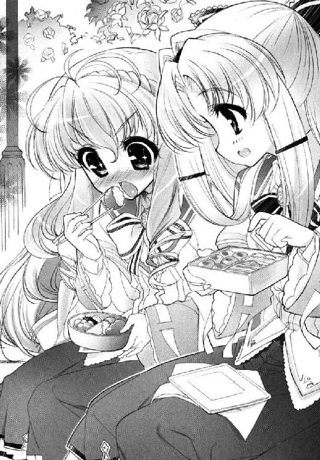

| SH@PPLE-しゃっぷる-(1) (富士見ファンタジア文庫) | |
| 竹岡 葉月 & よう太 | |
| 富士見書房 (2011) | |

本作品の全部または一部を無断で複製、転載、配信、送信したり、ホームページ上に転載することを禁止します。また、本作品の内容を無断で改変、改ざん等を行うことも禁止します。
本作品購入時にご承諾いただいた規約により、有償・無償にかかわらず本作品を第三者に譲渡することはできません。
本作品を示すサムネイルなどのイメージ画像は、再ダウンロード時に予告なく変更される場合があります。
本作品は縦書きでレイアウトされています。
また、ご覧になるリーディングシステムにより、表示の差が認められることがあります。
口絵・本文イラスト よう太
第１章 僕の場合
「......やん」
「やん言わない」
「ひひひひ、ひゃん」
「背筋のばす」
「ひゃ」
ぱしっと背中を叩かれる。
（だって）
肌にまとわりつくスリップの感触が、どうにもこうにも気恥ずかしいのだ。
「ま、舞ちゃーん。これ、ほんとに着けてなきゃダメなの？ ええとスリップじゃなくてタンクトップじゃなくて」
「ダメ。ブラウスの下はつねにジョーゼットのシュミーズ着用。校則で決まってる」
「そんな」
そっけない最後通告に、雪国は着ているスカートをもみしだく。
舞姫に手渡された肌着は、そのへんの女子高生が真夏に着ているキャミソールワンピースによく似ていたが、これを制服の下に着るらしい。
ためしに雪国は、下のシュミーズごとスカートをつまみ上げ、そして、そのまま指を離してみた。今となっては博物館級の、ひざ下丈のフレアスカート。ふわりと空気をはらんで落ちて行き、
「ひう」
こちらが少し体を動かすだけで、薄くて頼りない、そのくせてれんとやわらかいシルクの質感が直接素肌に貼り付いてくる。お、おそるべしだジョーゼットのシュミーズ。綿一〇〇のランニングとはえらい違いだ。
裾と紐を飾るレースが、これまたちくちくと存在を主張してこそばゆいやらなんやら......。
「がんばるユキグニ。愛しの蜜ちゃん、会いたくないのか？」
「う、うん......会いたいけどさ」
会いたいけど。
洗面台の鏡に映る自分は、どこからどう見ても『淡谷舞姫』だった。
腰までのびる長い髪。睫毛の長い涼しげな瞳。学院の誉れ『若光の君』と呼びならわされる、凛々しくも繊細な面立ちは、おどろきに固まってしまっている。しかもこちらが動揺して熱くなるのに合わせて、みるみる頰が赤らんでくるのだ。やめて。うるんだ瞳で恥じらわないで。どこのはにかみやのお嬢さんだ。
（僕だ）
愕然としてしまう。
「うひゃっ」
「大丈夫。こんなにそっくり。誰にもばれない」
舞姫が、肩越しに顔を近づけてきた。
青美女学院の制服を着る雪国とは対照的に、彼女は完全に『淡谷雪国』だった。
この日のために散髪し直した髪は、襟足までのショートカットだ。金ボタンもまぶしい詰め襟学生服を着こんでいる。ちょっとさっぱり切りすぎている感じだが、顔の作り自体はたしかに。
（僕だ）
雪国は考える。いったいどうしてこんなことになったのか。
つきつめて考えれば考えるほど、それは彼女が大事だからとか、自分が男だからとか、そういう譲れない一点につきてしまうのである──。
＊＊＊
──一週間前。淡谷家。
「ユキグニ。あさ」
淡谷雪国の朝は、軽快な宣言と自分の絶叫ではじまる。
あたたかい羊と輪になって踊っていたはずの自分は、あっという間に霧散して消えた。
「おはっ、ごはっ、ごごごごご、ごはっ、う、いま、いまなに口に入れて──」
「キムチと梅干し」
「なんて食い合わせだよ！」
どうりで途中で羊がニンニク風味になったはずだ。
「......もーちょっとで羊毛一〇〇パーセントだったのに......」
「わけわかんないこと言う。寝ぼけてんならたくあん追加する」
「おき、おきますっ！」
ごおん。漬け物攻めにされそうだったので、あわてて毛布を引き剝がすも。
「......っ、......っ、............っ！」
起き上がった拍子に、ベッドの縁に頭をぶつけた。ダメ押し。あまりの痛さに声もない。
二段ベッドの天井の低さなんて、もう何年も前からわかりきっていることだが、それにしたってこの縁は出っぱり過ぎていると思うのだ。
凹みの多い縁をにらんで隣を見れば、『殺人おめざ』を食わせた張本人が、笑いもしないでキムチの瓶をもてあそんでいた。
「目、さめた？」
「さめた。さめたよ。さめさめだよ......」
淡谷舞姫。
生まれて十四年、たぶん一番そばにいる片割れだ。
くしゃくしゃの長い髪に、飾り気のない水色のパジャマ。起き抜けなのは雪国と同じらしい。下のズボンはどこで脱ぎ捨ててきたのか、裾から太股と下着が丸見えだ。
十歳まで習っていたバレエ、続けていればいい線いったと思う。そういうすんなりまっすぐプロポーション。まっすぐすぎて色っぽさとは無縁なのがたまにキズ。
「......着替えてたんだよね、舞ちゃん」
「でも起きてこなかったから。ユキグニ」
クールだ。
半眼のまま説明してくれる彼女は、雪国よりジャスト二十分早くこの世に生まれ落ちた、双子の姉でもある。
二段ベッドと本棚で、便宜上二つに仕切られているだけの子供部屋は、雪国がいくら個人のプライバシーを主張したところで障子紙より頼りない。おかげでこちらの領土はあっというまに侵犯され、蹂躙され、今回のような『国境のトンネルを抜ければそこは雪国であった』的な越境事件が起きてしまうのである。
「舞ちゃん」
「なに」
「もーちょっと可愛いパンツはけばいいと思うんだ」
「死んじゃえ」
クールだ。
しこたま睨みつけられた少年は、睨まれたまま学ランを着込み、さらにはエプロンに手をのばす。
雪国たちの両親は、現在海外赴任中だ。雪国は空舟市内の一軒家に、祖母と舞姫の三人住まいである。自分の仕事で忙しい祖母の面倒も、血をわけた舞姫の面倒も、大事な庭木の面倒も、雪国はまとめてみている。
主夫になったつもりはないし、誰か他にやってくれないかなと思わなくもない。しかし人に任せればもっと悲惨な生活になってしまう以上、自分でやるしかないのである。
「あれ、おばあちゃん、いま起きたの？」
「......いんやー、いまから寝るー」
古いキッチンの間を、コマネズミのように立ち回っていると、先に祖母が顔を出してきた。離れの仕事場で作業していたらしい。渋い紬の着物はよれよれに着崩れ、たすきがけにした袖の結び目も取れかかっていた。なにより姿に死相が出ている。
「けけけ、血痕......」
「はいっ？」
「血......ルミノール反応......どう始末......」
ふらふらと冷蔵庫のドアを開け、祖母、中から迷わず赤い液体をチョイス。そのまま渇き飢えた野獣のごとく一気に飲み干し、土気色の甲で口元をぬぐう。
「そう......やっぱり毒が一番......」
神様。うちのおばあちゃんは本当に今も人間でしょうか。
淡谷菜穂子。ペンネーム淡谷猶彦。海外赴任中の両親にかわり、雪国たちの保護者をしてくれている彼女は、知る人ぞ知るミステリ作家だ。
トマトジュースで殺しを補給し、毎度ゾンビのように蘇る『おばあちゃん』を見ていると、ふと不安にもなるのだ。
「そういやあんたら。雪国か。あんたらの間でもあれは話題になってんの？」
「あれ？」
「ほら、あれだよあれ。なんて言ったっけ......この間も近所で若い子が襲われたとかいうし、教室で噂になったりしないのかい？」
ミステリ作家の性なのか、単なる好奇心なのか、菜穂子はその手の事件をやたらと気にする性質だ。雪国は、みそ汁を作る手を止めた。噂ねえ、と。
「あれっていうか......通り魔のことだよね？」
菜穂子の充血した目が、軽く輝いたような気がした。──やっぱりそうか。
噂と言っても、怪談話やツチノコのようなあいまいなものではない。たしか去年の暮れから市内で頻発している、通り魔事件の犯人のことだ。
ここで被害にあっているのは、主に市内に通う女子学生である。目立ったケガ人こそ出ていないものの、中には服や髪を切られている人間もいるらしく、夜間の一人外出はひかえるようにと、学年主任が朝礼で話していた気はする。
「うんうん。それよそれ。なあ雪国や、『Ｓ・ザ・リッパー』とかいろいろ言われてるっていうじゃないか。やっぱりジャック・ザ・リッパーからきてるのかね。Ｓは空舟のＳ？ それともマルキド・サドのＳ？ あんたのとこにも被害者はいるの？ 目撃者は？」
「いや、べつに。それ以上はよくわかんないよ。興味ないし」
「......雪国。あんた学校でいじめられてるとか、話し相手がいないとか、そんなのはないんだよね。なんかあったらすぐに、ばあちゃんか秋田のじいちゃんに言うんよ」
「どういう意味なのそれ......」
「謎とスリルが目の前にあるのに飛びつかないティーンエイジャーがどこにいるのさ」
いるからここに。
「めんどくさいじゃん。テストに出るわけじゃないし......」
「ああやだやだ枯れてるね。ミイラかね。だいたいお前さんときたらなんだい。休みだろうが勉強してるか家事してるかのどっちかじゃないか。ばあちゃんお前の将来が心配だよ。無趣味の公務員にでもなっちまいそうで」
それのどこがいけないのだ。
「あのねおばあちゃん。受験生に勉強するなって無茶言わないでよ。それに僕だって趣味ぐらいあるよ」
「へえなんだい」
「............ば、薔薇の葉っぱのムシ取りとか」
あ、目が。おばあちゃんの目が白くて痛い。
「へー、薔薇。薔薇ねえ」
「い、いいじゃないか庭いじりでも！ 癒し系だぞ。園芸は紳士のたしなみなんだぞっ」
「ここがイギリスならねえ......」
本当に可愛くない祖母だ。塩分多めにしてやる。
それに実をいうと、なくはないのだ。雪国とて普通の少年である。休みや放課後になったらあれがしたいとか、こんなことをして過ごせたらいいなとか、鉢植えの世話以外に切実な希望が──。
「ん？ なんだい顔赤くして」
「べ、べつになんにも」
言ったらまたからかわれる。言うものか。
「噂話なら、舞ちゃんとかの方が詳しいんじゃないの？」
「そうだねえ、あの子はあれで顔は広いらしいからね。まったく、顔は一緒なのに中身はぜんぜんだねえ......」
今日はなにやら、朝から禁句をいっぱい聞いているような気がする。
朝食をとるのかときけば、いらないという。菜穂子は仮眠を取ったあと、そのまま取材旅行へ行くらしい。
「場所は？」
「熱海」
今度の路線は湯煙毒殺紀行だろうか。
菜穂子を塩攻めにする計画は流れてしまったものの、かわりに舞姫が一階へおりてきた。
着替えと洗顔をすませた舞姫は、別人のように『麗しく』なっていた。
深みのあるワインカラーの上着と、膝下丈のフレアスカート。アクセントのリボンタイは、校章のブローチで留めてあった。いまどき珍しいご令嬢スタイルだ。
くしゃくしゃともつれっぱなしだったロングヘアも、きちんとブラシを入れて肩から背中へと流れている。凛々しくかつ優雅。とても人の寝起きにキムチを突っ込む人間には見えない。
小学校からエスカレーター式の女子校に通う舞姫は、対外的にはお嬢様で通っているのである。
「......どしたの、ユキグニ。鼻歌？」
「いや？ ほら、はやくご飯たべようよ舞ちゃん」
こんな姉ではあるが、一応自慢の種の一つでもあるのだ。
スカートの裾を気にして席につく舞姫の向かいに、雪国も腰掛けた。
四人がけのテーブルからはみ出さんばかりに並ぶ料理を前に、舞姫が涼やかなコメントをくれる。
「......今日はずいぶんと控えめだね」
「時間なかったしね」
いただきますのかけ声とともに、二人そろってフランスパンを丸かじりした。
「──ほら。ほらほら舞ちゃん早く。遅刻するよ」
「ユキグニ。せかさない」
「せかさないじゃないよ。いつまで食べてるつもりだよ」
「食べ終わるまで」
淡谷家の食卓はいつも戦場だ。
舞姫が、ふわりと髪をなびかせ玄関を出る。その間に雪国は自転車を引っ張ってきて、前カゴに鞄を二つ突っ込んだ。たしかに時間はギリギリだ。
サドルにまたがったところで、舞姫が荷台に横座り。こちらはペダルを踏み込んだ。
空舟市の西の端に、雪国たちが暮らす人力ニュータウンはある。
今から二十年ほど前、玉子山の斜面を切り崩して開発した住宅街だ。人力川にほど近い眺望と、緑の多さが当時の売りだったそうだが、坂は多いわ駅から遠いわで、見込んだほどの人口にはならなかったらしい。
四月の末。若葉の具合も鮮やかで、ガードレール沿いを吹き抜ける風は気持ちがいい。
走りながら顔を上げると、遠く人力川と鉄橋の列車が光って見えた。
「舞ちゃんのとこってさ、例の通り魔の話とか出てるの？」
「通り魔？ Ｓ・ザ・リッパーのこと？」
「あだ名はどこも共通か」
「他にもリコーダーとか言われてる。女子の縦笛なめてそうな変態だからリコーダー」
「............」
なんというか、女の子の総評は容赦がない。
「被害者は、いたはずだよ。二年の子だったかな。名前までは知らないけど」
「そっか......おばあちゃんが興味津々らしいよ」
「暇だね、あの人」
そうだろう。そう言うのが正しいティーンエイジャーだよね舞姫さん。
ちょっとすっぱり斬りすぎている感じなのが気にかかったが、それどころではなかった。
「いま何時？」
「七時五十分なり」
「うあああ」
これはまずい。駅に向かって自転車で十五分の雪国はともかく、舞姫はそこからさらにスクールバスなのだ。
この通学路、ゆるやかにカーブしながらまっすぐ空舟駅まで降りていくように見え、とんでもなく遠回りな蛇行をくりかえしてくれるのだ。
「もういいよユキグニ。間に合わないならボクだけ置いてきな。一緒に遅刻することない」
「いやっ。いいっ。なんとかする！」
ここで負けたら、あの子に会えない。
──ガクン。靴底に軽い衝撃。まるで新しいギアが入ったかのように、めまぐるしい勢いで自転車が加速していく。ちょうど道路が坂道へと入ったのだ。
もはやペダルを漕ぐ必要もない。加速したママチャリ二人乗りが、スーパーカブを追い抜いていく。それでもブレーキだけは握らずに握らずに握らずに。
「ま、ままままま舞ちゃん、やるよ？ やるよ？ いい？ 覚悟はいい？」
「やるかびびるかどっちかにするといい」
「素敵な後押しだあああああ」
限界までスピードが乗った先には、切り返しのヘアピンカーブ。
なにかを覚悟したように、舞姫がぎゅっと首にしがみつく。雪国、勢いをつけ、前輪を地面から持ち上げる。──ああ、空がひどく青い。
「うわあああああああああああああああああああああ」
そして雪国たちは自転車ごと、ガードレールの向こう側へとすっ飛んだ。
（........................ち、近道成功）
がっしょんとママチャリの前輪が着地したのは、ちょうどアスファルトの路上だった。
二人そろって一回転して地面を転がって、しかし生きてはいた。
ぷっぷくぱーと、眼前の大通りをバスやトラックが行き交っている。どう見てもそこは、空舟駅西口、交差点手前の路地である。
「......ふ、ふふふ。どうよ舞ちゃん。けがはない？」
「まあ、ないけどさ......」
交差点先のロータリーからスクールバスが出ているはずだから、余裕で間に合うだろう。
空舟駅西口発、青美女学院行き。通称お嬢様エクスプレス。
「じゃ、ね。ユキグニ。ボク行くから......」
「いやいやちょっとだけ待って！」
思わず雪国は、彼女の上着の袖にしがみついていた。
そう。待ってほしいのだ。雪国は舞姫の袖を取ったまま、そろそろと路地から顔を出す。
（──ああ、いた）
鼓動が速くなっていくのがはっきりとわかる。
ロータリーから出るスクールバスを待って、少女たちが列を作っている。裾も乱れぬワインレッドの乙女たちが、街路樹の緑に混じって並ぶ姿は、空舟駅前の朝の名物だ。
その中でも雪国は、一人の女の子をはっきりと見分けることができた。
（一駿河、蜜ちゃん......）
職人が精を凝らして作り上げたような、お人形のように整いきった顔立ちの中で、大きな瞳が人目をひいた。波打つ髪のリボンは日替わりで、今日は涼しい桜色のようだ。
はじめて彼女を見た時は、まだ制服も着ていなかった。市内の図書館の片隅に、清楚なワンピース姿で立っていた彼女。ゆるく波打つ髪と、雪国が棚から取り落とした園芸関係の本を、すっと戻して歩いていった後ろ姿。手には原書の詩集を抱えていた。
ありがとう。ただその一言を言いたくて、けれど撃ち抜かれた心の衝撃に声も出なかった。あれが世に言う『一目惚れ』だなんて、惚れた瞬間には気づかなかった。
それから春が来て三年生になって、こうして青美の制服を着てバス停に並ぶ蜜を見かけたとき、雪国はその場にしゃがみこみそうになったものだ。
「なに、ユキグニ。今日もあの子のこと見てるの？」
「なんであんなに可愛いんだろうなあ......」
「可愛い......」
「つきあってる子とかいるのかな」
「さあ。知らない」
「いるよなあ。あんなにあんなに可愛いんだもんなあ......」
「だめだ聞いてないや」
「髪、ふわっふわだあ......」
はあ。
あの子と友達になれたらどんなにいいだろう。もっと言うなら彼氏彼女になれたなら。
襟のリボンの色から察するに、雪国の一つ下。中等科の二年生らしい。名前を知るまでずいぶんかかり、そこから先には進めていない。
たった一度のニアミスなど、今現在となってはなんの効力もない。雪国にできるのは、こうして舞姫の送迎にかこつけて顔を出し、彼女の存在を確かめることぐらいなのだ。
「ほらユキグニ。早く行かないとキミも遅刻だよ」
「うん......」
わかっている。わかっているけれど、ひどく去りがたい心もあった。
いっそこのまま、同じバスに乗れたらいいのに。そうしたらもっと一緒にいられる。
「......舞ちゃんはいいな。一緒の学校で......」
こぼす雪国を、舞姫は薄笑いで見返した。
「気楽でいいよね、ユキグニは」
突き放すような、失望されてしまったような、どことなく疲れた声。
なぜだろう。最近の舞姫は、よくこんな顔をするようになった。
＊＊＊
空舟市立空舟第五中、三年Ｅ組。出席番号二番。
それが雪国の背中に貼り付けられた、ラベルというか成分表なのだろう。
もうちょっと詳しくラベルの表示を見れば、そこには『クラス委員』という肩書きがついていたり、『温厚の国の温厚大臣（ややうっかり）』というクラスメイトの評判なんかも書き込んであったりするのだが、そこまで詳しく見る人間はあまりいない。
だいたいラベルの『中三』という表示を見ただけで、たいていの人は『受験生』という名の冷蔵庫へ放り込んでしまうものである。
中三受験生。ナマモノですのでお早めにお召し上がりください。
（......まあまあ、かな）
返ってきた模試の判定用紙を折りたたんで、雪国は教室を出た。
受験生の中でも、さらに律儀でおりこうな部類に入る雪国少年。授業が終わったところでロッカーに教材一式置きっぱなしのような真似はしない。本日も予習と復習のため、きっちり辞書や参考書のたぐいは持ち帰る。
しかし今朝方打った腰だけは、いまだに放課後になっても痛んでいた。
「うー、いちちち......」
無理をして学校へ駆け込んだはいいが、保健室にも寄っておいた方がいいかもしれない。
「淡谷......その、いいか？」
「ふわい、なんれすか？」
なんですかと言おうとしたが、鼻がつまってうまく喋れなかった。
「と、取り込み中だったかな......」
「いや。もうれんれん平気らから」
ここはもう、無理にでも平静を押し通すしかなかった。
声をかけてきたのは、Ａ組の篤基史郎だった。
五中の生徒会副会長で、去年に続きクラス委員の雪国は、何度か代表会議のあとに話をしたことがある。いわく成績も数学から体育までオールラウンダー。顔、善し。背、高し。学年どころか、下級生や他校の女子にも人気があると聞いていた。
同じ優等生タイプでも、真面目が取り柄の雪国とは、根本的にできが違う感じだ。
「ちょっと頼みたいことがあったんだ。今度の定例総会の打ち合わせなんだがな──」
きっと一駿河蜜も、篤基のようなやつなら問題なくつきあうのかなと思って、あわてて考えをうち消した。いやだめだ雪国。冗談でもそんなことは考えたくない。
それでも思ってしまったのが、口にも出ていたらしい。篤基が吹き出した。
「なんだよ。悩み事か？ 模試の判定、出たんだろう。また抜かされたって聞いたぞ」
「そんな僕は」
いま切実に欲しいものと言えば、模試の点数よりもあなたのその足の長さなのだ。眼鏡をかけてものび太にならない男らしい顔でもいい。
なんなら全身お身請けしますよと思っていると、篤基が一度だけ、雪国を見返した。
まるで何事もなかったかのように、
「ごめんな。雑用ばっかり頼んじゃって。生徒会の執行部も忙しいみたいでな......」
「うん、いいよ。僕もやるからさ......」
別れ際、篤基副会長は雪国の肩に手を置き、あまり気にするなよと一声かけてくれた。うん、そうだ。やっぱり必要なのはこのさわやかさだ。
変革のきざしは、はじめからあった。
まず家に帰ると、玄関のたたきに舞姫の革靴が転がっていた。
──珍しい。彼女の方が早い帰宅だったらしい。
学校の役員やらなんやらをやっているはずの舞姫は、たいてい夕飯ぎりぎりに駆け込んでくるタイプなのだ。
しかしそれより気になるのは、どうしてその革靴が、左足だけなのかということだ。
廊下を見ると、靴のかわりに右の足跡が点々と、階段へ続いていた。なんとなく警察犬か探偵の気分であとを追うと、問題の靴の片方が、トカゲのしっぽのように踊り場の途中で脱ぎ捨ててあった。
（な、なんて脱ぎ方だあ）
シンデレラだって、もう少し優雅な脱ぎ方をしてみせるだろう。
「舞ちゃん！」
がつんと子供部屋を開けると。
「うあああああああああああああああっ！」
舞姫が荒れていた。
クラスメイトからプレゼントされたという巨大ぬいぐるみを振り回し、その腹へ拳をねじこみ、服装は半裸というかスリップ一枚というあられもない格好で、脱ぎ捨てられた制服が部屋中に散らばっている。
だあっ、だあっ、だあっと、言葉を知らない赤ん坊のような奇声をあげ、彼女はぬいぐるみを床に組み伏せた。かわいそうなクマのぬいぐるみが、組み伏せられたまま助けを求めている気がする。助けてユキグニくん。ボクこのままじゃ彼女に汚されちゃうよ。
「あの......舞ちゃん......」
クマを助けたかったわけではないが、とりあえず声はかけ直した。
スリップ姿の舞姫が、クマレイプの途中で、ゆっくりと振り返る。雪国はうっと言葉につまった。血をわけた双子の姉の瞳は、井戸の底のように真っ暗だった。
──ボク、もう、限界。
彼女はそうささやいて、そのままぶっ倒れた。
＊＊＊
花はいい。花は心をなごませる。
ハーブもいい。特にジャーマンカモミールのハーブティーには、鎮静作用があるのだそうだ。フローラル、お花の香り、僕を助けて......って、言ってる場合じゃないってば。
「そういうわけで舞ちゃん。飲めるならこれ飲んで」
一通り片づけの終わった舞姫スペースの真ん中に、雪国たちは座っている。
とりあえず、雪国は学ランで、舞姫はＴシャツとスパッツの部屋着に着替えていた。
雪国がマグカップに淹れたハーブティーを、彼女はうつむき加減に口へ入れた。
「なんかやなことでもあったの？」
「やっていうか......」
歯切れが悪いことからしてもう、いつもの舞姫ではない。
たしか今の舞姫は、青美女学院の中等科に通うかたわら、学校の生徒会に所属しているはずだ。
下は十三歳から上は十五歳まで、総勢一〇〇〇人近い乙女たちを束ねる生徒の代表機関が生徒会。今の舞姫の背中に貼られたラベルであり成分表なわけで、一年から執行部員として働く彼女の地位は、押しも押されぬ生徒会長サマのはずだ。
県下の男女のあこがれの園を束ねる舞姫に、自慢に近い思いを抱いていたのも本当で。
「......ボクね、青美で会長やってるから」
「うんうん。そうだよね。そう聞いてるよ」
「生徒会の代表で、青美の代表」
「かっこいいよね凛々しいよね」
「選挙の洗礼も受けてる」
「いいことじゃない」
「だから、ソロリティに負けてるとダメなんだって」
「は？ そろりてぃ？」
聞き慣れない言葉に、雪国、聞き返す。
舞姫は、どんよりどよどよしたまま語りだした。
なんでも青美女学院には、正規の部活動とは別に、社交ソロリティという学内組織の結成が黙認されているらしい。
空舟のキャンパス内に独自のソロリティ舎を構え、メンバーは互いに茶を淹れ合い、詩を暗唱し合い、友好を深めることを目的とするのだそうだ。
そう言われるとたしかに昔、薔薇だか天使だか、そんなきらきらしいグループ名を舞姫から聞いたような気がする雪国である。
「ええとなんだっけ、一番人気はロ、ロ、ロ......」
「ローズロワイヤル」
「そうそれ。いいんじゃないの、薔薇様。平和そうで」
「............」
「いやごめん。平和じゃないから困ってるんだよね」
こくこくこく。舞姫はうなずいた。
しかし正直雪国は、なにがまずいのかわからないのだ。
「あのね、ユキグニ。社交ソロリティってのは、誰にでも門戸が開かれてるわけじゃないの。家柄と年収がすべてなの。小さいとこでも『ひめゆり教授会』とか、親が大学教授限定のとこもある。『桜桃会』『シンシアリー』──いま言った『ローズロワイヤル』に入ろうと思えば、三代前の親の出自、現在の年収、寄付金の額に輩出したＯＧの数。全部調べられるの。昨日今日青美に入っただけの一般生徒なんてお呼びもかからないの」
雪国は、遠い目をした。
「それは、また、時代錯誤というかなんというか......」
「でも、みんなあこがれてる」
ひょっとすると、生徒会よりも。
実務と実績の生徒会と、伝統と格式のソロリティ。青美の二大勢力は、いわば国会と皇室のような関係で今日まで拮抗してきたらしい。物の例と違うところは、互いに学校の代表は自分たちだと信じて譲らず、ものすごく仲が悪いことだ。
「最近のロワイヤルメンバーは、うちの実務の方にも口出すようになってきてさ......」
それはお昼時の遭遇だったという。
場所は青美女学院中等科本館、『紀和子像』の前。まるで偶然を装うかのように、『ローズロワイヤル』の生徒が話しかけてきたという。
「舞姫さん。あなたどうなさるおつもり？ また通り魔の被害が出ましたのよ」
「へ......？」
別人のような声真似をしている舞姫に、雪国は口を開けた。
言ったのは蝶間林典子。通称『胡蝶の宮』。蝶間林グループ会長の孫娘で、しかも曾祖母の代から青美女学院に縁を持つ、屈指のお嬢様らしい。
ソロリティ全体のリーダー格でもある彼女は、朝に夕にと抗議しまくりらしい。やれ今の生徒会には気品が足りない、伝統を守る力もない。そしてなんとこのたび、彼女自身が通り魔に遭遇あそばされたのだそうだ。
ちょっとおどろいた。雪国が知らない間に、まだ事件は続いているようだ。
「なんかそのときはね、携帯電話で助けを呼んだから無事だったんだって。許嫁のエリートサラリーマンで、ケンブリッジの学位持ちの秀幸さん二十八歳」
「秀幸さん二十八歳......」
「ロンドンはサヴィルロウのオーダースーツで、さっそうと駆けつけてくれたんだって」
「はあ。とてもご立派......」
「ソロリティの子、みんな拍手してた」
それは蝶間林典子にとっては誉れであり、舞姫にとっては汚点になるらしい。
ぱちぱちぱち。響く拍手と、その中心で酔いしれる蝶間林典子さん（お嬢様）。
なにか明治あたりの光景を想像している気分になってきた。
「......けっきょく警察に突き出すには、あと一歩だったらしいけどさ......」
「ああ......」
淡々と語る舞姫の目つきは、心底うんざりしたものがただよっていた。
「で、でもそれはべつに、舞ちゃんのせいでどうこうってわけじゃ......」
「負い目は、ある。生徒全員にボディガードを付けるべきだっていう、向こうの提案蹴り続けてたのボクだから」
しかし、黙っていなかったのは身内というか生徒会の方だ。
『──舞姫さま！ どうしてあそこで言い返してくださらなかったんですか!?』
『──ソロリティ側のボディガード案を受け入れていたら、生徒一人あたりにかかる費用は一・五倍に跳ね上がっていたんですよ』
『しかも、蝶間林グループに警護を全委託するなど、一生徒の家系にのみ利益が流れる不公平な仕組み。生徒会として許可できなくて当然です！』
『断然抗議しに行くべきです！』
『ねえ舞姫さまあ！』
『舞姫さまあ！』
そう言って、生徒会側の少女たちにも小一時間説教というか、泣きながらつめよられてしまったらしい。
舞姫はうめくのだ。
「............べつに、やるよ。みんながしてほしいなら、抗議でもなんでも」
「うん。偉いね舞ちゃん......」
「クレーム対応っていうか、がんばるよ」
「がんばっちゃうんだ......」
「でも、なんでボク？ ボク一人だけ？」
「つまり、こういうこと？ 舞ちゃん的には、面倒なことだけ会長に押しつけんじゃねえ！ こちとら便利屋でもサンドバッグでもねーんだバーロー！ って感じ？」
「はは。ユキグニ、エスパー？」
「だって顔に書いてあるし」
土気色の顔のおでこあたりに。
「まさかそのまんま言っちゃったってわけじゃ」
「はは」
ああ、言っちゃったんだ。そうなんだねその半笑いは。
雪国は、そんな彼女になんと言葉をかけていいかわからなかった。
「............」
「............」
「............」
「............」
「......舞ちゃん？」
「言うなユキグニ」
「疲れてるんだね？」
こくりと。
はじめて彼女は、なんのためらいもなくうなずいた。
「..........................................なんかちょっと......ちょっとだけでいいんだけど......あそこにいるのは......疲れた......」
「僕が代わってあげられればいいのにな......」
雪国は、なにげなく、けれど本気でそう思ったのだ。
舞姫を助けてあげたかったし、なにより青美女学院に行けば、一駿河蜜にだって会えるかもしれないのだ。
しかし舞姫が、顔を上げていた。沈んだ瞳に、新しい光が輝きだし。
「......そうだよユキグニ。それがあった」
「え？」
「やろう。やっちゃおう」
「ち、ちちち、ちょっと待って。やるってなにを」
「ボクと雪国で。学校交換」
「うええええ!?」
はたして利害は一致──してしまったのか？
＊＊＊
無理だと思った。
無謀だと思った。
だけど二人はもう、この道しか見つけられなかったのだ。
学校交換に費やした準備期間は一週間。なにはなくても、お互いの生活環境を把握しなければならなかった。
間に大型連休を挟んだものの、準備期間中はお互いに学校を休んだ。雪国は舞姫の膨大すぎる『おともだちリスト』を覚えなければならなかったし、舞姫は雪国の学校の、受験一色な授業速度についていけるようにしなければならなかったのだ。
英単語や数式以外に覚えることがあるというのは、それなりに気がまぎれるものでもあった。少なくともそう、『受験生』のラベルの下で、信号が青になるのを待っているよりは、ずっとなにかを変えられそうな気がしたのだ。
かくして淡谷家の双子は、前述の通り入れ替わりをスタートさせることになる。
一人は少年。片思いの女の子のため、女装して私立青美女学院へ。
もう一人は少女。息抜きと疲労回復のため、男装して市立空舟第五中学へ。
「......あのさ舞ちゃん。やっぱり無理はしない方がいいと思うんだ。ほら、二人乗りってけっこう疲れるし、転んじゃったりとかしたら大変だし」
「でも、ボク、ユキグニだし」
「舞ちゃん」
「いいから後ろ乗って！」
責め立てられて、ちょこんと。裾をおさえて自転車の荷台に横座り。やっぱりなにか気恥ずかしいというかなんというか。
「うしゃ────────っ！」
学ラン姿の舞姫が、かけ声だけは勇ましく自転車をこぎ出す。
とりかえ通学、いざ出陣。
＊＊＊
私立青美女学院は、開校明治十八年という、Ｎ県で一番古い歴史を誇る女子校だ。
それは時の華族、堅城兼芳伯爵が夫人である堅城紀和子が、時代に先駆けた女子教育を施そうと、空舟の森に私財を投じ名家の淑女を集めて教育をはじめたのが発端であるといわれている。
貞淑であれ。
高潔であれ。
そして誇り高く青く可憐であれ。
鹿鳴館の華と謳われた紀和子夫人の思想は、時代を越えた今も受け継がれているという。
「......スタニスラウスは徐かに手を振つた。人に邪魔をせられずに落ち着いてゐたいと思つたからである。けふかあすかは知らぬが、自分はもうこの椅子から立ち上がらずにしまふのが分かつてゐる。併し最後の詞は、なんと云ふ詞にしようか、それはまだ極めてゐない──」
鳥のさえずりが響く森の朝。まだ始業の鐘も鳴る前の、静かな静かなソロリティ舎の片隅で、少女が歌うように言葉をつむぐ。
早朝朗読会で詩を暗唱するのは、『ローズロワイヤル』でも上級生にのみ許される栄誉だ。しかし今サロンの中心で詩編を詠みあげている少女は、まだ二年の生徒だった。
朗読が終わると、やわらかな拍手が響きわたる。「ああ素敵ね」「やっぱり蜜さんのリルケは格別ですわ」「さすがは一駿河のお血筋」──賞賛とともに招かれた席の中。彼女に回ってきたのは、銀の小箱に入った色とりどりのお菓子だった。
キャンディー。ボンボン。マカロンにチョコレート。どれも最上級生がパリから取り寄せたという高級品だ。
「......あの、わたくし、家での朝食がまだ......」
「まあ、お小食ですのね蜜姫は。遠慮なさらなくてもよろしいのよ」
「でも」
なんと言い訳しようか考えているうちに、ロワイヤルメンバーの一人が言ったのだ。
「そういえば皆様、もうお聞きになりまして？」
みなの視線が彼女一人に集中する。
「うふふ。耳よりな情報ですわよ。さきほど舞姫さんがご登校あそばされたそうで」
「まあ舞姫さん？ 若光の君が？」
「そうですの。胡蝶の宮にグウの音もなかったあの方。あたくしもう、おかしくっておかしくって。どうしてまともにお顔を出すことができるのかしら」
嘲笑の嵐だった。
場の中でただ一人の下級生である一駿河蜜は、まだお菓子を選びそこねていた。
本当はもっと、違う話が聞きたかった。生徒会のうわさ話ではなく、もっと別のこと。たとえばそう──胡蝶の宮が出会ったという事件についてとか。
緑深い青美の学舎。少女たちを映すフランス窓のすぐ向こうにまで、新しい火種はやってきているようだった。
幕間
昔話をしてみようか。
君がすべての光の中にいた時の話だ。
あの頃、君はうれしかった。たとえば青い空。たとえば白い雲。膝小僧をすりむかせながら、へとへとになるまで虫取りをしていた。
世界は町外れの線路で止まっていて、一日は夕飯の匂いとバラエティー番組の笑い声ですべてリセットされた。
違ってしまったのはいつだったろうね。
僕にもよくわからないんだ。
強いて言うならそう──。
第２章 学校へ行く
スクールバスのタラップを降りると、一瞬さわやかな高原の風が吹き抜けたような気がした。
雑木林に囲まれた細い私道を、ずっと走ってきたからだろう。
ああやっとついたと、雪国は駅から二十分少々の道を振り返り、大きく深呼吸をした。
ここはお嬢様エクスプレスの終着地。青美女学院。
正門へ続く小道は、ゆるやかな坂道になっており、同じワインレッドの制服を着た少女たちが、そろって列を作っている。かわされる「ごきげんよう」のごあいさつ。パンをくわえて遅刻寸前の女子も、スカートの下にジャージを着込んで自転車通学する女子も、もちろん一人もいなかった。
だってここはお嬢様エクスプレスの終着地。青美女学院。
（......って、感心してる場合じゃない！）
見物に来たわけじゃないのだ。すでに学校交換ははじまってしまっている。今の自分は舞姫で、このお嬢様の列の中に溶け込まなければならないのだから。
雪国は道行く少女たちの真似をして、ゆっくり、ゆっくり、校門へ向かって歩きはじめた。制服の背筋はのばして、進む歩幅は気持ち小さめに、あとはなんだ。
「まあ、舞姫さまでしてよ」
「お加減はもうよろしいのかしら」
そうさわやかに微笑む！
「お、おは、おはよう！」
声がした方向に向かって、同じように笑ってみたのだ。
だが、相手の少女たちは、とたんに顔をひきつらせてしまった。
雪国は、笑ったまま立ちつくした。ショックだった。ちょっとひきつってロボットっぽかったかもしれないが、せっかく笑いかけた仔羊ちゃんたちは、鞄を抱えて逃げていく。
（す、滑った？）
頭に血がのぼっていく。いったいなにがいけなかったのだろう。笑顔？ 立ち姿？ というかもうすでに男とバレている!?
どうしてみんな、他のみんなも。雪国を遠巻きにして凍り付いているのだろう。
他の人に声をかけようとする。結果は同じだ。固まり、凍り付き、人によっては悲鳴まであげられた。
──僕は、牧羊犬か！
雪国は、風にあおられるようにしゃがみこんだ。ああごめん舞ちゃん。
自分の半径十メートルを、きっかりすっぱり掃き清めてしまった状況で、腹をさばくか回れ右して帰ろうかと思った時だった。
「──どうぞ、このまま楽にしてください」
ふっと背中に手が回ったかと思うと、そのまま雪国は抱き上げられていた。
やわらかな石鹼の香り。同じ青美女学院の生徒だというのが、抱え上げられた視界の端でわかった。
「ご無事ですか舞姫さま。まだお加減が悪いのですね」
あうっと声をあげることもできず、雪国は固まってしまう。それがいかにも病み上がりの少女のように見えるらしい。その子はおどろきざわめく少女たちの間を縫って、校門の中へと入っていく。
最後には木陰のベンチで、雪国のことを解放してくれた。
「あれはいけませんね。混乱のもとです」
差し出されたハンカチを受け取って、青息吐息で呼吸を整えるものの。
「淡谷『若光の君』が、簡単に微笑まれるキャラクターではないことをお忘れですか？ 雪国さま」
「う、うん......そりゃそうかもしれないけど......え、う、あー、ああああ？」
雪国？
「申し遅れました。ワタクシの名前は久我原さゆね。生徒会会計にして、舞姫さまのシノビをしております」
「はいっ？」
すらりと背の高い、落ち着いた声音の少女だった。良く言えば怜悧、あるいは生真面目そうな切れ長のまなざしが、口を開ける雪国を見据えている。
幅広のヘアバンドで髪をおさえ、広い額に風をあてていた。
「舞姫さまを主君と誓った者です。此度の交換計画、一家臣としては忸怩たるものがございますが、よく世話せよという舞姫さまの仰せ。どうぞいかようにもお使いください」
十秒。二十秒。それでも雪国が凍り付いているものだから。
「久我原は上忍の家系なのです」
──たしかにそう、舞姫は、同じクラスで、こちらの生活を手助けしてくれる人間がいると言っていたが──。
「授業がはじまります。落ち着かれましたら参りましょう、淡谷舞姫さま」
「そ、そうですね......」
自分はなにか、ものすごいところにやってきてしまったのではないだろうか。
参りましょうと言いながら、自分の斜め後ろ四十五度を音もたてずに歩く久我原さゆねの視線だけを感じながら、雪国は舞姫の学校生活について考えるのだった。
＊＊＊
たしかに、すごいことはすごかった。
朝から晩まで、見えるものは女の子ばかりなのだ。
一歩入ればそこは、明治の昔に建材から輸入したという、荘厳華麗なゴシック建築物が校舎として使われている。ノートルダム大聖堂ばりの本館、および大ホールがあり、他に学年ごとの教室棟が一つずつ。最新鋭の体育館に温水プールはクラブハウスもかねており、さらには『白百合館』と呼ばれる特別学習棟があるらしい。まあそれはいいとして。
「今日の課題はなにかしら」
「バレーボールだそうですよ」
「困りましたわ。わたくし球技は苦手なのに」
──『ア』、アマリリス。ヒガンバナ科。学名Hippeastrum、花言葉は愛されることを知った喜び。
雪国の隣では、女の子たちがスカートのホックを外している。
「でもいいお天気でよろしゅうございましたね」
──『イ』、イカリソウ。メギ科。学名Epimedium grandiflorum、花言葉は君を離さない。
言ってる間に、しゅるり。どこからも涼やかな衣擦れの音。
おのおのブラウスのボタンを外してシュミーズ一枚になると、ピンクや水色、色とりどりのブラジャーやショーツが透けてのぞいた。
「あら千歳宮さま、今日は素敵なお召し物」
──『ウ』、ウメ。バラ科。学名Prunus mume、花言葉は高潔。
さらにそのシュミーズを脱いで畳んでいる女の子を、横から誰かがのぞきこむ。
「新しいインナーですわよね？」
「ふふ。わかります？ サイズが変わりましたから、新調いたしましたの」
「まあ。とうとうＤからＥに？」
「い、言わないでください！」
──『エ』、エニシダ。マメ科。学名Cytisus scoparius、花言葉は恋の苦しみ。
Ｅカップにご昇進されたらしい千歳宮さん、真っ赤になってじりじり後退していく。肩口からとんと壁際にあたって、自分で抱きしめる腕の間で胸がたゆたゆ揺れた。
「あさぎ組の誉れじゃありませんか。ほらね、みなさまご覧になって。千歳宮さまったらこんなに見事なお胸......ああ成長ってすばらしいものですのね......」
──『オ』、オリーブ。モクセイ科。学名Olea europaea、花言葉は平和。
たゆたゆ。ゆさゆさ。というかそのいかにも下から挟んで持ち上げる姿勢では、胸の谷間がより強調されて、ハーフカップのブラジャーのふちからあふれそうだ。みんなチラ視だったりガン視だったり、千歳宮さんのたわわな熟れっぷりを観察してしまっている。
「でも、こんなにあっても困ります......重いし......止まる気配もなさそうですし......」
「成長期ですものねえ......」
「どうしたらいいと思います？」
「まあ、この先大きくなってしまうのは止められないにしても。どこも寄せても詰めてもいらっしゃらないの？ ほら手、外して。こちらは？ ここにパッドは？」
「や、やだ。さ、触らないで蘭子さん......入れてません......はう、う、ぜんぶ本物ですから......う、う」
──『カ』、カトレヤ。ラン科。学名Cattleya、花言葉は成熟した魅力ううううう。
（だあっ。だめだあ！）
お花が清純なんて噓つきだ。あいつらみんな雄しべと雌しべで発情期じゃないか。落ち着けるわけないだろう。すぐ側で女の子の着替えなんて！
思わず趣味をののしるぐらい、雪国は混乱していた。右に左に上に下。見ていい場所がありすぎてなさすぎる。隣ではまだ女の子の悩み相談というか、Ｅカップのお触り会が続いている。ふわふわ、むにむに、ぷるっとぽろんと。冷静になれ凝視するなと植物の学名と花言葉を暗唱しはじめたのだが、どだい無理なものは無理なのだ。
一時間目の授業は体育。更衣室の片隅で固まる雪国の横では、クラスメイトの少女たちが、和気あいあいと体操服に着替えている。なにかが外れる気配にそわそわし、思いがけない単語にどきりとし、うっかり視界に入れでもすればグググと唸り、なんというかこう、これは──。
「............雪国さま。雪国さま」
「......................................................はい？」
リンゴン、リンゴン、真っ白に燃え尽きかけた視界の向こうに、久我原さゆねが立っていた。
「もう大丈夫ですよ。他の方々は着替えを終えられましたから」
「あ、そ、そう......」
「すごいですね。十歳ぐらい老けて見えますよ」
「うん。そんっくらい長く感じたね......」
雪国は、のそのそと制服のリボンをほどきはじめる。
「............ワタクシ女ですので、よくよく理解できないのですが。そんなにその、『きっつい』ものなのですか？」
「いやあ。きついなんてそんな。そんなはずないさあ......」
忘れるまい。この美しくも残酷な映像。このさき一生、棺桶まで大事に持っていこう。
たわわたゆたゆ肌色の──ではなく、女の子にまじってのバレーボールは、力加減がわからず明後日の方向へ飛ばすか打ちすぎで、本気でやるよりよほど疲れた。
「つ、次の授業は？ 久我原さん」
「英会話ですね」
よかった。普通の勉強だ──ほっとしつつも残念がっていたが甘かった。
「──さあ、どうしました舞姫さん？ 」
現在、雪国の眼前には、白髪の老婦人がいて、ほほえみながら問いかけてくる。
彼女の名前はミセス・ダフネ。実業家夫人として来日し、以後の長い年月を空舟市内で過ごすイギリス系アメリカ人だという。
のっけの授業で灰になった後、次に待ち受けていたのは彼女とのお茶会である。
回ってきたジノリのティーカップに目を奪われていた雪国は、あわてて背筋をのばした。
ディスカッションルームは、豪華ホテルのラウンジもかくやという輝きだ。現在、三年あさぎ組英会話専攻の生徒二十一名の貸し切り状態。クリスタルのシャンデリアの下、銘々にあてがわれたソファや長椅子の上で、クラスメイトが雪国の言葉を待っている。
ちなみに本日の議題、『〈風とともに去りぬ〉に見られる文学的愛の表現について』云々。
「あー、あの......〈風とともに去りぬ 〉の主人公は ......」
なんだろう。なにか言わなければならないのだろう。
だいたいあれはどんな話だったか。たしか年末にテレビで見たときは、茶髪で縦ロールの美人が、男をとっかえひっかえしながら大根くらってたくましく生きる話だったような気が。
「スカーレット ・オハラは ......」
戦争の中で、お金が足らなくて。
自分の手前の女の子は、あてつけや目的のために結婚するスカーレットは、愛が足りなくて許せないと、たどたどしい発音で話していた。
「次々と男を攻略していったのですが ......」
それにしても美人だったな、スカーレット役のビビアン・リー。
「それでも致すことができて、結婚した男もそれなりに幸せだったのではないかと ......思った ......しだい ......」
というかこれ、発言としては最悪では？
気づいたところでもう遅い。
「素晴らしい！ 」
ダフネ夫人、拍手喝采。
「文法も発音も完璧でしたねみなさん。さあみなさん、今の答えをご一緒に 」
冗談！
「It is happy to have sex with her.（彼女と性交するのは幸せです ）」
「もう一度！ 」
やめて。本気。君たち女の子でしょう！
ワンモア。ワンモア。頭の中にダフネ夫人の高い声がこだまする。
一時間目。目の毒。
二時間目。言葉攻め。
結論──なんかいろいろ死にます。
「......お、女の子になんて単語を連発させて......僕、こんなはずじゃ......」
嫁に。嫁に行けるのかあの子たちは。
「そうなると責任とらなきゃいけないのは僕の方で......ああでもあんなにいっぱいは無理だよ......そもそも僕は心に決めた人が......ハーレム......アラブに行けば大丈夫か......」
「問題ありません。舞姫さまらしい苦悩と威厳が表現されておりました」
「そ、そうなの」
こちらではこうなるのか。
久我原さゆねは、表情一つ変えずにコメントをくれるのだ。
「まずお忘れにならないでいて欲しいのは、校内のみなが舞姫さまに敬意を払っていることです。たとえソロリティに『ローズロワイヤル』があろうとも、生徒会長選挙で圧倒的勝利をおさめた『若光の君』の威光は揺らぎません」
雪国は、思わず黙りこんだ。
彼女の別名は『若光の君』。
いずれ光源氏にもなろうという人という意味だ。
本当に嫌われたり敬遠されていたら──こんなあだ名つけられない。
「......でもさ、久我原さん。朝にあいさつしたら、固まられたんだよ」
「そうですね。最近はそこまでのゆとりと申しますか、微笑まれること自体が、少なかったですから」
「そうなんだ......」
疲れて、疲れて、そして、とうとう爆発してしまった。
「申し訳ありません」
ああ、彼女は生徒会会計だったか──。
こうして取り澄ました顔をしているが、きっと内心は複雑なのだろう。
「......大事なんだね。舞ちゃんのこと」
雪国は、つい笑んでいた。
「だって僕さ、まだ来たばかりだし。しきたりとか上下関係とかよくわからないけど。でも、こんな面倒なことまでつきあってくれる友達が側にいてくれるって、それってすごい嬉しいんだよ」
「......天然」
「え？」
「なるほど。身内ですね」
家に帰った舞姫に、空舟五中の生活はどうだったかと聞いてみたが、ニンマリ笑ってＶサインをされてしまった。──参った。オチこぼれかけているのは自分だけらしい。
そして本来舞姫は、こんな風に笑える女の子のはずなのだ。
クールで孤高、そして孤独な生徒会長。
いったいどこでボタンをかけ違えてしまったのだろう。
交換開始から数日たち、気づけば大また開いて授業を拝聴のようなヘマもなくなってくると、そう思う余裕も生まれてきた。
「......あの、舞姫さま」
それは四時間目の数学が終わり、昼休みに入った頃だった。
「......私たち、お弁当を作ってきたんです。ご一緒しては......いただけませんか？」
雪国は、並ぶ彼女たちに見覚えがあった。
どの子もみな、名簿と写真で教えてもらっていた。中等科生徒会メンバーだ。
たしか準備期間中の勉強会でも、舞姫は言っていたのだ。日によっては生徒会の執行部が、持ち回りで弁当を作ってくることが多かったと。
緊張して萎縮しているような副会長に、雪国はまず笑いかけた。だってそうだろう？ おどろかれてもいい。ここで断る理由なんて、どこにもない。
＊＊＊
「──うわ、すごい」
天気が良かったので、教室や食堂ではなく、中庭の芝生にシートを広げてピクニック風にした。
用意されたランチボックスの豪華さに、雪国はまず目を見開いてしまう。
籐のカゴの中に入れてあったのは、ローストビーフとサラダ菜を挟んだライ麦サンドイッチ。ポテトフライとチキン唐揚げ。プチトマトの赤がとても綺麗だ。
「す、すごいね。何時間かかったの」
「お口に合いますかどうか......」
なにをおっしゃる。こちとらモノが食べたいと思えば、自炊か店屋物しか道がない身の上だ。がっついてしまいそうになるのをぐっとこらえ、目についた唐揚げを口へ。
瓜実顔の京美人で、『夕顔の君』とも呼ばれる副会長の花江みずきさんが、ひかえめに訊ねてくる。
「いかがですか？」
「ん、おいしい」
花江さん、ほっとした表情。それはきっと、料理がうまくできた以上の意味がこめられていたと思う。
みんな自分の小さな弁当箱には、まるで手をつけていないのだ。
「......本当に、申し訳ありません舞姫さま。私たち、みな舞姫さまに頼りすぎていたことを反省しております」
「ごめんなさい」
「舞姫さまあ」
「許して」
みな口々に謝ってくる。
手のこんだお弁当と、泣き出しそうな女の子を見比べてしまうと、雪国は本当に、参ってしまうのだ。
「部屋にさ......」
「え？」
「うちの部屋。ベッドの向こう側の机、可愛いモノでいっぱいなんだ。ぬいぐるみとか、トールペイントの額とか、ぜんぜん趣味じゃないのにどうしてあるんだってぐらいいっぱいあるの」
自分で集めたものなんて、あの中を見てもほんのわずかであろう。
（舞ちゃん、言ってた。友達から貰ったんだって）
今なら、わかる。その言葉の意味と重みが。
学院内で笑わなくても、頑なになってしまっていても、心の根っこでは、慕ってくれる子たちのことが好きなのだ。
「いくら文句言ってても、本当に嫌いな子のプレゼントなんて取っておいたりしないと思うよ......っていうか、そうなんだよね。はは」
明るく笑う雪国に、はじめて少女たちは笑顔になった。
「あ、あ、ありがとうございます！ 舞姫さま！」
一年庶務の女の子たちなど、本当に泣き出して、なぐさめようとする二年の先輩に飛びついて、シートの上は一気に賑やかになった。
「ああもう！ それにつけても悔しいのは、ソロリティの胡蝶の宮！」
ぷりぷり怒っているのは、デザートの紅茶シフォンを焼いてきた二年生書記、山吹都ちゃん。あれから雪国の腕にしがみついたまま、心底悔しそうに唇をかんでいる。
慣れない密着具合に戸惑いながらも、雪国はそのままいるしかない。
「あの方ったらですね、舞姫さまが休まれていたことをいいことに、本気で学院を牛耳るつもりですよ。わかっているだけでホールの無断使用三件、会計報告書の閲覧拒否一件。抗議すれば、ソロリティをあげて不信任案を提出するなんてちらつかせてきたり......」
「うわ」
ぎゅうっ、と押しつけてくる体にも力がこもる。
「..................け、けしからん。実にけしからんよ......」
「本当にそうですよね。でもですね舞姫さま、対抗手段がなくはないんです！ 先日の通り魔遭遇の一件、あそこさえ切り崩せられれば」
うんうんそうだねうんうん。ところでそのけしからん体と御髪からただよう匂いはシャンプーですか石鹼ですか関係ないですかそうですか。うっかり『リアル雪国』が顔を出しそうになって、それはだめだとうなずくものの、内容は深刻だ。
「......策とかあるの？」
「お任せください。この山吹都メモによりますと、もともと彼女が遭遇したという公園通り近辺。あそこは人通りも少なく、目撃者もない密室状態です。彼女が噓をつくにも絶好の場所です。まだ噂段階ですが、前回のＳ・ザ・リッパーの犯行に関して、『卵』の方に書き込みがあったという報告もあり──」
「書き込み？」
「ほら、あそこですよ。ひーほーひーほー、願えばかなうの魔法使いの卵」
だめだ。話が見えない。
ひーほーだのソロリティだのボディがいろいろけしからんだの、雪国と関係ないところで話題が転がっていくので、またボディに頭が行きそうになるが。
「──まあ、こんなところでお食事会ですの？」
張りのある声と制服の集団が、通りの向こうからやってきた。
目を丸くしている雪国の横で、さっと山吹都が身を離す。残りの執行部の少女たちも、いっせいに身を硬くしていた。
「生徒会の方々は騒々しいですのね」
「胡蝶の宮！」
「カフェテリアの方へ来ていただければ、あたくしたちで用意したシェフ村上のスペシャルブランチもお召しあがりになれましたものを」
「ぬ、ぬけぬけとよくも！」
──会長、お気を付けて。おだやかなはずの花江副会長さんも、警戒気味にささやいている。
「そのランチコース、地中海料理メインでお値段二万です」
うわあと顔をしかめる。
たしかに現れた蝶間林典子は、地中海コースにふさわしいお嬢様ぶりだった。
一歩、二歩。しなやかかつ優雅な歩行。そのたび、背中を覆う巻き髪のロングヘアがわずかに揺れ、白魚の指がそれを払った。背は高く、口許には常に余裕の笑みが浮かび、瞳の横のほくろが、あでやかさを増している。
真昼の日差しを避けるように、お付きの少女たちはパラソルをさしているが、彼女にかぎってだけは薔薇のレースに刺繡付きだ。
モダンというよりはクラシック、オールドムービーの女優のように濃く華やか。
思わず見惚れるほどの美貌なのだが──。
「ねえ、ごきげんはいかが舞姫さん。以前のお人柄が噓のように媚びへつらっているとお聞きしておりますけど」
悠然と微笑んでくる、棘だらけの茨姫。
「しょせんはその代の一般生徒から選ばれただけの二流な存在。媚びねば生きてはいけないことをお認めになったらいかが？ そもそも生徒会とあたくしたちローズロワイヤルとでは、歴史の重みが違いますもの。そうですわね......どうしてもとおっしゃるなら、名誉特別会員として早朝朗読会に参加させてもよろしくてよ。ねえ？ 素敵な毎日だと思いませんこと？」
近づいてくる姿態からは、ほのかに薔薇の香りがただよった。石鹼ではなく、たぶん香水。それもかなり高価な──実際につけている女性をはじめて見た。
そして芝生の目の前までやってきた時、彼女はいきなり悲鳴をあげた。
「こ、胡蝶の宮！」
勢いよくこちらへ倒れ込んでくる。レースのパラソルが宙を舞い、押し倒された形の雪国は、そのまま蝶間林典子の下敷きになる。
（むにゅ？）
おかしな感触に薄目をあけて、叫びそうになる。
受け止めていたのは、彼女の胸だった。
本当なのだ。仰向けに支える右手と左手が、のしかかってくる彼女の体を受け止めようと、思い切り、わしづかみに。平均的に見てもでかいというかお見事な張りのあったその胸の存在感は、遠目に見てもすごかったが、つかんでしまえばさらに。
「や、う......」
うわ本物だよ。ちょっと動かそうと指に力をこめれば、当然のように五本の指が右と左、ちゃんと彼女の胸を揉みしだいた。思わず探るような案配になってしまうが、片手だけでは全体像をつかみきれないから仕方がない。
（なんだこれ）
図らずも真剣に状況把握につとめてしまった結果、彼女自身の体重は、ちゃんと彼女の両手が支えているから、この手にあまるほど重くやわらかい感触は、純粋に胸だけのようだ。
蝶間林さんが、ふあん、と痛そうにないて、両胸をおさえて座り込む。
「だ、大丈夫ですか胡蝶の宮」
「誰か。いま誰か足をかけて......」
「まさか」
ふと横を見れば、『やってやりましたよ舞姫さま！』と言わんばかりに山吹さんたちが澄ましている。雪国は泣きたくなった。まずいよ。それはまったくもってグッジョブとは言えないよ執行部ガールズ！
（誰が間接攻撃に切り替えろといいましたか！）
もはやハンドボールよりでけえとか興奮している場合じゃない。向こうはブラウスのボタンまで取れかかっている。
「す、すすす、すいません胡蝶の宮！ すぐ直しますから！」
「え？」
「裁縫キット誰か持ってる？ ある？ じゃあ貸して。胡蝶の宮は上着脱いでください」
言い終わる前に彼女の襟に手をかけて、その上着を脱がせた。
誰のものかもわからないキティちゃんのお裁縫セットを手に持って、あらためて被害状況を確認。もののボタンはまだぶらさがってブラウスについているから、必要なのは針と糸だけでいいだろう。
「リボン、外しますよ。いいですね？」
「え、ええ......」
有無を言わさぬ調子に、黙々と胡蝶の宮のリボンと校章が外されていく。そして雪国は彼女の前で中腰になり、取れかかっていた第三ボタンを、そっと糸切りバサミで切り落とした。
ぽとり。雪国の手にボタンが落ちる。
もともと開きやすかったらしい彼女のブラウスは、それであっというまに隙間を広げた。
（──深い）
深淵すぎる谷間だ。
菱形にあいた、彼女のブラウスの合わせ。広いところでも、隙間は幅四センチほどだ。しかし、今さっき思い切り揉んで触って押し上げてしまった胸の谷間が、あまりに、あまりに無視できぬ深さで峡谷を作っている。
いったい何センチあるんだ。あの奥にはなにが？ 全体像はどうなる？ だめだ。考えるな雪国。感じるんだ。いやそれはもっとだめだ。
「......やっぱり、その、付けづらいんで、第一ボタンと第二ボタンも外していただけますか」
「わ、わかりましたわ......」
へたに谷間部分しか見えないから想像してしまうのだ。
ゆっくりボタンが外されると、のど元から胸の中心に向け、肌色の三角地帯がブラウス上にあらわれた。

しっとりと汗ばんだ、ほのかに吸い付きそうなぐらいになめらかな地肌。これもまた強烈だ。校則通りの純白のジョーゼットの下に、典雅きわまりないシルクのブラジャーのかけらがのぞいている。肌の面積部分が広がったぶん、いくぶん開放的というか、息がしやすい感じになる。それでも針を通す角度上、どうしても盛り上がった胸のふくらみや谷間を上からガン視する体勢になるが、そこはこらえて。ぐっとこらえて。
「こんな施しのような真似。いったいどういうおつもり？」
きっちり玉留めを作って針を通す。
ブラウスに針をくぐらすたび、指の背にいちいちあたるこれは、胸じゃない。胸じゃない。胸じゃないんだああああ。
「おつもりっていうか、気になるじゃないですか。まさかこのままぶらぶらさせてくつもりですか？ その格好で」
黙々と作業を続ける後ろで、執行部の生徒がざわめいている。
「うそ......あれ......ボタン付け......？」
「ボタン付けですわ！」
「......わ、若光の君が胡蝶の宮のボタン付けを！」
せっせせっせと針を動かす中、時が止まったようだった。雪国は真剣に糸留めをしてから、糸切りバサミで糸を切って応急処置完了。はじめて息をついた。
「............はあ。終わりです。落としてなくす前でよかったですね、胡蝶の宮」
「大きなお世話ですわ！」
「でも、よかったです」
雪国は、お裁縫キットに針をしまい直し、大役を終えた安堵感に小さく笑んだ。
蝶間林典子は金魚のように口をぱくぱくと動かし、目を見開いたまま言葉もないようだ。
「あ、淡谷舞姫が、このあたくしを心配？ そんなまさか......」
「あ、もしかして、糸が高級じゃないとか、そういうの気にしますか。だったらお家でもう一度付け直してもらうといいかも──」
周囲の執行部の生徒が、たまりかねたように叫んだ。
「いや～、舞姫さまずるい！ わたしたちにもやってください！」
「わ、わたしにも！」
「ぜひボタンを！ ボタン付けを舞姫さま！」
押し合い、へし合い、さっきまでの緊迫感が噓のようだ。しまいには自分の制服を破きはじめて修理を願う少女まで現れはじめる。
「いや、あの待って、僕そんなつもりじゃ......」
「ボタン！」
「ボタンです！」
「──あっ、空飛ぶパンダ星人！」
久我原さゆねの声だった。
しかし、一瞬でも気をそらされたが最後である。
「............舞姫......さまぁ？」
雪国の姿は、すでに現場から消え失せていた。
──感謝する、久我原さゆね嬢。
とっさの連携プレーにしては、うまくいったような気がする。
走るだけ走ってから、雪国は大きく息をついた。
「なにがなんなんだ......」
ボタンだ。たかがボタンだぞ。
女の子は素直でけなげで、そして、それ以上に理解不能だ。
ひんやりとした風が、頭上の木立を吹き抜けていく。ここがどこだか、雪国にはまるで理解できていなかった。
おそらく──中等科の外れにはいるのだろう。しかし、怖いほどに人気がない。グラウンドは反対側だろうし、遠目に見える屋根の形だけでは、あたりのつけようがなかった。
緑深く、小道に沿って植え込まれた植物は、薔薇やクレマチス、ルピナスやゼラニウムなど、色とりどりの花が満開で、さながら主のない庭園といった風情である。
思わず隠れ園芸紳士の血が騒いでしまうが、今は戻ることが先決だった。
「えー、その、誰かいませんか......？」
小道は不思議な花々の中を、迷路のように続いている。
雪国は小走りに呼びかける。
進んで、曲がって。
（あ──）
よかった。人がいた。
雪国はツル薔薇のアーチをくぐり、声をかけようとしたが、できなかった。
木製のベンチと、小さな噴水がしつらえられた円形の広場があった。女子生徒が数人、座りながら話し込んでいる。リボンの色を見るかぎり、みな二年の生徒のようだ。
どの子もみな、ふわふわきらきら可愛らしい感じだが、中でも一人が──一人が──。
「ねえ蜜さん、本当にまだやるの？」
「やる。だって許せないもの。魔法使いの卵にお願いしただけじゃ足りないわ。奈々実さんに乱暴しておいてどうして放っておけるの？」
「でも、髪だけだし......」
「髪だからよ」
なんて綺麗な声だろう。
そのとき雪国は、玉を転がすような声というのが、本当に現存することを知った気がした。
そしてその声の持ち主は、ずっと追い求めてきた一駿河蜜なのだ。
不意打ちにしても突然すぎた。声。顔。仕草。表情。すべてがタイムラグなしに一つのインパクトで、雪国の目の前に花開いていた。
ぱたぱたと、自分の目から『水』がこぼれてくるのがわかった。泣いているのだ。
彼女のウェーブがかかった色の薄い髪が、数ヶ月ぶりの近距離で風に揺れていた。こんなことに感動してるのか自分は。なんて安っぽい。なんてお手軽だ。でもただそれだけのことが欲しくて欲しくてたまらなかったんだ自分は！
遠目には夢見るように映っていた大きな瞳が、しっかりと相手の顔を見つめているのが意外だった。思ったよりも豊かな表情。凛という言葉がぴったりくる感じ。再確認と新発見。雪国の頭の中で、まるで増えなかった彼女の項目に、ものすごい勢いで情報が書き加えられていく。
もっと、もっと側に行ったらどうなるだろう。声をかけたら。あいさつしたら。
「お姉様のお話で、希望が出てきたと思うの。あの方は犯人のお顔もすべて見ていらっしゃるはずだわ。きっとなにか手がかりがつかめると思うの」
「蜜さん......私なんかのために......」
「泣かないで。お友達じゃない。皆さんがいなかったら蜜はこの学校にいられないのに」
「蜜さん。食べて。こちらも召し上がってくださいな」
『こちら』ってなんだろう。仲が良くっていいじゃない。そんなことよりねえ、ずっと知りたかったんだ。何も言わずに離れた君が、どんな声で話すのか。
頭の芯は熱く、花の匂いは甘く、一方で様々なことを考えながら、じゃれあっている少女たちに釘付けになってしまっていた。
「......さま。雪国さま......」
まずい──久我原さゆねだ！
まともに反応したのがまずかった。
「──わっ、若光の君！」
「いや、僕は」
派手に物音をたててしまい、少女たちが立ち上がる。
彼女たちは素早かった。持ってきていたランチボックスと水筒を手早く抱え、一目散に逃げていく。
（あ、あああ......）
とっさに追いかけたくても、髪に枝が。ヅラに薔薇が。身動きが、取れ、ない！
「......なんて格好なさってるんですか」
奮闘しているところに、久我原さゆねがやってきた。
ヅラを取らずにもつれた髪を分離しようとしていたのだが、雪国は彼女にこそ文句を言いたい気分でいっぱいだった。
「どこまで行かれたかと思いましたよ。まったく、心配ばかりかけてくださって」
久我原さゆねは、一緒にからまった髪を外しながら言った。表情こそ全く変わっていないが、不満には思っているようだった。
「あのさ、見てた？」
「なにをです？」
ほら。
いろいろこう、泣いていたり、ぐるぐる固まっていたりしたのを。
「それはまあ、わかりますよ。この久我原、なにもかも承知しておりますから」
「うえっ──」
「つまり雪国さまは──」
「ぼ、僕がなに？」
「ものすごく危険な方なのですよね」
こけた。
「は、な、なんだよいきなり！」
「まったく──舞姫さまの血縁者というのを甘く見ておりました。あそこでよりにもよってボタン付けですか。舞姫さまとは別方向に危険ですね。デンジャラスです」
「デ、デンジャラス？」
「あの胡蝶の宮を黙らせるとは。了解いたしました。ワタクシ、以後そのように情報を軌道修正いたします。淡谷雪国、意外性と天然にプラス３です。それでは五時間目の家庭科でお会いしましょう。教室は白百合館四◯五号室です。課題は『善き妻になるためのサバの味噌煮』。再見」
しゅび。
それこそ目にも見えない移動速度で、彼女は小道の向こうへ消えていった。
とても親切でありがたい子なのだが、やっぱりちょっとずれていると思う。
泣いていたことはばれていないようだし、彼女が消えた方向へ歩いていけば、五時間目の味噌煮に間に合うことはできるのだろう。
だけどもう、去ってしまった妖精たちを追うことはできないのだ。
雪国はため息をつき、空っぽのベンチへと歩き出す。
ここに彼女がいたのだ。ほんの一瞬だけど、ちゃんと目も合った。合ったのだ。
そして実際に腰掛けた時──雪国は、さらに意外な宝物を見つけてしまった。
「──ユキグニ。お風呂あいた」
子供部屋のドアを開け、舞姫が部屋に入ってくる。
風呂上がりらしい彼女は、紳士用ＬサイズＴシャツ一丁で、ベッドの下段に雪国がいるのを見つけると、もそもそと上がりこんでくる。
「なにしてる？」
「ちょっ、ちょ濡れる！ 雫落ちてるって舞ちゃん！」
「うるさいねユキグニ」
言われて舞姫は、首にかけたバスタオルで、洗い立てのショートカットを拭いている。
布団の上であぐらをかく様も、なにやら板についてきているような気がして、このまま日に日に『男子っぽく』なってしまったらと怖い考えが浮かんでしまった。
顔色も機嫌も悪くないし、五中ではうまくやっているのだろう──。
「舞ちゃん......」
「ん？」
「これ、なんだと思う？」
雪国は、手の中でもて遊んでいた品物をつまみあげた。
「......万年筆？」
そう。軸とキャップは深いボルドーで、ペン先とクリップ部分はぴかぴかの金色。明らかに使い捨てではないし、国産でもないだろう。
ボディの部分に、小さくISURUGAとネームが入っていた。
「わっ。一駿河蜜！」
「ふふふふ。ふふふふふふ。あは。あはははははは」
「最悪ユキグニ。とうとう万引き？ 犯罪？」
「違うよ落ちてたんだよ！」
ナチュラルにひどいことを言う姉に、雪国は叫んだ。
落ちていたのは、例のベンチの下だ。雪国があの場で見つけたうちの一つで、おそらく、あの騒動のときに落としてしまったのだろう。
「で、なに？ どうするの？」
「そりゃあもちろん、届けにいくのさあ！」
これはもう、神様が味方してくれているとしか思えない。とんとん拍子のステップアップ。とうとう諸手をあげて会いに行く理由ができたのだ。
「届けに......」
「ああ舞ちゃん、僕幸せだー！」
「でも、ユキグニ」
「さあ寝なきゃ。寝るね舞ちゃんおやすみ！」
お墨付きをもらって安心したように、そのまま雪国は爆睡した。
「............あはははは。やーもー困っちゃうよなあ僕......」
「......それ、なに。寝言？」
＊＊＊
「イスルガ・ミツ、ですか......？」
「そうそう。名字がイスルガで、名前がミツさんね。二年の生徒だと思うんだけど、生徒名簿とかはどこで調べればいいのかな？」
授業が終わり、本格的に生徒会の仕事がはじまる前に聞いてみた。
雪国が所属するべき生徒会室は、本館四階のつきあたりにある広間だ。会長用の机と執行部員用のテーブルが配置され、それこそ雪国が通った歴代の学校のどの校長室より広くて立派だったが、周囲に言わせれば『質素なもの』なのだそうだ。
ひさしぶりの会長の復帰に、もちろん執行部の女の子は喜んだ。初仕事がこんなネタというのも気がひけるが、まあしょうがない。
久我原さゆねは雪国の質問を受け、無言で考えこんでいる。
「あれ、わからない？」
「いえ......特に調べる必要もないと思いますが。一駿河蜜なら二年うめ組でしょう」
「うめだね、ありがとうっ」
「あ」
雪国は走り出す。
「だって雪国さま。彼女は──」
二年うめ組。二年うめ組。
他学年の校舎はよく知らなかったが、行き交う生徒をつかまえて聞いてみた。こういう時、淡谷『若光の君』の本当の威力を思い知る。どの子もみな、はじめはびっくりされるものの、本気とわかるやパッと輝いた笑顔で答えてくれるのだ。
「うめ、うめ組ですねっ。そちらの角を曲がった突き当たりです先輩！」
「ありがとう。すごい助かるよ」
「そんな光栄です。ああ若光の君、よろしければ記念にひとつ......」
「握手とか？」
「ボタンをっ」
ああもうなんでもいい。差し出されたカフスボタンに針を通し、今度は教室へ行った。
「──え、蜜さんですか？ いま彼女は教室にはおりませんけど......」
「そ、そっか。もう帰っちゃった？」
「いえ、この時間ならたぶん白百合館の第二音楽ホールに」
「そうありがとう！」
駆け出す雪国に。
「あの、わたくし、青美女学院の新聞部に所属しているのですが。どうして蜜さんなんですかあ──？」
第二音楽ホール。第二音楽ホール。
もはや雪国は、目的の場所しか見えていなかった。
第一声はシンプルに。これ、落ちてたんだ──さりげなく万年筆渡して、ラブラブに......ああでもダメだ僕受験生だ。デートが図書館なんかで納得してくれるだろうか。帰りは遠回りして人力川のコスモス畑を散歩するんだ。綺麗ですね先輩。一駿河さんの方がもっと綺麗だよ。今度はフルボイスだ完璧だ。
そしていつか、いつかちゃんと合格した暁には、園芸紳士の聖地、西武ドームのガーデニングショーに小指つないで一緒にいくのだ！
制服のスカートをひるがえし、言われた白亜の建物めざして駆けていく。
「あら、舞姫さま。そちらは今」
一駿河蜜ちゃんがいるのでしょう。わかっているのだ。
ピアノやバイオリンの個人レッスン用のブースを抜け、一番奥の突き当たりが小ホールのようだった。
白く塗られた大きな扉と、そこにはめられた真鍮のプレートが見えた。──『Thesecondmusichall』──間違いない。
「あの」
ドアを開けた。
あふれんばかりの音の洪水。
（な、なに。なんだなんだ......）
雪国はソニックウェーブの勢いにおどろいて、押入の雪崩をふせぐようにドアを閉めた。
なにかこう、すごかった。よくわからなかったがすごかった。おそるおそるドアを開け直すと、すでに音楽は止まってしまっていた。
「......若光の、君......？」
どうやら少女たちが、二人一組で社交ダンスをしていたようだった。
黒い燕尾服の男性役と、色とりどりの衣装の娘役。彼女たちの視線だけが同じ。どうしてあなたがここにいるのだ。みなそう言わんばかりにこちらを見ている。
端のステージには、さきほどの音の出所だろうか。オーケストラ部が友情出演していて、ボーイングの途中で固まったバイオリン部隊が、ぽかんと目を見開いていた。
「舞姫さん。あなた......」
この声は。
雪国が確認するまでもなく、やはり蝶間林典子が立っていた。
「そう──よろしくてよ淡谷舞姫。こうして定期的に現れることで、あたくしの心をかき乱そうという魂胆ですのね。昨日のボタン付け、あやうく眠れなくなりかけましたがそこまでですわ！ 覚悟なさい！」
「先輩」
澄んだ声が響いた。心なしか目の赤い胡蝶の宮をかばうかのように、少女が歩いてくる。
「現在このホールは、わたくしたち『ローズロワイヤル』が使用中です。申請書類も異装届けもご覧の通り。正式に受理されております。なにか問題が？」
当の一駿河蜜が、こちらへ歩いてくるのだ。
鼓動がさらにはねあがる。髪を飾り、淡いソシアルダンス用の衣装を着た彼女は、本当に花の妖精そのもののようで、ああ一駿河さん最高だと感動している暇もなく。
「騒ぎに来ただけなら出ていってください。邪魔です。生徒会の淡谷舞姫先輩」
ばあん。
いきなり扉を閉められた。
ジーザス。風圧でヅラが落ち、雪国はその場にしゃがみこんだ。なんてことだろう。
（ソ、ソロリティの子だったのか......）
＊＊＊
「......本当にもう。蜜はおどろいてしまいました」
扉を閉めた後、一駿河蜜は笑顔で振り返る。
「ああ蜜さん、ご立派でしたわ！」
ワッとさんざめく場の中で、蜜は再び輪の中へ迎え入れられた。心臓は今も高鳴りっぱなしだが、お姉様方の宿敵に一太刀浴びせたと、そう見てもらえれば充分だろう。
「またなのね、蜜。あなたったら」
蝶間林典子が、蜜を長椅子へと招き寄せる。
こうしてかまわれるのも蜜の役目で、だからいつものように隣に腰掛け、甘えるように体をかたむけた。
「困った子ね。かばってくれた気？ あたくしを」
「お姉様が出るまでもありませんもの」
可愛い子、とささやかれる。
「いよいよですわね、胡蝶の宮！ 若光の君を抑え込む日もすぐそこですわ」
「まあいやですわ。あたくしべつに、そんなつもりはさらさらございませんのよ」
こぼれんばかりの笑顔で、彼女は周囲の質問に答えている。
「あたくしはただ、学院のあるべき姿について提言しているだけですもの。舞姫さんばかりを目の敵にしているわけではございませんし、純粋な愛校心ですわ」
「そうおっしゃるのが胡蝶の宮。あこがれてしまいますわ」
「ねえ、もっと広くアピールすべきですのよ。通り魔の武勇伝も！」
蝶間林典子が、ふと笑顔で止まった。
気づいた蜜は、その袖を引いた。
「どうかされました？ お姉様」
「......いいえ。ねえ蜜。いまは何時かしら」
「四時少し前だと思いますわ」
「あたくし、会食の予定を忘れておりましたわ。人力商事の会長様と、お父様のお供に」
「ねえお姉様。お姉様は、通り魔のお顔を見たのですよね？ 秀幸さんに追い払ってもらって、ご無事だったと」
「空舟グランホテルに新作ドルチェが入る頃かしら。ご褒美はそれでいいわね？」
いらないわそんなもの。
ウィンナワルツの調べがはじまる中、蝶間林典子はホールを出ていった。
いつもこう。どうして話をそらされてしまうのだろう。
＊＊＊
「なんで！」
「なんでじゃない」
「なんでなんで！」
「なんでじゃない。ボクはちゃんと言った」
「言ってないよ。なんで一駿河さんがソロリティにいるんだよ！」
雪国はそう言って、自宅の庭に突っ伏した。
「ふふ......抜いちゃえ、抜いちゃえ、みんな抜いちゃえ......草、草、いいなあ......ほっとするよ......あれ、なんだろこの涙......」
「泣くな。男でしょ」
ああ、うるさい。
仕方ないから、草むしり用の軍手をつけたまま鼻をすする。彼女にはわかるまい。片思いの女の子に、問答無用で叩き出された男の気持ちなんて。
一瞬舞姫でいたことすら忘れかけていたから、本気でショックだったのだ。
舞姫は、リビングに面した濡れ縁でストレッチをしながら、ユキグニ、とささやいた。
「ボクは、一回は言った。一駿河蜜は、ソロリティにいるみたいだけど大丈夫って」
「知らないよ。記憶ねつ造しないでよ」
「そっちこそ脳味噌お花畑だったくせに」
言い合いはどこまでも平行線だった。
たぶん、舞姫の説明が少しだけおざなりで、雪国の耳が少しだけお留守だった。それだけの話なのだろう。
だけど、それで得られなかった情報は、あまりに大きい。
中等科二年うめ組。一駿河蜜。蝶間林典子のお気に入りで、実業家のお父上と、声楽家のお母上を持つ日米クウォーター。長く海外で暮らしていたが、帰国と同時に中等科入学。ほぼ無審査でロワイヤルメンバーとなった、申し分のないお嬢様だという。
（声楽......）
あの声は親譲り。帰国子女。新しい情報が増えて、うれしいのに複雑。扉を閉められた時の、冷たい拒絶のイメージばかりが先に立つ。
部屋着の短パンからのびる足をぷらぷらさせる舞姫は、つまらなそうに解説をしてくれる。
「べつにいいじゃん。なんの問題がある？」
「問題って」
「いくら冷たくされても、されてんのはユキグニじゃなくボクだ」
「............」
「夢が壊れた？ でももともとユキグニ、実際の一駿河さんとは口きいたこともなかったよね」
そうだよ。そうなんだ。
「どお？ 好きになれそう？ あれが一駿河さんだよ？」
（うるっさい！）
なにも知らなかった。
翌日になり、雪国はあらためて舞姫が言った言葉の意味を考えるのだ。
一目惚れして四ヶ月。とうとう女装してまで追いかけてきて、向こうのリアクションが希望と違っていたから騒ぐなんて、たしかにバカか？ バカなのか？
こんなはずはと口にするなら、ちゃんと彼女のことを知ってから。ああそうだよまったく正論だ。間違いがなさすぎてイヤミもぼやきも許されないが腹はたつのだ。
今さらどこにも止まれない。鏡に映る舞姫の自分。少なくとも、男の時よりも一緒にいられる。この利点は最大限に利用して、生身の一駿河さんを集めよう。
涼しさにも慣れたスカートで仁王立ち。淡谷雪国、早朝の化粧室の誓いと再出発だった。
一般生徒代表、生徒会の若光の君。向こうはソロリティのお姫様。それだって周りが決めた評判やレッテルにすぎない。この目で見たもの以外は、みんなみんな捨ててしまえ。
自分が直接見たもの。拾ったもの。万年筆ともう一つ──。
雪国は、教室の自分の席についた。
（手紙？）
空のはずの机に、なにかが入っていた。
雪国は目を瞠る。
──今日の放課後、四時。例の花園で待っていてください。一駿河蜜。
たしかに蜜のものだった。
＊＊＊
それから放課後まで、ものすごく緊張したのは言うまでもない。
できうる限りの覚悟を決めて、約束の場所へ行ったわけだけど。
「いきなり遅刻ですか？」
「あー、うん。ご、ごごご、ごめんね......」
噴水の隣にたたずんでいた一駿河蜜は、記憶の通りに愛らしく、そしてもう一つの記憶の通りにけんか腰だった。
こちらが一人で現れたと見るや、猛然とあたりを確認している。
「......あの、一駿河さん。なにかあるの......？」
「ないことを確かめているんです」
きょろきょろ。きょろきょろきょろ。
「一駿河さん？ 一駿河さん？」
「あなたがたの手口はわかってますから」
「いや、ほんとに、誰もなにもないから。大丈夫」
「この程度で騙される一駿河蜜じゃありませんから」
信用がないにもほどがある。
まだあたりを『キッ』と見回している蜜に、雪国は苦笑するしかなかった。
「じゃあ、説明してください。できますか？ できませんよね。ほうらやっぱり」
「えーっと、その......掃除が長引いちゃったっていうか......」
「言い訳は聞きたくありません。甘ったれは去れ、だと思います」
性格がきつい。これはけっこう本当のことかもしれない。
一駿河蜜が、あらためて雪国を見上げた。背景の薔薇の花々が、天然の効果だった。
咲き誇るローズピンクと、淡い色のお人形。一度は見惚れた大きな瞳には、疑いの色が濃い。だけど、今はそれで良かったのだ。
「ありがとう。手紙くれて。また会いたいって思ってたんだ」
「ふん。しらじらしいんですよ。わざわざ顔出すような真似してくださって」
つんと顔をそむける。
その通った鼻筋も、ほんのりチェリーな唇も──やっぱり──可愛い。
むちゃくちゃカワイイぞこんちくしょー。
「だってあの時は、君がソロリティの子だなんて知らなかったしさ......」
「は？」
「いや、ごめん」
こちらの話だ。
「とにかくですね、いい迷惑なんです。先輩がいくら脅してくださっても、蜜は負けませんから。今日はそれだけ言いにきたんです」
「脅しって」
「負けないったら負けないんです。これは戦争で闘争です。ここで生徒会の脅しに屈する一駿河蜜じゃありません。なめんなよです！」
人差し指をつきつけてくる。
雪国は、たまらず口をはさんだ。
「あのね、ちょっと待ってよ。どうしてそこで脅しなんて話になるの」
「とぼけないでください。だってあそこで言いつける気だったんでしょう。典子お姉様たちの前で、あのときのこと」
「なにを言いつけるっていうんだよ。単に友達と焼きそばパン食べてただけだろ？」
そのとき雪国は、人が絶句する様をまともに見てしまった。
白い顔はますます白く、大きな目を見開いたまま、
「いっ、いやああ────────────！」
「なに。どうしたの一駿河さん！」
制服のリボンを揺らし、腰を落として泣き崩れる──と思いきや。
「うおああ！」
「ひどい！」
ぶわっとフレアスカートがひるがえり、見えた下着は刹那の白。そこから長くのびた足が弧を描く。こちらの顎先を踵で強襲され、紙一重の差で避けるが、すぐ次が。
「ひどい。ひどい。ひどい。ひどい。ひどい」
「うわ、ち、ちょっと」
「死んで。死んで。死んで死んで死んで死んで死んで死んで。死んでください！」
一回転。二回転。三回転。四回転。五回転。六回転。七回転。
八回転目で、ようやく蜜の回し蹴りは止まった。
「..................................................................なにこれ」
「八歳までいた南米で、カポエイラを少々」
ブラジルの奴隷から広まった、足技中心のダンス格闘技である。
植え込みぎりぎりまで転げ回され追い詰められた雪国は、一ミリの乱れもないスカートの裾と、泣きそうな顔でたたずむ蜜を見比べるしかない。
「日本に来てから使う日はないって思っていました。はしたないのは承知のこと。封印を解いた以上、先輩を殺して蜜も死ぬべきです！」
なにか趣旨が変わってきてるぞ。
「だって。だってだって。やっぱり見てた。見てたんじゃないですか。蜜はもう死にます！」
死ぬ、だって。
「だって焼きそば。焼きそばパンだよ？ 焼きそばパンでなにが死ぬの？」
「その庶民な名前を連呼しないでください！ 人がきます！」
自分は麻薬の話でもしているのだろうか。
蜜は両手で顔をおおったまま、よろよろとベンチにへたりこんだ。たしかめるまでもなく、指の先まで真っ赤だった。
「......そんなに知られたくなかったの？ 焼きそば」
「ひうっ」
押した。トラウマスイッチ押した。
「ええっと、や、や、やのつく炭水化物入り食品」
えーんえーん。お花の妖精さんが、マジ泣きしてしまっている。
単に雪国は、拾ってしまっただけなのだ。万年筆の他に、コンビニのレシートを。
レシートの小計は、焼きそばパンが六つだった。お値段税込み七五六円。例の万年筆と同じインクで、お友達との割り勘の値段も書き込んであった。それだけだったのだ。
「先輩には......先輩にはわからないんです！ 蜜がここまでくるのにどれだけ苦労したか......」
本当にわからない。まさかここまで反応されてしまうとは思わなかった。
「ソロリティに入れられた人間が、全員高級なものを受け付けるとはかぎらないんです！ 礼文島の生ウニが劇薬にしか思えず、庶民のウニセンこそ真のウニと思う人間だっているんです。そういう体質なんです！」
つまりあれか。生まれながらの貧乏舌。
彼女の背中には、『いっそ殺して』と書いてあるような気がした。
「......あのね、一駿河さん。僕はべつに、誰に言いふらすつもりもないんだよ？」
「........................そんなの、噓です」
「噓じゃないよ。一駿河さんがやのつくアレを」
激しいけいれん。ここが地下の取調室かなにかで、自分が公安の人間にでもなった気分だった。
「そんなに隠したがってたなんて、ほら......ぜんぜん知らなかったし」
ぴくりと肩が動く。だが、蜜はまだ耐えた。
「でも......蜜はソロリティの人間です。先輩は生徒会で」
「そうだよ。でも同じぐらいに、君の舌が貧乏なのは君のせいじゃないよね」
隣でうかがう一駿河蜜は、金茶色の睫毛のふちに涙が光り、髪のかかった頰はほんのりではなく薔薇色で、まるで生まれたての子鹿のように不安げで。
だから雪国は、迷うことなく微笑うことができたのだ。
「あのね一駿河さん。今日はお近づきの印に、おみやげを持ってきたんだ。受け取ってくれるかな。きっと気に入ると思うんだ」
「......なんですか。これ......？」
「この界隈でお総菜パンといえばコンビニじゃなくて井村屋さんなんだよ。空舟二丁目停留所脇、徒歩一分。運動部御用達でボリュームからして次元が違うんだよ」
一応、これを買いに走って遅くなったのだと言い訳させてほしい。
渡した袋の中に入れておいたのは、定番の焼きそばパンに加えて、コロッケパン、チョココルネ、ピーナツバターコッペパン、そして一日二十個限定『名物・はちみつれもんメロンパン』もだ。
行きはスクールバスがあったが、帰りはタクシーだった。おかげで運転手に変な顔をされてしまった。
「大丈夫。とってもチープでこってり油っぽいんだ。食べて？」
ぐっとがまんするように顔をそむけるものだから、雪国はつい吹き出してしまった。
──本日の収穫。
一駿河蜜は、雪国より十センチ背が低い。
性格、ややきつめ。かつ混乱系。
スイッチが入ると泣くより前に足が出て、そしてたぶん──かなりのＢ級グルメ好き。
ビニールの中のお総菜パンは、けっきょく彼女のものになった。
『おいしくないに決まってるじゃないですか。こんな安っぽくて庶民くさい......いやあソースがとってもジューシー......こっちはなんです、メロンパンの中にさらにクリーム？ 信じられませんちょっと見せてください......はうんマイルド......』
そう言いながらぱくぱくと行き、食べきれずに余ったぶんまで名残惜しそうにしていた。
夕飯の後片付けを終えて、自分の時間ができると、雪国は自転車のカギを持って玄関へ行った。
予定とはだいぶ違うけれど、自分は楽しいのだろうか。
「あれ雪国、でかけるのかい」
「んー、ちょっとコンビニいってくる」
ああそう、と菜穂子がリビングへ引っ込む。熱海から帰ってきた早々、怪しいおみやげをばらまいているようだ。それならアイス買ってきてと、対菜穂子装備でヅラ装着済みの舞姫が付け足してきた。
（アイス、アイスねえ......）
蜜に食べさせるとするならなにがいいだろうと、ついつい思考が横道にそれてしまう自分が情けない。でも、渡した井村屋のパンは気に入ってくれたみたいだし、あんなにおいしそうに食べられてしまっては、次はありませんとも言えないのだ。
夜風にパーカーの裾をなびかせ、雪国は街灯のともるニュータウンを走り抜けていく。
（もうちょっとあったかくなったら、かき氷って手もあるよなあ）
あれだ。ちゃんとした甘味処のじゃなくて、夜店で売ってるゲロ甘いやつ。あれなら喜んでくれそうだ。浴衣の一駿河さんも可愛いだろうなあ。
あれこれ考えすぎて、はじめの目的を忘れそうになるが、あわててガードレール沿いに自転車を止めコンビニへ入る。中で牛乳とアイスと目的のものを買ってから、雑誌のグラビアを適当にめくり、やばいアイスがと店を出た。
「淡谷くん......？」
自転車にカギをつっこんでいたところだった。
ぼんやり顔をあげると、そこには制服のクラスメイトが立っていた。
毛先を軽くした茶髪をポニーテールにして、ブラウスのボタンは二番目まで外して、紺のボックスプリーツはウエストで折り返してミニスカートに改造。
青美じゃなくて、五中の方の女子だ。
「うふ。こんばんは。淡谷くんは買い物？」
雪国は舞姫のふりをしようとして、今の自分がヅラなしに部屋着の『リアル雪国』なことを思い出した。──ばかみたいだ。べつに普通に受け答えしても問題ないのだ。
あわてて髪をかき回し、ハーフパンツの足を広げて作り笑いをしてみせる。
「あ、あはは。こんばんは。そっちはなに、塾？」
「うん。駅前のとこっちでかけもち。成績さがっちゃったからママに放り込まれちゃった」
そう言って川上藍子さんは、こちらを見ながらガードレールへ腰掛ける。
「こんな遅くまで勉強させて。あたしが通り魔に襲われてもかまわないのねって言ったら、あんたなんて誰も手を出さないって。ひどい話だよね」
「ははは」
「でも淡谷くんは、すごいよね。どこにも行ってないのにあの成績だもんね」
「そんなことないよ」
「噓」
というより、どうしてこんなに親しげなのだろう。この人。
どれだけ記憶を掘り起こしてみても、彼女と話した記憶など数えるほどしかない。「今日の数学、自習だって」「へえ、そう」「宿題は教卓の上だって」たぶんそれだけ。
なのに川上藍子さんは、甘える口調でささやくのだ。
「ね、考えてくれた？ 二番目でも三番目でもいいの。淡谷くんのカノジョにして！」
幕間
強いて言うならそう。君の転機はたぶん、小学五年生。
町外れの線路を越えて、新しい塾に行き始めた。
世界は広がり、夜の時間は長くなり、君は少しずつ、新しい物差しを知る。
たとえばそう、紙の上の数字の世界。
君はそこで王様を見つける。
第３章 彼女の場合
──カノジョにして。カノジョにして。カノジョにして。カノジョにして。
ぐわんぐわんと頭の中で鐘が鳴っているのに、川上藍子は離れようとはしなかった。淡谷くん。せつなげにささやき腕をからめてくる。
いったいなんの冗談ですか。ちょっと待ってほんとに僕いま雪国だよね。張りつかれて破裂しそうな頭でそう思ったときである。
「──そこまでだ淡谷雪国！」
雪国は、冷水を浴びせられたように反応した。
振り返ると、コンビニの陰から数人の男たちが現れるところだった。
いやに黒いと思った服装は、どれも気合いの入った長ラン刺繡入りの特攻服だった。
頭はフルフェイスのヘルメット装備。こちらが退けば向こうが迫る。腕と背中に『空舟上等』『天・誅・隊』と金糸で筆文字が躍っている。
彼らはめいめいに木刀やチェーンをかまえ、雪国たちに向かって叫ぶのだ。
「人の女をとったどころか、今度は川上さんかこの野郎！」
「やはり許すまじ淡谷雪国！」
「くらえぇ！」
振り上げられる木刀。川上藍子が悲鳴をあげる。
「えっ、えっ、え」
明らかに雪国だけを狙って打ち込まれた一刀は、すぐそばの宅配便の看板だけを破壊して終わった。破片が飛び散り、蛍光灯が明滅する。なにやってんだおまえたち！ コンビニの店長が怒声とともに顔を出す。
「逃げる気だぞこの女殺し！」
「えええええ────────っ！」
アイスは、溶けた。
あたりまえだ。放置した自転車を拾って帰り着いたのは、夜の十二時を回っていたのだから。
無我夢中だった。木刀を振り回す『天誅隊』から、ただひたすら逃げ回るだけですべてが終わった。こちらが起死回生の策として、廃工場の裏手で死体のふりをしなければ、明日にでもホンモノの死体が人力川に浮いていたような気がする。
「........................ただいま......」
泥のような声音で玄関のドアを開け、靴を脱いでいるところで舞姫が顔を出した。
「どしたのユキグニ、いま帰宅？」
「まあね......」
訳のわからない特攻服の男たちに、死ぬまで追い回されたと言ってやると、舞姫は涼しげな瞳を見開いた。
「とっこうふく......」
「空舟上等とか、天誅隊とか。なんで僕が女殺しになるんだよ......」
「あー」
あー、あー、あー、と舞姫は言った。
そのまま無言できびすをかえし、ぎっくしゃっくと廊下を歩いていく。
「......舞ちゃん？」
「お風呂わかす」
「......................................................舞ちゃん？」
一世一代の気合いをこめて名前を呼ぶと、ようやく彼女は止まった。
背中がやけにすすけている。
「話せば、長くなる」
＊＊＊
さあどう言ったものやら。
淡谷舞姫は内心、切り出しあぐねていた。
舞姫にとって、空舟五中は転地療養のためのサナトリウムだったのだ。そこで静かな学校生活を送るために、今回の交換計画はあったのだ。
五中での学校生活を説明したことなど、ただの一度もなかったような気がする。なのにお人好しのユキグニは、舞姫の顔からいいところを読みとっていたらしく、順調だねとにこにこしていたのだ。
「......舞ちゃん。たしか舞ちゃんは、僕のかわりに五中に行ってるはずだよね？」
「うん。そう」
こんなに信じやすい弟に、現状を説明するのは心苦しかったが、もうごまかすのも限界なようだ。
舞姫は、子供部屋に正座したまま、一枚の封筒を手渡した。
『淡谷雪国くんへ』と書かれた、淡いピンク色の手紙である。
『淡谷くんへ
クールなその目がとても好きです。
女の子に媚びない孤高なたたずまいにキュンとくる感じです。
昔の雪国くんはちょっと頼りない感じだったけど、どうしちゃったの？ 静かに黙ってるとこを見てると、こんなにかっこいい男の子だったんだってどきどきする感じなの。
よかったらつきあってください。ばいエリコ──』
ぐらりと弟の体が揺れた。だから見せたくなかったのだ。
「ここここ、これ。ラブレター」
「まだある」
すかさず二枚目である。
『淡谷雪国センパイ
すきです。すきです。だいだいすきですっ。
窓辺に立つセンパイの、かっこよくてさびしそーな目を見たとき、アタシのセカイは変わっちゃいました。これって恋ですよね。ね？ ね？
センパイはそっけなくて、アタシのことなんて気にもとめないと思うけど、こっそり見ている女の子がいるってこと、忘れないでいてください。そしてふりむいてくれるとウレシーです。
今日はセンパイの夢を見れるといいな。今ならなにされても許しちゃいます。きゃっ』
「いったいなに見てたの!?」
「空。雲。お腹減った。それだけ」
「うわあああん」
舞姫とて、訳がわからないのである。
雪国のかわりに雪国のふりをして学校へ行って、目立たないよう静かに過ごしていただけなのだ。雪国の成績を落とさないよう必死になって勉強して、女子のことなど目もくれなかった。
なのに一枚、また一枚と手紙は増えていき、距離を取ろうとあしらえば、そこがまたいいと騒ぐ女子が増えていく。
「......中には、あきらめの悪い子もいてさ。キスしてくれたらあきらめるって言うから軽くしたら、カレシ持ちだったらしくてまた修羅場に......」
そして気づいたら、『どっさり』としか言えない量のラブレターが、下駄箱に押し込まれ、周囲からはモテキングなどとあだ名されるようになってしまったのである。
ぼそぼそと説明していたら、雪国が舞姫の手をつかんだ。
「もういい。いいよ舞ちゃん......」
「そう？ まだあるよ」
びらりと手紙を扇状に広げる。雪国は本気で泣きそうだ。
「ボク、普通にしてただけなんだ」
「うんうん。そうなんだろうね」
さすが若光の君だ、とつぶやいている。
「女子ってほんとに面倒」
舞姫は天を仰いだ。
（......どうしたものかな）
気づけばいつもこう。
ノートを取るだけで精一杯の授業を終え、舞姫は三年Ｅ組の教室を出た。
こと授業速度に関しては、青美女学院はお嬢様学校なのだなと思い知る。受験をひかえた生徒を前に、ここはあれもこれもと教師がつめこもうとする。
放課後に突入した空舟五中の廊下は、つかのまの賑やかさに沸いていた。余計な装飾などどこにもない、実用重視の廊下の真ん中で、学ランの少年たちが野球をしている。
ボールは使い古しのテニスボール、バットは上履き。空振りをするたび野次が飛ぶ。来てからわかったことだが、教室や廊下の天井に、よく靴やボールの跡が残っているのは、こういう遊びをするかららしい。舞姫にとっては、その風景自体が新鮮だ。
男の子として学校に来たから、連れだってトイレに行かされることもないし、誰とお弁当を食べるかで頭を悩ませる必要もない。行儀にうるさいミセス・ダフネもいないし、このあたりはすっきりさっぱり、本当に気に入っていたのだ。
「あーわーやー、くんっ」
ふりかえると、五中の女子が三人並んでいる。
「あのね、今日ヒマ？ 映画のチケットもらったんだ」
「カラオケ行かない？」
「違うよあたしとだよおっ。図書館で勉強教えてって、この間から頼んでるもん」
どうして君たち、ケンカする。
「あんたの頭じゃなに教えてもらってもムダよムダ」
「ひっどおい」
せっかく静かな日々が送れると思っていたのに、これでは青美の二の舞だ。
騒ぐ人間がいる一方で、普通の生徒には遠巻きにされ、浮くのは自分。もはや未来が目に見えている。
「行かないからボク」
ぷいと顔をそむける。
「──ぃや～っ、やっぱかっこいい！」
「クールだあ！」
自分がなじむ相手は、女子ではなく男子なのだ。これからは心を入れ替え、より男らしく、隙など見せない気構えが必要なのだ。
墓穴を掘り続けているのに気づかない舞姫は、黙々と鞄に辞書を放り込む。
「淡谷」
それにしたってみんな、どうして自分ばかりねらい打ちにするのだろう。
「淡谷......その、いいか？」
「ふわい、なんれすか？」
なんですかと言おうとしたが、鼻がつまってうまく喋れなかった。
「と、取り込み中だったかな......」
「いや。もうれんれん平気らから」
ここはもう、無理にでも平静を押し通すしかなかった。
この学校、ぼろくて埃っぽいのがたまにキズなのだ。粘膜の弱い者には少々つらい。
すると向こうは、いきなり笑いだした。
「......あは。ごめんな。最近淡谷は変わったって聞いてたんだけど。なんかちょっと安心したよ」
「はあ......」
ずいぶんと珍妙なエイリアンだ。
しかし一応、このさわやかエイリアンにも名前があることを知っていた。篤基史郎。たしか雪国の知り合いで、生徒会で副会長をしているはずだ。
「用件ってほどの用じゃないんだけどさ。また頼めるかな」
「なるほど。了解」
舞姫は、きりりと眉間に皺を寄せる。
どうやらこの学校、校舎ともどもかなりの末期状態にあるようだ。
弟の校内での役割は、生徒会より下部のクラス委員レベルである。いわゆる執行部員以外の予備戦力に、こうして招集をかけなければならないというのは、よほどの戦争が続いているのだろう。相手はおそらく──。
「......教師とか？」
「は......先生？」
「違うか。ならどこだろ......」
たとえば生徒会とＰＴＡ側の対立。思い起こすのは、二年前の『父母会バザー決起事件』。あれほどの泥沼でないにしても、文化系クラブと体育会系クラブの水と油な対立関係も見逃せないだろう。空舟五中には青美女学院のようなソロリティ的独立組織はないと聞いていたが、どこで別の問題がくすぶっているかわからない。
「板挟みにされる苦労ならわかる。使い潰すことをためらうな。ボクは一介の鉄砲玉。どこでだって弾けてなんぼ」
これでも昔はやんちゃをしたものだ。ニヒルに腕まくりをする舞姫に。
「ないよ。なんにもないよ。あるわけないだろ」
「そ、そうなの？」
「おかしいこと言い出すな淡谷も。単に人手不足なだけだよ。役員だけじゃなにもできないじゃないか」
信じられない言葉を聞いたような気がした。
「人手、不足？」
「そう。庶務がいりゃずいぶん違うんだろうけどさ。難しいよな」
「戦死でもドクターストップでもなく？」
「まあ、辞めた子はいないよなさすがに。さぼり気味のやつは多いけど」
「ソロリティもいないのに？」
「よくわからんが、その通りだよ」
みな目前の部活や受験勉強に忙しく、推薦を狙う者以外は立候補者も少ないということだった。
「俺だってたぶん、貧乏くじだなと思わなくもないよ。こんな雑用してる暇があるなら、他にすることはたくさんあるしさ」
「なんか......そんな......」
「淡谷はほんといい位置つけたよ。うらやましいって」
こぼす舞姫に、篤基史郎は苦笑するだけだった。
この世は広い。そんな気持ちでいっぱいになる。
──生徒会。
それは生徒の代表機関。校則で定めた民主的な選挙で選ばれ、ほかの一般生徒の模範となり尊敬と羨望を集める場。まさかあれを雑用と言い切られるとは思わなかった。
（ボクも青美に染まってたってことなのか......）
なにか少し、ショックだ。
篤基史郎の頼み事は、旧校舎を無断使用しているサークルへの注意勧告だった。
『空舟エンジョイ委員会っていうんだけどさ......代表がなかなか言うこときかなくてさ。まあ、無理はしないでいいよ。こっちの書類渡してくれるだけでいいから』
とのことである。
『いや、そのままでいいってわけじゃないよもちろん。問題は多いし、正規の手続きも取ってないし、他の同好会に示しがつかないって話もあるし。監督する先生方はもう、目障りだから即刻出ていけっていつも言ってるよ。でも嫌だろ、誰だってもめごとは』
無理はするな、としきりに強調していた。
向こうがそう言うなら、舞姫に反論する理由はどこにもない。言われた通りに行って帰ってくるべきなのだろう。が、しかし──。
舞姫は首をひねりながら、篤基に渡された『退去通知書』をひらひらと揺らした。
空舟エンジョイ委員会。むりやり訳してSORAFUNE ENJOY COMMUNITY。さらに略してＳＥＣというらしい。
推理するところ地域の歴史研究会だろうか。それともボランティア同好会？ 来月までに立ち退かなければ、職員会議にかけ処分うんぬんと、文書の字面だけはものものしい。
舞姫の目の前には、新校舎から旧校舎へ続く渡り廊下がのびており、取り壊し寸前という二階建ての校舎が、ぽっかり戸をあけて待っている。
「......微妙に、ヤな予感」
特にこう、生徒会の承認を得ていないというのが気にかかる。
しかし、気負いすぎると肩すかしというのが、この学校での法則らしいので。
舞姫は、すたすたと歩き出した。代表の名前は『芝目夏彦』と書いてあるので、こちらに書類を渡して帰ってくればいいのだろう。
段差のところで大きくスキップ。校舎へ足を踏み入れる。
さらに一回転から跳躍したところで。
ビービービービービービービービービービー──。
「な、なにっ？」
激しい電子音が鳴り響く。着地と同時に身構えるが、その足もとをさらうようにバレーのネットが襲いかかった。
舞姫は悲鳴をあげた。
なんとか転んでよけるが、すかさず天井にくくられていたサンドバッグのフックが外れる。ぶうんと大きなスイングを描いて襲いかかる黒い塊を、舞姫、床ぎりぎりにはりついて回避。しかし、振り子の法則は無情だ。立ち上がったところを時間差で後頭部から。
「あ──！」
よけられない。
衝撃。暗転。不明。ブラック・アウト──。
「きゅう......」
そして、完全にのびてしまった舞姫の背後を、謎の野戦服二人組が陣取った。
廊下の端から。
柱の陰から。
わらわらとムカデのごとき匍匐前進で進み出て、手持ちのモップの先でつつきだす。
「う、うく」
ぴくん。舞姫がかすかに反応する。服の下の胸に先端が触れてしまったのだ。
なにか見てはいけないものを見ているような気になる二人組。だってなんというかこう──男にしては華奢な体つきといい、ううんと身をよじる仕草といい、言いたくないが、色っぽい。
かすかに漏れる吐息に、いや男だ、これ男だろと言い直す。
そして、意を決してもう一度わきのあたりをツンツンと。今度は──起きない。
二人組は、ようやくそれで安心したようだった。
「──あー、会長会長。対象捕獲せり捕獲せり。ひーほー」
『ご苦労であった。して、捕ったのは誰だね。ひーほー』
「............」
『どうした。報告せよ大道寺構成員。ひーほー』
「いや、うん、あのさー......なんか生徒会のやつらじゃないみたいなんすけど。いいのかなひーほー」
『なんだとひーほー』
「淡谷だよ。淡谷雪国」
＊＊＊
「ふあっくしょん！」
雪国は、大きくくしゃみをした。
「やめてください。風邪ですか？」
「......うー、ぐし。な、なんだろう。いま猛烈に寒気がして......」
鼻をすすってしまう。
たとえて言うなら、足の裏と首筋に氷をつっこまれたような悪寒である。しかもやたらと胸のあたりをつつき回されたような蹂躙感。
ぶるぶる寒いと肩をすくめる雪国に、蜜が言った。
「自己管理がなってないんですよ」
「うん......心配してくれてありがとう、一駿河さん」
「なに言ってるんですか！」
雪国はと言えば、蜜への『餌付け』は続行中なのだ。
井村屋の焼きそばパンで感動させたところに、すかさず「他にもあるよ」とささやいて、庭園に来てもらっているのである。名付けてそう、Ｂ級からはじまる愛もあるよ大作戦。
（いまのとこ、思いっきり警戒されてるけどね！）
来るなり広場を一周されて、他に人がいないか確認されてしまったのはご愛敬だ。
庭園のベンチに腰掛ける一駿河蜜の膝の上には、雪国がタッパーに入れて持ってきた庶民ランチがのっている。
「それでね、一駿河さん。こっちの端からみどり屋のごま豆腐。ミート斉藤の野菜コロッケ。あと家族の評判は微妙だけど、Ｓマート空舟南店の限定ぽんしゃぶポテトサラダはぜひ食べてみてほしい」
「......チ、チープですね」
「でもおいしんだよ。じゃがいものくせにしゃぶしゃぶ気分が味わえるんだよ」
わかります、とばかりに蜜がうなずく。その目はひたすらタッパーにだけ注がれ、頰は薔薇色。唇は宇宙の深淵をのぞいたように引き結ばれている。
ひとこと指摘すれば「そんなことありません」と必死で否定するだろうが、蜜はすっかりタッパーの中身に心を奪われてしまっているようだった。
「わかりました。勝手に持ってきたのは先輩ですが、そこまでおっしゃるなら、た、食べてあげなくもないですよ？」
「うん。食べてよ」
「いいですか、強要されたんですからね。そのへん間違えないでくださいね」
蜜は、おそるおそる割り箸を持ち、まずは半分に切ったコロッケを口に入れる。
その瞬間、丸い琥珀の瞳が見開かれる。
きれいでそつのない箸遣いが、ぱしぱしぱしとおかずをつまんでいく。コロッケをぱくり。ごま豆腐をぱくり。さらにはぽんしゃぶポテトサラダ。お茶を一口。
「まずい。ほんとにまずい。まっずーい......」
彼女はどんどんとテンポをあげ、最終楽章にさしかかる頃には、空っぽのタッパーだけが残される。

「ああまずかった......」
うんうん。とても幸せそうだ。
とろんとうっとり頰を染めて食後の感慨にひたる蜜は、雪国をとても満足させるかわいらしさだった。
白いレースのハンカチで口許をぬぐっている彼女に、雪国はきいた。
「あとね、一駿河さん。これも食べる？」
「なんですかっ」
家の余りで作ってきたのだ。
かりんとう。
雪国は、鞄からビニール袋を取り出す。パンの耳と砂糖とバターで、ぶわっと一気につくるのがコツである。
「......こんなものが、この世に......」
あるのである。
「あのね、落ち着いて食べていいよ。いっぱいあるから」
「ひりまへん（知りません）」
かりぽりかりぽり、かりぽりかりぽり、一生懸命食べている。
この学院にきて、舞姫以外の女の子の小食っぷりにおどろいたものだが、食べる時は食べるのかもしれない。
これで食べているのがチョコやマカロンのようなプチスイーツだったら、かなり絵になる光景なのだろうが、彼女はそれを受け付けないのだ。
「あのさ、いつ気づいたの？ 自分の舌が貧乏だって──」
ぎっとにらまれる。
「このまま終わるつもりなんてありませんから。ちゃんと克服するつもりですから」
「そ、そうだね。あくまで参考意見でいいよ」
架空の、たまたま話題にのぼってしまった、似たような境遇の女の子の話である。
蜜は、パンの耳をつまんだまま、そうですね、と遠い目をした。
「もともとその子は、お父様について世界各地を回ることが多かったんです。お父様が南米でコーヒー豆とレアメタルの買い付けをされている間、現地の農場に逗留して、使用人の方と歌ったり踊ったり、家族のようにお世話していただいてました」
そして身につけた華麗な足技。
「ラスベガスでホテル買収に取り組まれている時は、出入りのバンドマンの方と一緒にいることが多くて、三食ハンバーガーでした」
ちょっと見てみたい。ラスベガスの光線に照らされて、ショーガールしてる一駿河さん。
「でも、お父様を置いて日本に帰ってくることが決まって。青美女学院は良家の子女が集まるところだから、がんばってカンを取り戻さなきゃって、レストランや料亭に連れていってもらったのですが......」
「ことごとくまずかった、と」
こくり、と蜜はうなずいた。
「ねぼけて味がしないっていうか......はじめは......日本の料理自体が口に合わないかと思ってたんですが......」
疲れた体で、ある日彼女はファーストフード店に入ったのだという。アメリカ時代に食べた、ハンバーガーやポテトが無性になつかしかった。そしてお値段数百円のぎとぎとチーズバーガーを食べたとき、悟ってしまったのだ。ああ──自分はもう、戻ることのできないジャンクな味覚の持ち主になってしまったのだと。
「わかりますか。それからの蜜の生活。お姉様にお菓子やお料理をすすめられても、断るしかないんです。今じゃすっかり『ケーキ一つ食べきれない小食キャラ』ですよ。好きじゃないだけなのに」
肩が凝る話だ。
「寝不足でも早朝朗読会には出ないといけないし、テストのお点よりリルケの暗唱ですし、シェフ村上の料理なら食べなきゃいけないんです。蜜オリーブオイル苦手で食べるとお腹こわすのに！」
肩どころじゃない。命がけだ。
「生徒会は、実務だけこなせばいいと思ってますよね。ふんです。甘いんですよ」
「そっかあ......」
荒い息をつく蜜を見ていると、本当にかわいそうになってきてしまった。
今ではもう、クラスの女子からこっそり差し入れてもらう、コンビニの庶民食だけが生命線だという。
「良かったね、飢え死にしなくて......」
「うめ組の方には感謝してますよ。だから蜜は......」
長い睫毛の瞳を伏せる。
「生徒会は、どうしてお姉様の案を受けてくださらなかったんですか？」
「え？」
「ボディガードの件です。みんなＳ・ザ・リッパーのこと怖がってるのに」
どこか責めるようなまなざしを向けられ、雪国はたじろいだ。
「発端になった通り魔事件、うちのクラスから被害者が出てるんです。一月前に髪を切られて。今でも元気がなくて」
蜜はずっと犯人を捜しているのだという。助けてくれたクラスメイトのために。
手がかりは少ないものの、あきらめるつもりはないらしい。
「だって、許せないじゃないですか。卑怯なことして平気な顔してるなんて」
この小さな体に、そこまでの正義感が眠っているというのが意外だった。
じっさい彼女は腕がたつ方なのだろうが、それでも、あまり危ない真似はしないでほしいなと思った。
（だって襲われちゃったらどうするんだよ！）
蜜がアヤシイ男と対決して、返り討ちにあっている様子を想像してもだえていたら、蜜が言った。
「いきなり言われても困るって顔ですね」
不満げにとがる口許に、背筋が凍える。いやべつに、服は脱げてないよ。まだ大丈夫だよ。
「そうですね。こんな場で持ち出すのは卑怯だったかもしれません。蜜の失言でした」
違う。違うんだ。悪いのは想像してちょっと萌えちゃった僕だ。
「いただくばかりじゃ、申し訳ないですから。次は蜜が持ってきます。それじゃあ、さようなら」
蜜はそれだけ言って、花園の間を走っていった。
一人きりでベンチに座っていると、なにかひどく馬鹿なことをした気分になった。頭をかきむしれないのがもどかしく、雪国はうなだれかけるが。
「............つぎって............え、あるの？」
とりあえず、喜んでいいのか？
＊＊＊
──エイリアン警報。
──エイリアン警報。
どうやら取り替え通学最大の危機がやってきたようだ。
舞姫が体をこわばらせる様を、二人の少年たちが、もの珍しそうに見上げている。
そこは、薄暗い空き教室の中だった。舞姫は後ろ手に縛られ、天井から吊されている。照明は落とされ、片隅で光るテレビの明かりだけが、唯一の光源だった。
もののテレビはどうしてだか、四畳半ほどの座敷スペースに置いてあった。柔道場から畳でも盗んできて作ったのだろうか。傾きかけたちゃぶ台まで設置してあり、皿入りのミカンと、首だけホルスタインにすげかえられたガンダム人形が置いてあった。『ウシなんて飾りです』──ポストイットの標語が腰のあたりに貼ってある。
しかしどれだけ待っても、足もとの少年たちは離れようとしない。そろいの野戦服に、そろいのゴーグルというものものしい風体。一人は地下鉄のシートが二人分いりそうな巨漢で、もう一人が子供料金サイズだ。おのおの竹刀やモップを片手に、舞姫の秘密を暴く算段でもしているような気がした。あの手が学ランのボタンにのびてきたらどうしよう。もうだめだ。未開のエイリアンの餌食になっておしまいなんだ。
「......ユキグニ、たすけて......」
「おお。起きたか淡谷」
扉が開き、新しい声の登場に、舞姫はぎょっとする。
こちらは比較的、まともそうなエイリアンだった。格好は普通の詰め襟だ。ひょろりと背が高く、武器のかわりにコンビニ袋を持っている。
足もとのエイリアンたちが振り返った。
「あ、会長ー。おかえりっす。ブツ買えたっすか？」
「おお見よ、ペプシとヤンジャンの新しい号......って、俺はパシリか！」
「じっさい似たようなもんすよね」
「失格だ。捕虜が起きているではないか大道寺構成員」
少年の指摘に、あらためてこちらを見上げる巨漢＆子供料金。舞姫はうっと喉をつまらせ、けれど必死ににらみつける。
「......なんだよ。ボクがなんだ」
「どうしたというのではないのだがな」
詰め襟の少年が、あらためて舞姫へ近づいた。
「ごきげんよう、生徒会の手先君。俺はＳＥＣ会長の芝目夏彦と言う」
「ＳＥＣ会長......」
芝目と名乗る口調も、まっすぐこちらを見上げる糸目も、どこか人を食った雰囲気がある。彼は腕組みしたまま、薄く笑った。
「ふふ、おどろくかな。君のこともすでに知っているぞ。三年Ｅ組、淡谷雪国。成績優秀、ややうっかり。園芸部と契約をかわして、校庭の隅に花壇を持っている」
「よく言うよなー。終わってからやっちまったって必死に調べてたくせに」
「そこ！ 外野うるさいぞ大道寺構成員！」
びしりと芝目が指をさす。大道寺と呼ばれた子供料金は、かけていたゴーグルを外し、けらけらと笑った。
「ちなみに、こっちのでかいのが豆坂ねー。オレは大道寺よん」
「勝手に自己紹介するな！」
ややこしい組み合わせだ。
「なーなー淡谷、おまえって気絶する時、オンナノコみたいな声だしてんのな。きゅうとか言って、それか。そのカワイサが女子をつかまえんのか」
「はあ？」
「とぼけんなよ。ちょっと前まで非モテの最底辺にいたくせに、いきなり百人斬りに転向した奇跡の男」
芝目が、耐えかねたように咳払いした。
「あーあー、よろしいかね大道寺構成員。質問はあとにしてくれないか。ＳＥＣ会長が、非常に大事な話をしたい気分なんだが」
「え、べつにいいすよご自由に」
紙っぺらのような扱いだ。
そのぺらぺら感を芝目も感じているのか、肩のあたりが悲しそうだった。
「..................とにかくだな」
「なに。ＳＥＣ会長」
少し浮上しただろうか。
「そうとも。俺は空舟エンジョイ委員会の長として、断固として言わせてもらう。我々は、なにがあろうとこの部室を死守するとな！」
「そう言われても、困る」
舞姫は、中空で揺れてみせた。
すごんで決意されても、こちらとしても困ってしまうのだ。
「言う相手が、違う。ボクは執行部でもなんでもない」
「そこが奴らの卑怯なところなのだ」
芝目は手近のパイプ椅子を引っ張ってきて、その上にどっかりと腰掛けた。
コンビニ袋から、買ってきた駄菓子を取り出す。
「......ひとつたべるか、うまい棒」
「くれるなら、もらう」
上空二メートルの自分に、餌付けできるならしてみてほしい。
案の定、芝目は前言を撤回し、自分でうまい棒なっとう味の袋を開けている。
「誰も食べない限定商品ばかり好きになる男ってのもいるよな」
「まあ、かもしれない」
「しかも、うまいとおもっているのは自分だけだったりするんだ」
芝目は、しみじみと言った。
彼らが運営する空舟エンジョイ委員会ことＳＥＣは、もともと校内の写真部からできた同好会らしい。しかしゆえあって部内から独立。そこからあらためて届けを出したが、いまだに却下され続けているらしい。
「なんで？」
「執行部や教師陣は、この手の活動に理解がないからな。典型的なサラダ味だ。部室棟も追い出されたし、それなら自衛をするしかないというわけだ」
「いったい何してる部活なわけ......？」
なにげなくたずねたのだが。
「ふむ。聞きたいか？ 淡谷雪国よ」
この少年、見た目は某魔法学校小説の赤毛親友みたいな脇役感なのに、ときおり妙に確信に満ちた目をするなと思う。
「時にだな淡谷。人が日々をエンジョイするのに必要なのはなんだと思う？」
「は？」
「水か？ 空気か？ まあ俺たちの年齢で正直に告白するなら異性だろう。ボーイミーツガール。当たり前の話だ。しかしこの世にはな、簡単に異性とお近づきになることのできない、エンジョイの難しい生き物も存在するのだ。一定数な」
そこでＳＥＣだと彼は指をたてた。
「SORAFUNE ENJOY COMMUNITY──それは青春のなっとう味」
大道寺が後ろで腕組みする。
「棚の入れ替えを待ちつつ、定番や売れ筋の陳列棚へは決して加われないやつらが集う場所」
豆坂が無言でマッスルポーズをきめる。
「まあありていに言えば、つかず離れず犯罪にならない距離感で空舟市内の美少女を観察する会なのだ。ＳＥＣってのは」
大まじめな宣言に、舞姫は言葉をなくした。そしてもう一度ぐるりと、『部室』の中を見渡した。
薄闇の中、膨大な写真があった。
どれもこれも女の子だった。
女子校、女子大、はては専門学校や小学校の部にいたるまで、抜けることなく取りそろえた膨大な資料。所狭しと張られた美少女たち。
ただの環境ビデオかと思ったテレビ画面の映像は、青美女学院の体育祭だった。去年の秋──初等科や高等科も交えて紫紺の袴をはいて、長刀の演舞をした様子がそのまま流れている。
気づけば舞姫は、簀巻きにされたままため息をついていた。
「あ、鼻で笑ってやがる」
「モテキングだもんな」
そんなに情けないのかと、少年たちは聞いてきた。否と言いたい。
「なんで......そんなにみんな......女の子が好きなの......」
「可愛いじゃないか」
「ボクはもういいよ。飽き飽きだ」
うおおお。ＳＥＣが信じられない言葉を聞いたように後ずさる。
しかしもう舞姫は、本気でうんざりなのだ。まとわりつかれて雪国にも迷惑をかけて、いいことなどなにもない。
すすけた背中でうなだれている舞姫を、いつしかメンバー全員で見守る形になった。
「......やっぱり、噂は本当だったんすよ会長。行きすぎた女遊びで、空舟天誅隊が動いたとかいう......」
「よっぽどひどい目にあったんだな......」
「......まあなんすか。見せてやりますか俺らのコレクション」
「今のこいつにゃ物足りんかもしれんが......」
そろそろと縄をとかれ、座敷でビデオ鑑賞会がはじまった。出てくる青美女学院の映像の一つ一つにつっこみをいれ、落ち着いて撮りたいなら西門よりも山側から攻めた方がいいとコメントを返す舞姫は、たしかに希少な存在だったかもしれない。
そうしてひとしきり学院内の構造とセキュリティをレクチャーしたあと、もらった称号は『ＳＥＣ名誉兄貴』だった。
夜、舞姫は床について、ま、いっかと一度だけため息をついた。
ベッドの下段の雪国が、これまた意味もなく笑っていて少し怖かった。
夢でも見ているのだろうか。
＊＊＊
真っ白いリネンのテーブルクロスに、飾りつけるはとっておきのかすみ草。
本日のお客様は、ふわふわ髪に大きな瞳のお嬢さん。ようこそ一駿河蜜さん。今日のセッティングはみんな君のためにあるんだよ。
「前菜です」
お皿に載せて饗するは、綺麗に飾った魚肉ソーセージ。
「素敵なお味ね......」
「続いてスープです」
ことり。コンビニのおでんを汁ごと。
「具ははんぺんとすじ肉です」
「どうして蜜の好みを......？」
白髪の給仕係は微笑むばかりだ。
そして極めつけのメインディッシュ。
「空舟駅北口、『だいちゃん亭』のもやしラーメン。チャーシューと味玉添えです」
「蜜、うれしい」
感極まって、少女は涙をぬぐう。そして、傍らにたたずむ店のオーナー、雪国の胸へと飛び込むのだ。
「大好き......」
あっはっは。あっはっは。あーっはっはっは......。
「はっ」
がたんと椅子から立ち上がって、雪国は硬直した。
そして、自分がいまいる場所が、青美女学院の生徒会室なことを思い出した。
六時間目の授業が自習だったので、部屋にいるのは雪国と久我原さゆねの二人きりだ。不思議そうに見返す彼女の顔を見ないように、雪国は息を吐いた。落ち着け。呼吸を整えろ。乱れた自分を悟られるな。
「雪国さま？」
「......あー、いやいやべつになんにも......」
「気でもゆるまれましたか？」
ふかふか社長椅子にうずもれ直すと、久我原さゆねが傍らに立った。
「なんだろう。疲れてんのかな......」
「こんなものを熱心にお読みになられるぐらいですし」
「あっ」
返せと言う間もなく、机に広げていた雑誌を取り上げられる。
「......そらふね美食マップ☆Ｂ級グルメ編ですか......」
「よ、読みあげるなよ......」
「付箋が付いてますね。『夜景の見える素敵レストラン──綺麗な景色とおいしい食事で、その後の展開もドキドキ!?』素敵なコピーセンスですね......」
なんの拷問だ。雪国は顔を赤くする。
「ちょっと気になっただけだよ。いいじゃないかべつに」
「そうですね。近頃は、一駿河蜜との交流も多いようですし」
「！」
身を起こす雪国に、シノビの少女は冷ややかだった。
「ほどほどになさらないと、いつかひどいことになりますよ？」
「な、なにがひどいことって。べつに、普通に話してるだけだよ」
やましいところはなにもない。想像上はともかく、こちらは舞姫としての節度を外した行動など、なに一つしていないはずだ。
すると久我原さゆねは、すっと目を細めた。
背もたれごしに、雪国の頰へ触れてきたかと思うと。
「────」
キスだった。
「あ、あ、あ」
「洒落です。本気になさらないように」
「洒落？」
「舞姫さまなら洒落ですむ範囲ということですよ。あなたは舞姫さまですから」
舞ちゃん。きみどんだけ酒池肉林なの。
相変わらず彼女は、表情ひとつ動かさなかった。ふたたび椅子からずり落ちそうになっている雪国を見下ろし、指先で自分の唇をなぞる仕草が、妙になまめかしいと言えなくもなかった。
「誰となにをされてもけっこうです。ですが、いまこの時期にソロリティを刺激するような真似はおやめください。彼女はロワイヤルメンバーの蜜姫なんですよ」
頭の中は混乱しきっていたが、むちゃくちゃを言われていることだけはわかった。
「じゃあなに、僕が舞ちゃんのふりをしてる以上、生徒会の君とキスするのはありで、一駿河さんとは会うのもいけないっていうの？」
「まだ混乱が少ないと申し上げているんです」
狂ってる。
「ワタクシでは不足ですか？」
「そ、そういう問題じゃないよ！」
「答え方まで姉弟そっくりですね」
どこまで本気で言っているかわからない。
「ちなみに──八九・五八・八八」
「な、なんの数字かな？ 僕しらないな」
「あまり、ここが女子校であるということを甘く見ない方がよろしいですよ？ 雪国さま」
（そう言われても）
いくら突飛な心配をしてくれても、彼女の心配は、しょせん勘ぐりでしかないのだ。
雪国は考える。今のところ、蜜はこちらのやることに慣れる気などなさそうだ。言うなれば毛を逆立てた猫にエサをやろうとしているようなものであり、こちらのエサは食べてくれてもひっかかれてばかりが現状である。
（というかさ、スカートはいてなにしろっていうんだ......）
あの人の言うことは、本気で取ると疲れそうだ。
ちょっとへこみながら庭園へ向かう。
鞄の中には、新しく仕入れたジャンクフードの数々が詰め込んであった。庭園の花にあふれた生け垣の端に、白いリボンの蜜がいて、彼女は指先で薔薇の花びらをつついていた。
「コーネリア？」
雪国が呼びかけると、振り返る。
絵になる風景の中にいた蜜が動き、雪国のことを見つめる。この瞬間が、一番好きだ。
「違うか。ここの庭には多い品種だよね」
「先輩......」
「そうそう、ここっていやに花の保ちがいいみたいだけど、なにか理由があるのかな」
趣味の話題に引き込んでみるが、反応は鈍かった。
恒例の『他に人がいないかチェック』がはじまるかと思えば、それさえもない。ただ華奢な肩をさらに小さくさせて、目を伏せてしまう。
「どうしたの？」
「......ちょっと......お姉様に叱られてしまったっていうか......」
「え」
どきりとする。
思い浮かんだのは、久我原さゆねの忠告。
「あの、もしかして一駿河さん。僕のせいで立場が悪くなったりとか──」
「そんな。それだけはないです。ぜったいです」
そこまで言い切られてしまうと、なにか傷つく。
あんまりしつこくするからと、蜜は小声でつぶやいている。
「先輩はわからないかもしれないですけど、良い方なんです典子お姉様は。誰より努力されていますし、いつだってソロリティとロワイヤルメンバーが気高くあるにはどうしたら良いかを考えてらっしゃるんです」
なんでも彼女は、また通り魔の話題を出したらしい。
「それで叱られたの？」
「......だって、どうしてだかわからないんです。お姉様は、Ｓ・ザ・リッパーにも会ってるはずなんですよ。許嫁の秀幸様と一緒に、捕まえる直前まで行かれたと。どうしていつもはぐらかすような真似をされるのかわからなくて」
どうにも納得がいかないらしい。
舞姫を黙らせたという逸話を聞いていただけに、たしかに不思議ではあった。
これはひょっとして──生徒会の執行部が言っていた推測も、あながち間違いではないのだろうか。
「ですから今日はもう、来るのもやめようかと思ったんですけど。でも、きのう約束しましたから」
「へ？ 約束？」
蜜はむっつりしかめっつらのまま、鞄から小さな包みを取り出した。
それは綺麗な包装紙とシールでラッピングされた、ブランドもののお菓子らしかった。
「これが......な、なにか？」
「か、勘違いしないでくださいね。家にあった余りもので、蜜が食べても、おいしくないですから。あげます。それだけです」
ぽとりと手のひらに落とされて、けれど雪国は、身動きひとつ取れなかった。
こんなサプライズがあるだろうか。
ほら雪国。なにか言ってやれ。でないとただでさえご機嫌斜めなお嬢さんが怒り出すぞ。
「い、いらないならもういいです。最低！」
「うん。ありがとう。うれしいよ」
大金星だ。
雪国は泣きたいほどにうれしかった。拳を突き上げて歓喜したかった。
ああビバ、初・プレ・ゼント────。
＊＊＊
「なあ兄貴ー。これ誰だかわかるっすか？」
「......鶴谷さん。三年もえぎ組」
「うおっ。じゃあこれは？」
「小渕原さん。いまは高等科にいる」
「オブチハラ、オブチハラ......ついに無名の君に名前が！」
「よかったね」
「最高っす！」
すでに定位置となった座敷の上で、舞姫は質問に答えている。
大道寺と豆坂が抱えて持ってきているのは、長年撮りためてきたという『青美女学院特集ファイル』だ。個人情報の取り扱いがことさら厳しい青美女学院では、写真は撮れても名前が特定できないという状態が続いていたらしい。
「すげえ......ありとあらゆる空白がうまっていくぞ......」
「あとは......聖マリエン女子と紅月学園ならちょっとわかるかも」
「おいしすぎるぞそのラインナップ！」
姉妹校だから交流があるだけだ。
二人は座敷をごろごろ転げまわっている。ちゃぶ台の上のガンダムホルスタインが、かたかたと揺れた。
どうしてこんなことになっているのかと言われれば、舞姫にもよくわからないのだ。ただ、教室にいるより気は楽だった。
「やっぱ青美は神秘度が違うよなっ。乙女の花園。森の中の絶対空間！」
「制服がかわいいのがいい」
「ああでも紅月のミニスカも捨てがたいか......タータンチェックに黒ニーソ......」
「そうか」
舞姫、ぽんと手を打つ。
「ここ、話題は女子ばっかなのに、本物の女の子がいない」
「ぐさっ」
メンバーがいっせいにうめいた。
「だから、居心地いいかも」
「............そ、そうか。オレたちにゃとんと理解できねえ境地だ......」
さすが兄貴。大道寺が汗を拭き拭きつぶやいている。
「......会長はなにしてる？」
会長の芝目夏彦と言えば、ひとり座敷の隣の事務机にはりついて、背中を丸めてノートパソコンをいじっていた。なんとなく、残業中のサラリーマンの体。
「どっすか会長ー。サイトのメンテ終わったっすかー」
「............貴様ら。人に面倒なことばかり押しつけよってなあ」
「そのために会長がいるんじゃないすか」
ああ、また哀愁の風が吹いている。
舞姫は二人を置いて、座敷を離れた。
事務机の上で、なんのお仕事ですかと思えば、パソコンにはネットがつながったままだった。もぞもぞと、芝目の肩越しにのぞきこんでみる。
「こら、押すな淡谷」
「......魔法使いの卵だ」
舞姫の目の前では、小さな短足ネズミが踊っている。
──ひーほーフロイライン。ご相談はなんですか？
トップページの決まり文句。
短足ネズミはだぶだぶの青いローブを着て、星の模様のとんがり帽子をかぶって、手には魔法のタクトを握っている。まるでいっぱしの魔法使い様だが、画面の端に流れるアニメーションは、使う魔法がことごとく失敗するドジばかりだ。
《魔法使いの卵》というそのサイトは、たくさんお願い事が集まる、空舟市中心の相談コミュニティだった。
『瘦せたいんです（空舟西中・二年）』
『好きな人がふりむいてくれません（Ｎ大付属高一年）』
『ありがとう見習いさん。うまくいきました（空舟商業二年）』
出てくる出てくる。リアルタイムで増え続ける願い事。どれも当人にとっては、なににも代えられない悩みだろう。対する回答ときたら、どれもとぼけて、でもどこかあたたかくて。
ここに相談すれば、どんな願いもかなうというのが、舞姫たちの間でのジンクスだった。
拍子抜けしたようにネズミのひーほーをクリックしている舞姫を、今度こそドン引きで見守るＳＥＣメンバー。
「......おい大道寺構成員。なんだこのバケモノは」
ついにバケモノ扱いだ。
「い、いやいや会長。兄貴のポテンシャルを甘く見ちゃいけねーっすよ。このカワイメな顔で、言うなりゃ連邦の白いやつっす。兄貴にかかりゃ、ストロベリートークの合間にこの手のサイトの一つや二つ......」
「しかし男でここ知ってるやつ初めて見たぞ......」
なにごとだ、とつぶやかれてしまった。芝目は珍獣扱いだし、大道寺は勝手にしたり顔だし、豆坂は硬直してしまっている。
しかし、本来女の子であるはずの舞姫にとっては、珍しいどころか必須項目なのだ。
「そーいうキミたちは、なんで知ってる？」
「それは、ここの管理人が俺たちだからであるからして」
今度は舞姫がぽかんとする番だった。
「ほんとに？」
「ほんとだとも」
「あの、ダイエットには寒天ですとか真面目に答えてる魔法使いの中の人？」
「悪いか？ ちゃんと調べて答えているのだぞ？」
美少女ファイルが山とつまれたキャビネットの、反対の扉をあけると、そこは美容とダイエットと医学書が山積みになっていた。
「やはりこうな、遠目に観察していると、いろいろもどかしいというか、口を挟みたくなってくるではないか」
「彼氏とうまくいってないのねーとかね」
「ここは距離置いてしかるべきだろうとかな」
それを密かに解決するため、芝目たちは《魔法使いの卵》を立ち上げたのだという。
サイトに寄せられる悩み相談を真剣に吟味。続いて自分たちで解決できそうな案件は、独自に立ち回って回答を出す。サイト上では解決しきれず、実力行使が必要でも、あくまでこっそり、あとを残さないのがＳＥＣ流だった。
「おとぎばなしの妖精さんみたいにさー」
「こっそりとな」
「夢があるだろ？」
舞姫のおどろきっぷりに気を良くしたのか、彼らは次々に武勇伝を披露してくれる。
「ほれ。これなど良い例だ」
芝目がキーボードを操作して、少し前のサイトの記録を引っ張り出す。
出てきた文面を見て、舞姫は目を瞠った。この記事。
『たすけてください。友達が髪を切られました（青美女学院・中等科二年）』
通り魔事件の相談だ。
日付を見れば、胡蝶の宮の遭遇事件よりも一ヶ月前。このあたりからボディガード計画がソロリティから持ち込まれたりと、舞姫の近辺は一気にきな臭くなってしまったのだ。
（こ、これ──）
サイト上の回答はシンプルに一言。『なんとかします』とだけあった。
「まさか、君らがなんとかしたの？」
「したとも」
簡単にうなずかれてしまう。
どうしたという問いかけにも、シンプルなものだった。彼らは相談の書き込みを受けてから、市内全域で起きた通り魔事件をピックアップ。そして今までつちかった空舟女子生活データベースを駆使して、事件が起きそうな一帯を夜な夜なパトロールして回っていたという。あの怪しいゴーグルと野戦服で。
「だいたい周期が決まっているのだ。テスト時期に集中してくれるのが難だったが、あとは学生が通りやすい通学路や塾の一帯を狙ってくるから、かえって読みやすいのだ」
信じられなかった。
「実際、この間も青美の制服着た女の子ひとり未遂で助けたしな」
「まさかそれ──」
「なんだっけ。名前......ちょうま、ちょうま、すごい名前のけっこうな美人......」
「あっち。ファイルに写真があっただろう。豆坂構成員、ちょっと取ってくれ」
「いやいいよ。もういい。知ってる」
舞姫は、聞くまでもなくわかってしまった。
なんだろう。かわいた笑いばかりがこみあげてきそうになって、だけど大笑いするわけにもいかないのだ。なんだろう。なんなんだこれは。
「それ、許嫁が来て助けてくれたとか......」
「......許嫁？ そんなのいたか」
「ほら会長。あれじゃないすか？ 遅れてのこのこやってきて、すぐに警察呼んでくるとか言ってとんずらしたリーマン」
「あああれか！」
あれはひどかったと、芝目たちはうなずいている。
保護した女の子は、そのまま芝目たちに押しつけられたようなものだった。彼女は許嫁の薄情さに激怒してもう別れると大泣きするし、けっきょく芝目たちも犯人を取り逃がしてしまったのだという。
「いやでもな、あのお嬢さんだってすごいもんだったぞ？」
「ああ。服の切れ端握りしめちゃって、もみ合うぐらいしたんじゃないすか」
「ただまあ、俺たちも肝心のホンボシを取り逃がしたのはたしかなんで。次こそは！ と情報収集にいそしんでいるわけだ。うん」
そこまで言って、彼らは舞姫が押し黙っているのに気づいたようだった。
「？ どうした淡谷。腹でも下したか？」
「ぷは」
舞姫は、たまらず吹き出した。
「あはっ。あははははは！」
「へ！」
啞然とする芝目夏彦の首っ玉に抱きついて、ぽんぽんと背中を叩く。おどろいた芝目がパイプ椅子からひっくりかえっても、舞姫はまだ離さなかった。
胡蝶の宮ときたら。みんなの前でうっかり見栄を張って、引っ込みがつかなくなったに違いない。
今頃どれだけ冷や汗をかいているかと思うと、やはりおかしくて仕方ないのだ。
「お、おま、ちょっと、だめ、男同士、そこは、いやあはん」
「うん。いいよ。君たち。最高」
盛り上がったのは外野である。
「とりあえずマメ、激写だ！ 会長の貞操の危機だ」
「もう撮ってる」
貴様らあ！ デジカメのフラッシュが光るなか、芝目会長の悲痛な叫びが響く。
「ホモ、ホモは、ホモはいやあ──────っ！」
「あはははははは！」
＊＊＊
ゴディバ。
パッケージにはそう書いてあった。
雪国は詳しいことが知りたくて、菜穂子の仕事場のパソコンでゴディバを検索してみた。
それはベルギー王室御用達のチョコレートメーカーで、シンボルマークは馬にまたがる裸婦。なんでも重税に悩む領民を救うため、まっぱで領内を練り歩いた貴族のご婦人にあやかったらしい。
中身はトリュフチョコの詰め合わせだった。一つ口にふくんだとたん、濃厚なカカオの味わいが、ふわっと体中に染み渡るかのようだった。この絶妙なバランス感覚は、さすが天下のゴディバ様なのだろう。蜜では受け付けないのも無理はない。
それでも──ソー・ホワット？
それがどうした。
どうした。蜜がせっかくくれたのだ。これが一番大事なのだ。
子供部屋の自分の机に頰杖をつき、仕切りの中の芸術的な造形を見つめてしまう。こらえていても、頰がゆるんだ。たとえ余り物だとわかっていても、こんな高級チョコをもらえる自分は幸せだった。
「「ふふふふふ」」
おもいっきり笑い声がかぶってしまったので、思わずベッドのカーテンを開けた。
「......どうしたの、舞ちゃん」
「ユキグニこそ」
舞姫も同じだったらしく、反対側のカーテンを開けて怪訝な顔をしている。
「なんかいいことでもあった？」
「うん。かもしれない」
「そっか。僕もだよ」
カーテンがしまる。
雪国はふたたび机に戻り、予習をはじめようかと思うが、だめだ。
もう一つだけと、チョコレートに手がのびてしまう。
うん──やっぱおいしいよ。一駿河さんの舌が貧乏でよかったよ。僕は間違ってなかったよ。雪国はうんうんうなずきながら、初プレゼントのゴディバを口の中に押し込んだ。
＊＊＊
次に会ったとき、雪国は礼を言うのを忘れなかった。ありがとう。ありがとう。すでに命の恩人の勢いで。放っておけば手放しに笑ってしまう雪国を前に、蜜の頰はみるみる赤くなっていき、「余りものだって言ったじゃないですか！」と口をふさがれた。
こちらがお礼にジャンクな庶民食を差し入れれば、蜜は借りを作るのは嫌だと言って小さな菓子だのなんだのを持ってくる。
そうしてそんな日々の昼休み、雪国は教室からトイレへ向かおうとしていた。
なにせ一応、性別的にはがっつり男の雪国である。クラスメイトが使用しているトイレを使うことは、非常に危険かつ抵抗があったので、いつも遠回りしてグラウンド脇のトイレへ走っていたのである。
「あの！ あのあの！ 先輩。淡谷舞姫先輩──」
そんな火急の用の背中に声がかかったので、とにかくおどろいた。
校舎から走り倒して息も絶え絶え。今にも転びそうな足取りでしがみつかれる。
「ま、待って！ 今はタイム！ じ、授業中からずっとガマンして──」
「でも！」
そこにいたのは、二年生の生徒たちだった。みな髪は汗でしめって頰にはりつき、今にも泣き出しそうだった。
「わ、私たち、二年うめ組に所属しています。一駿河さんと同じ」
「あ──」
「一駿河さんを──蜜さんを助けてください！ 先輩」
幕間
王様。
君がみつけた王様は、あまり大きいとは言えなかった。はっきり言うとちょろかった。椅子の上でエンピツを嚙んで、ふわふわとよくわからないことを言って、だけど君ができないことを、簡単にやって平然としていた。
どれだけがんばっても届かない。
すぐにその王様は君の前から消えたけど、心にともった炎は君を焼いた。その世界から逃げ出せなくなった。
君は避けるべきだったんだよ。
忘れるべきだったんだよ。
笑ってつきあうことがプライドなら、この茶番もまたそうだと君は言うのかな。
第４章 偽造された問題
まともに口をきくのは、これがはじめてだった。
庭園で蜜と一緒にいた、彼女に焼きそばパンを差し入れていた女の子たちだ。
「──私たち、見たんです。蜜さん、いま同級生のロワイヤルメンバーの人たちに呼び出されていって。あれ、ぜったい変です。雰囲気がおかしかったです。あ、あれじゃまるで、よってたかっていじめかつるし上げって感じで......」
「ち、ちょっとまって」
出るものも一瞬で引っ込んだ。一般生徒のはずの彼女たちは、お嬢様ならあまり使わない言葉を、あえて口にしてみせた。しかしおかげで、蜜がどういう立場にいるかは一発でわかった。
「いじめにつるし上げって......まさか、僕に言ってくるってことは......」
原因は自分なのか？ 自分が蜜に会っていたせいか？
少女の一人は、答えなかった。ただ、軽く顎を引き、否定はしなかった。
「蜜さん、もともと『蜜姫』とかいわれて、お姉様方にひいきされてるらしいから」
「ああ......」
最悪だ。最悪のパターンだ。
やはり角は立っていたのである。
「私たち、どうしていいかわからなくて。ただでさえ家柄も成績も普通です。ローズロワイヤルみたいな人気ソロリティの人に立ち向かう力なんてないんです。もう先輩ぐらいしか思いつかなくて」
不安でたまらなそうに唇をかんでいる。
「その呼び出し、上級生──ううん、胡蝶の宮は知ってると思う？」
「さ、さあ。でも、誰かに命令されてって感じじゃなかったとは思います」
「確認して。緊急事態だから。大事なことだよ」
「は、はいっ！」
女の子たちが、駆けていく。途中の石段で一度すっころんで、「負けない！」と叫んでまた走っていった。彼女たちも必死なのだ。
かわりに雪国は、蜜を捜して走り出した。
昨日みた蜜の顔が、まざまざと頭によみがえる。すねた顔。怒った顔。お菓子を押しつける赤い顔。みんなみんな大切で可愛かった。
あの彼女が不幸になることなど考えられなかった。悪い間違いであってほしかった。
グラウンドから道行く人に、二年のロワイヤルメンバーがどこへ行ったのかと聞いてみた。返事があったのは六人目。
「たぶん、白百合館の方じゃないかと......」
「ありがとう！」
すぐさま走る。
たしかに昼休みで人気が少ない特別棟は、何かをするにはうってつけかもしれない──あれこれ悪い方向へ流れていく自分を叱咤し、無人の教室をのぞいて回ってまた走る。
その時だった。
「──さあ蜜さん。もう一度おっしゃってみてくださらない？」
うおっと叫びそうになりながら立ち止まる。
雪国は三歩さがって、ドアのプレートを見た。『理科室Ｂ』と書いてあった。
教室の中には、二年のリボンを付けた少女が数名と、なにより蜜がいた。
黒板を背にして立つ蜜と、それを取り囲んで立つ少女たち。囲まれた蜜の顔色はかんばしいとは言えなかったが、その大きな瞳は、はっきりと少女たちを睨みつけている。
「もう一度、ですか？ ええ、言いますよ。いったいなにが悪いのかわかりません」
「その不遜な態度が胡蝶の宮のご不興を買うんだってわからないの？」
少女の一人が詰め寄っている。
「だいたいあなたはでしゃばりすぎなのよ。一人だけ特別扱いされて、それが当然だと思いこんでない？ 叱られたのなら、少しは悪そうな顔ぐらいして見せなさいよ。不愉快だわ」
「だって、知りたいなら聞くしかないじゃないですか。あなただって奈々実さんの仇は討ちたいとか思わないんですか？」
「あの人はただの一般生徒じゃない」
蜜のまなざしが、さらに険しくきつくなった。
「なに？ に、にらんでも無駄なんだからっ」
「べつになにも。こんな方々もローズロワイヤルにいるのかと軽蔑しているだけです」
「蜜さん！」
「たとえ全部その指摘が正しいとしても！ あなたたちに蜜が非難される意味がわかりません！ 早朝朗読会に出るのはお姉様のご指名ですし、特別扱いされたいのは蜜じゃなくてあなたたちじゃないですか」
「よく言うわよ。心はとっくに生徒会の狗のくせに！」
生徒会、という言葉が劇薬になった。
少なくとも、雪国にはそう見えた。
蜜の目から、明らかに闘志が──消えた。
「ねえ。知らないとでも思ったの？ お姉様に隠れて、若光の君とべたべたくっついて。どういうつもり？」
すごまれ腕をつかまれても、振り払うこともできない。
「ち、違います。あれはただ......」
「こういうのこそ裏切りっていうのよ。ふらふらあいまいな気持ちでロワイヤルメンバーを名乗るなら退会してくださらない？ 迷惑だわ」
さすがにもう──限界だと思った。
「ちょっとごめん」
雪国は、思い切って中へ入った。
少女たちが悲鳴をあげた。
「わ、若光の君！」
ごめんね、と雪国はやわらかく笑んだ。
彼女たちの狼狽ぶりときたら、可哀想なほどだった。つかんでいた腕を放し、赤くなったり青くなったり。だからこそ雪国は、真摯な態度を崩さなかった。
「ま、まさか、いまのご覧になって......」
「うん。あー、これは誤解されちゃってるなあって思って」
「誤解？」
「もしかしてさ、一駿河さんが僕を特別好きになったりとか、生徒会に寝返ろうとか、そんな風に思ってるって誤解されちゃったのかな。ないない。そんなわけないじゃない」
本当に、あるわけない。
彼女にかぎって、絶対にない。
「──たださ、ちょっと趣味で似たところがあったんだ。他に話せる子もいなかったから、いろいろつきあってもらっただけ。君たちに同じ趣味があったら、たぶん同じにしてたと思うよ。僕」
雪国は、蜜にも笑いかけた。
「ね、そうだよね一駿河さん」
「............」
さあうなずいて。それで全部片がつくから。
困った嗜好もばれないし、大丈夫。
しかしそのとき、後ろの扉が開いてしまった。
「なんの騒ぎなのこれは──！」
──あっちゃあとうめきたくなった。
「胡蝶の宮！」
蝶間林典子が、金切り声とともに踏み込んでくる。
彼女の背後には、ますます汗だくの二年うめ組の子たちがひかえていて、雪国と目をあわせて間に合ったと息をついている。でも悪いけど君たち、タイミング的には最悪だったよ。
胡蝶の宮の怒りは激しかった。それはもう、騒ぎが大きくなるのを恐れて、あいまいにごまかそうと思った、雪国の意図さえ踏みつぶす勢いだった。
「聞きましてよ。あなたたちと来たら──」
「だってお姉様」
「言い訳は聞きたくありません。身内でこんな騒ぎ、あたくしは断じて許しませんわよ！」
「やあ。蝶間林典子さん」
雪国は、怒る胡蝶の宮へ声をかけた。
彼女は、はじかれたように振り返る。
一般生徒の少女たち。そして生徒会の淡谷『若光の君』。おそらく彼女の中では、一番見られたくない現場だろう。こんな身内の醜態。
複雑な想いをにじませ、赤い唇を引き上げている。
「......さぞかしおかしいでしょうね、舞姫さん。笑いたければ笑えばよろしいのよ」
「べつに、そんなことしない」
「きれい事ですわ」
「違うって」
「陰で笑う方がいやらしいのご存じ？」
「あのね」
雪国は、一度だけ言うことにした。
「僕が言いたいのはひとつだけ。ソロリティのローズロワイヤルがほんとに気高い集まりだっていうなら」
目を赤くしている蜜を見て。
そして周りにいるロワイヤルメンバーを見て。
「自分の妹分のことぐらいちゃんと守ってやれよ！」
雪国の一喝は、長く教室内を黙り込ませた。はじめに蜜をつるしあげていた少女たちも、かばわれたはずの蜜も、そして彼女の友達も胡蝶の宮も。誰もが無言になってしまった。
最初に口を開いたのは、一番に怒鳴られたはずの胡蝶の宮だった。
「............ごめんなさい」
潔く、彼女は頭をさげた。
この場をしずめるのに、一番ふさわしい方法を、あえて選んだのだと思った。
胡蝶の宮が説教のためにお取り巻きを連れて去り、後には雪国と蜜と友達だけが残された。
目上の胡蝶の宮の顔を潰してしまった以上、彼女たちも目立った真似はできないだろう。
「はあ。びっくりした。こんなことってあるんだね......」
うめ組の彼女たちが、口々にお礼を言って走っていくと、昼休みの理科室の中は、蜜と二人だけになる。
かわいそうに蜜はうつむき、胸までかかる自分の髪の毛先をいじっている。
雪国は、教卓の前まで歩いた。
なにか居心地が悪くて、雪国は笑った。
「ははは。あの、大丈夫？ 大変だったよね」
蜜にとっても、いい迷惑だったはずだ。こんな目にあうなんて。
「世の中、どこで誰が見てるかわからないっていうか。ものすごい誤解のされ方してたよね。でも胡蝶の宮も気づいてくれたみたいだし、もうこんなことないと思うんだけど」
「ばかあっ！」
試験管ブラシを投げつけられた。
「誰の、誰のせいでこうなったと思うんですか。誰の」
それはたぶん、雪国のせいだ。
一方的に追いかけて、知りたかったから。他にどんな理由があっても、一番はそれだったから。
「しってるでしょう。一駿河蜜は可愛くて、ちょっとケンカ売られたって、負けたりなんかしないんですから。蜜、強いんですから。こんな先輩がのこのこ助けに入る必要なんて、ぜんぜん、ほんとぜんぜん」
「でも、泣いてる」
たわしやブラシを投げつけながら、彼女はぽろぽろ泣いているのだ。
「ほんと......ぜんぜん......こわくなんか......」
手から、握った定規が落ちた。からりと床へ落ちる音と、彼女が本格的に泣き出すのがほぼ同時だった。
「ごめんね」
雪国は、そんな彼女の肩を抱いた。
彼女は抵抗しなかった。
あこがれていた女の子の、肩や背中に触れて。なのにその時思ったのは、この子をちゃんと守ってあげられないかなという、ひどく切実な思いだった。
「どうしたらいいかな」
布団の中でつぶやいていたのは、自分ではなく、舞姫の方だった。すでに真夜中、二段ベッドの上段。まるで自分が口にしたようでおどろいてしまう。
彼女もなにか、あったのだろうか。
けれど声をかける気にはなれなかった。そもそも自分は男で、あの場では舞姫で、その立場は決して自由というものではなくて。
昨日までの喜びから一転、答えの出ない悩みに襲われて、雪国は寝返りを打った。舞姫は、まだ上でじたばたしているようだった。
＊＊＊
舞姫は、悩んでいた。
いや、もっと言うなら、不満に思っていた。
衝撃の真実を知って、はや数日。時とともに悟るのは、ＳＥＣメンバーの地位の低さである。
（魔法使いの卵は、ＳＥＣなのに）
舞姫は道行く人に、言ってやりたくてたまらない。腰に手をあて、拡声器片手にガンガンと。書き取ろうにもまともな字を書いてくれない数学教師にも、隣の席で流し目を送る女子生徒にも、みんなみんな教えてやりたくてしょうがない。
だけど、現実はどうだろう。
（退去勧告、か......）
舞姫は、授業もそっちのけで考えこんでいた。
空舟エンジョイ委員会は、相変わらず非公認の美少女研究サークルだ。
誰からも感謝されないどころか、男女ともに鼻つまみ者らしい。
彼女の手元には、けっきょく渡しそびれてしまった生徒会の書類がある。六月の期限内に部室を明け渡さなければ、職員会議にかけ云々。ようするに、言うことをきかなければ強制解散という運びなのだろう。
だいたい本人たちからして欲がなさすぎるのだ。どうして人助けの活動をもっとアピールしないのか聞いてみれば、彼らはきょとんとして言ったものだ。
『え、だって。あれは副業だぞ？』
『そんな副業をえばって言ってもなあ』
『オレらじゃかっこつかないだろー』
すごいんだよ。ものすごいんだよ。どうしてわからないんだこのスカポンタン。舞姫は、自分のキャラも忘れて大声をあげそうになる。
舞姫の溜飲をさげ、女の子たちの日々の心の支えにもなっているあのサイトが、
『なあ淡谷。しってるかー？ どうして俺たちが魔法使いの卵なのか』
『男は三十過ぎて童貞だと、魔法使いになれるっていうじゃないか』
『俺たちその予備軍だからな』
こんなアホウな自虐ネタでできているなんて。そのくせ心の底では彼女が欲しくてじたばたしているのだ。あははと笑ってうそぶくメンバーの横っ面をはり倒したくて、だけどできずにいる舞姫である。
（ボク、むきになってる？）
彼らがバカだから？
なんの関わりもない、ただの他校の男子生徒なのに。
ここが青美女学院だったら、なんとでもしてやれるのに──舞姫は、はじめてそう思った。
「おい淡谷。問二のＢだ。黒板でて解いてみろー」
「いまそれどころじゃない」
「あ、そ、そう......」
舞姫は眉を寄せ、教室の窓を見上げる。
放課後になれば野太い体育会系のかけ声が響き、いつも白っぽく埃をあげている土のグラウンド。今は暗い色に染まっている。雨がふりはじめたらしい。
一つだけ──彼らにふさわしい案を思いついてはみたが、あまりにそれは大げさで、実行するには勇気がいるものだった。
「──定例総会？」
「ああ。急で悪いが、出てくれないか」
この担任教師は、いつも決まったことを伝え忘れるなと思う。クラス委員への伝言とか、掃除の分担場所とか。
（ま、雨宿りになるか）
帰ろうと思ったところだが、本降りになる雨を横目にうなずいた。
指定された会議室では、すでに会議がはじまってしまっているようだった。こちらが扉を開けたとたんにふりそそいだのは、場違いなものを見る生徒たちの目だ。
「......すいません、遅れました。席は──」
「おい淡谷、いちいち言わなくても大丈夫だよ。こっちこい」
隣のクラス委員が、おさえた声で手招きをする。
総会の議事進行は、主に生徒会執行部が行う。上座の席には、見知った篤基や他の役員がいた。他に末端組織のクラス委員や、委員会の委員長、必要によっては各部の代表がまとめてきた議題を、この総会の中で話し合う。そういう仕組みになっていると、ものの生徒手帳には書いてあったはずだ。
移動式のホワイトボードには、本日の議題として『第三十一回そらご祭について』と書いてあった。この時期にやるらしい。
「それでは、別紙の一を見てください。各クラスと部活から提出された企画の一覧です」
しゃべっているのは、生徒会長ではなく副会長の篤基だ。会長はどこだろう。
休みなのかと隣に訊くと。
「塾。さぼりだろ」
またショックだ。さぼって許されるなんて。
コピー用紙の束に目をふせ、篤基は淡々とした口調でしゃべっている。向こうもやらされているのに慣れているような感じだ。
「べつにさ、淡谷もばっくれてかまわないんだぞ」
「そう？」
「おまえいつも律儀だけどさ。総会なんて、どうせきまった企画を承認してもらうだけじゃねーか」
「......そう、なの」
「とにかく座ってりゃいいんだよ。あと二十分ちょいだ」
そもそも舞姫には、『座ってるだけ』という会議がよくわからないのだ。自分たちは、ただのコケシか数合わせなのか？ それでいいのか？
首をひねり、舞姫は机に置いてあった資料を見る。文化祭の出し物がのっているようだ。
一年Ａ組。おばけ屋敷。
一年Ｂ組。おばけ屋敷。
一年Ｃ組。喫茶店。
一年Ｄ組。おばけ屋敷。
（びっくり）
まだまだ続く。二年と三年になってもおばけ屋敷と喫茶店が続いていく。まともにおもしろそうだなと思った企画は、ほんの一握りだった。
「生徒会側の意見としては、おおむねどれも問題ないと思ってます。先生、そうですよね？」
「まあ、こんなもんだろ。強いてあげるとすりゃ──」
生徒会顧問の体育教師は、よりにもよって、その『わずか』な企画案を、徹底的につぶしていった。
ステージ外でのライブ活動。ケータリングではない料理の提供。すべてダメ。時間や予算を盾に簡素化されていく。
「次ー、体育会有志で提出した『部位別筋肉選手権』だが──」
出した方も、顧問の指摘に逆らう気はないようだった。特に食い下がりもせず、赤ペンで修正案をメモしている。
「ところで三年Ｃ組、この『休憩室』ってのはどういう企画だ？」
「それはー、教室に椅子を置いて、みんなに休んでもらうんです」
「休むんだな？ そこで食品の提供とか金品の授受とかはいっさいない？」
「ええ。純粋に休むだけです」
「よし。許可しよう」
それは空き教室とどこが違うのか。がらんとした教室内に、適当に置かれた椅子。死んだ魚の目をして座る生徒たち。想像するだけで死にそうだ。
「なにか異論はあるかー？」
一同、無言。
「それじゃ、承認だな。篤基、頼んだぞ」
「はい。各案は承認されましたので、問題箇所を指摘されたクラスと部活責任者は、修正案を来週までにとりまとめてもってきてください。以上」
解散。
いまにも言い出しそうな雰囲気に、舞姫はたまらず立ち上がっていた。
「──なんだ。淡谷じゃないか」
「これ、あり？」
文化祭だろう。一大イベントだろう。
喫茶店とおばけ屋敷と空き教室だけで二十個あるような文化祭。目玉は校長の五円玉アートで。ＰＴＡのバザーでお茶をにごして。それでいいのか？ 本当にそんな、壮絶につまらない行事をやりたいと思っているのか？
顧問の教師が眉をひそめる。
「おまえ、名前は」
「三年Ｅ組代表の淡谷です」
「どうした。なにか不満か」
「ボクは、そこに楽しさがあるか聞きたい」
こんなこと言ってなんになる。他人の学校のことに口出しして。
だけど、止まらなかった。同じぐらいに思うのだ。
青美女学院なら、こんなやる気のない会議は許されない。
教師にだって口出しはさせなかった。みんなが楽しめる企画のために、執行部も他の生徒も、一人だって妥協はしなかったし、そのためなら何度だって話し合ってきた。
必死だった。前が見えなくなるぐらい。
「楽しさ？」
「そうです。わくわくしたり、協力したり、そういうのある？ この企画の中に」
「そういうのは、高校に行ってからやれ」
教師は失笑するばかりだった。
頭の中で、なにかが切れた。
「わかった」
舞姫は、怒りとともに息を吐いた。
「ボクは一瞬、自分の方が間違ってんのかって思ったけど。『こんなもんだ』っていわれるたんびに思いかけたけど。でもやっぱ違う。ゆるいのはあいつらだからじゃない。ここの生徒会の方がよっぽどゆるくていい加減すぎるんだよ！」
これでなり手がいる方がおかしいのだ。
ソロリティの蝶間林典子だって、自分たちで学院を良くしようという意識だけは人一倍あったのだ。
一瞬でも迷った自分がバカだった。ここはもう、なにがなんでもやってやるしかない。
「ボクは空舟エンジョイ委員会名誉兄貴として提案します。今度の文化祭の目玉は、青美女学院との合同コンパであると！」
＊＊＊
雪国が一駿河蜜を助けたという話は、雪国側の武勲として校内に広まったようだった。
久我原さゆねが、代表してＢ４判の『青美日報』を取り上げる。
「──青美女学院で随一の歴史と伝統を誇る社交ソロリティ、ローズロワイヤル。その時に閉鎖的な環境に陥りやすい暗部を、生徒会の若光の君が、寛大さをもっていさめた──そう伝えられているようですね」
執行部の生徒が、いっせいに拍手した。
「さすが舞姫さまです！」
雪国は苦笑するしかなかった。
「おおげさなんだよみんな」
「とんでもない。これでしばらく胡蝶の宮を黙らせることができますよ」
たぶん、そういうのとは違うのだ。
蜜を助けようと思ったとき、一度だって自分は生徒会の自分を意識しただろうか。蜜がロワイヤルメンバーであることを意識しただろうか。
喜ぶ生徒会の女の子たちを見ても、雪国は複雑だった。
執務が終わり、本館から校門へと歩く途中で、雨が本格的に降り出した。あわてて雪国は、手近の木陰へと走る。そして傘を探すものの。
（ない）
愕然としてしまう。そういえば昨日鞄の荷物を整理したとき、折りたたみ傘だけ机に置いてきてしまったような気がする。
雪国は恨めしく空を見上げた。どうしてこう自分は、最後の最後が抜けているのだろう。
やむのを待つか、バス停までダッシュで走るか。
悩む視界を、赤い傘がさえぎった。
柳の柄の、薔薇模様。
差し出してきたのは。
「胡蝶の、宮......？」
「ちょっと、よろしいかしら」
いざ彼女の正面に立つと、二人の身長は、ほぼ同じようだった。おかげで二人で一つの傘を使うのに、どちらが持たないとという制約はなさそうだ。
「じゃあ、持ちましょうか」
「あなたに持たせるわけにはいかないわ。これはあたくしの傘ですもの」
毅然と言って、彼女は雪国を隣に並ばせた。
しとしとと降りしきる雨の中、校内に歩く人の数は少ない。
こうして相合い傘をして歩く二人組が、まさか胡蝶の宮と若光の君の組み合わせだと気づく人間はもっと少ないだろう。
「おどろくでしょうね。取り巻きもなにもいないあたくしなんて」
まっすぐに進行方向を見据える美貌。それは、間近で見ても遜色はない。
ボタンを付けた時にも思ったが、本当に『整いきった』人なのだ。
「今は、対立より歩み寄りを見せた方がいい。うちで出た結論ですわ。あたくしはそれにそって動いているだけ」
なんとか、組織をほころばせないように。
彼女もまた、トップに立つ上で苦渋の決断を迫られているのだろう。
「ソロリティの起源をご存じ？ 舞姫さん」
「え──」
「ラテン語の『soror』──姉妹と言う意味でしてよ。男子は『frater』──兄弟でフラタニティ。ソロリティもフラタニティも、北米やカナダにおいては高等教育の学生のための社交団体という意味を指しますわね。つまり本場はアメリカ。ヨーロッパにはございませんわ」
かろやかな解説。けれど、そこにひけらかしや見せつけのようなものはまるでなかった。
ないどころか。
「伝統だ格式だと申してみても、開校当時の明治では、なんでもありがたいものに思えたのでしょうね。素敵な西洋の文化だと」
「胡蝶の宮......」
理性と、かすかな自省の響き。そんなものさえ感じさせて。
「ローズロワイヤルは、古い組織ですから。古いなりの理屈や誇りが出てきますし、あたくしの口から出ても、本音はどこまであるかしら」
「うちも、似たようなもんですよ」
「でもそれとは別に、ここで言う言葉は本物。舞姫さん。蜜を助けてくれてありがとう」
誇り高い人だ。
「......なんか、参ったな。こっちが負けそうですね」
「そんなことおっしゃっても、もうボタンなんて付けさせませんわよ」
一瞬だけ視線をかわし、おたがい、かすかに笑む。
望みはたぶん、そう遠い場所にあるわけではないのだ。
「僕は、あなたと仲良くなりたいです」
ソロリティ。蜜がいる場所。
「みんな、余計なことなんて考えなくてもいいようにしたいです」
雨はまだ降り続いている。胡蝶の宮がかすかに頰を上気させ、あなたは甘いわとささやいた。
＊＊＊
「......空舟エンジョイ委員会、だと？」
教師が、露骨に顔をゆがめる。
「そうです。彼らです」
舞姫は真っ向から教師を見据える。
「それは、まさかあれか？ あの美少女研究会とかいうふざけた部活か？」
「他になにがありますか」
「しかも青美女学院と合コンだと？」
「そうです。はっきり言ってあれは、空舟市内の女子の救世主です。やれるとしたら彼らしかいません」
うおおおおお！
歓声は、別のところからわきあがった。まず、高嶺の花の青美女学院という響きにおどろき、合コンという響きに度肝を抜かれる男子群。なにが起きているのかわからない女子生徒もちらほら。なかには「ほんとにやるのか」と、すがるようなまなざしを舞姫に向けてくる男子生徒もいる。
「淡谷、落ち着けよ。いくらなんでもそれは無茶だろ」
乾いた笑いを浮かべる篤基史郎に。
「無茶じゃない。やるんだ」
宣言。渡ってきた修羅場の数なら誰にも負けない。
青美女学院中等科生徒会、会長淡谷『若光の君』をなめるな。
「だってみなさん、《魔法使いの卵》の管理人が、ＳＥＣだって知ってます？」
「ええええええ！」
今度は女子の悲鳴がこだまする。
「ふざけるな！ みんな静かに！ 淡谷、そんな馬鹿げた企画が通用するとでも」
「ねえ淡谷くん。ほんと？ ほんとにあのサイトの人なの？」
「お、お、オレは必ずメンツに入れてくれよ。約束だからな。青美女子。まじっ、しんじらんねー！」
「成功させろよ！ 期待してるからな」
「だめなら死刑だからな。ぜったいだぞ」
「いいな、まかせていいな」
「だめだ。だめだめだっ。お前ら、淡谷も、みんな静かにしろ────────っ！」
「そういうわけで。やるならやれって。文化祭で青美と合コン。ボクらみんなで」
ね。
真顔で伝える舞姫に、もちろん旧校舎の少年たちは口をあけた。
「......ばれた......」
「しかも青美と合コン......」
「仕切りがオレら......」
絶望的に。
失意の内から。
そして彼らは、一様にひしと抱き合って叫んだのだ。
「なんてことしてくれたんだよ！」
「だめ？」
「だめっつーか、無理にきまってるだろ！」
「そうなの？」
便宜上。発起人はここにいる全員ということにしてしまったのだ。
「くそ誰だ！ 誰だこんな変な運命を我々に強いたのは！」
「あれっすよ会長！ 神様っすよ！ 会長が大晦日に賽銭箱へ投げたカネ。あれ子供銀行の万札だったじゃないすか」
「会長がケチるから」
「ああそうか今からでも遅くはないか？ 取りに戻るか？ というかもういっそ出家するか!?」
「あーもーうるっさあーいっ！」
舞姫は爆発した。座敷のちゃぶ台に拳をたたきつけ、拍子に飛び上がったガンダムホルスタインを片手で奪ってつきつける。
「キミたち、女の子が好きなんだろ!?」
「いや、好きかといきなり言われても......」
「好きか、嫌いか、はっきり言え！」
「す、好きです！」
そうだろう。あの日の宣言は忘れない。
こんなところで右往左往する少年たちなど見たくないのだ。
「逃げだしてきたボクが言うのもなんだけどね、《魔法使いの卵》ってのは、空舟に暮らす女子の心の支えなんだよ。ネットで何百人も女の子相手にして、じっさい命だって救ってきてんのに、どうして合コンぐらいでびびる必要があるんだ！」
芝目たちの言葉がつまる。
彼らは知らない。彼女たちがどれだけ感謝してるか。
神様仏様、そして魔法使いの卵たち。空舟市に住む少女たちが、心の中に宿してきた元気の呪文だ。また明日、可愛く元気に笑うために。
見知らぬ少年たちの群れの中に、あのインチキネズミの生みの親がいると知って、どれだけおどろいたかわかるだろうか。
胡蝶の宮の噓がわかったことより、それよりなにより舞姫は、彼らがずっと自分たちに寄り添っていてくれたことがうれしかったのだ。
彼らにとっては『たかが』の副業でも。それでもその気持ちを踏みにじることは──許さない。
「好きな子に告白したくて迷ってたあの時も、目標体重に手が届かなくて困ってたあの時も、満員電車から痴漢がいなくなったあの時も、ほんとはみんなキミらにありがとうって言いたくてたまらなかったんだ。わかる？ よかった、これでまたがんばれるって！」
舞姫は、最後に笑んだ。
「ほら、胸はりなよ。ボクが保証する。ＳＥＣはカッコイイんだ」
「兄貴......」
舞姫の力説に、いつしかメンバーの方が泣き出しそうになっていた。
大道寺は床に突っ伏し、豆坂は慟哭している。案ずるように置いた芝目の手を、大道寺がしっかりと握りかえした。
「泣きたいか、大道寺構成員。豆坂構成員」
うおーん。豆坂がほえている。
「だって会長、なんなんすか。ここまでオレらのこと考えてくれるやつなんて今までいなかったっすよ......感動っす」
「そうだな......」
「こいつこそ漢と書いてオトコと読むべき人間っす。オレらがついてくべきはこいつっすよ！」
「ああ。かもしれんな」
違う。いじけていたのは舞姫だ。
どこにも居場所がないと思って、だけどうれしかった。ここで彼らに混ぜてもらったことが。
「もう登りましょう、あの夕陽の向こうの男坂を！」
すごいことになってきている。
大盛り上がりするメンバー一同を、舞姫は座敷の上からながめていた。
「そうだとしてもだな、淡谷......ほんとに青美が依頼なんて受けてくれるのか？」
芝目の質問に、舞姫は薄い制服の胸を叩いた。
「大丈夫。そのへんはボクに任せて」
ここでは力のない一クラス委員だが、向こうに帰れば自分は生徒会長なのだから。
だから舞姫は、靴をぬぐのももどかしい勢いで子供部屋へ飛びこんだ。
ユキグニ。大事な双子の片割れ。お人好しの弟が、青美の制服を脱ぎかけているのを見つけ、そのカツラを後ろから外す。
「こらっ、舞ちゃん、か、かえしてよ！」
「あのねユキグニ」
舞姫は、あらためてそのカツラを自分にはめこんだ。
「ボク、青美にかえりたい」
＊＊＊
はじめにその言葉を聞いたとき、思ったよりもショックを受けない自分がいた。
青美にかえりたい。それはつまるところ、事実上の入れ替わり終了宣言だった。
舞姫がうながすまま、雪国は絨毯に座り込んだ。カモミールティーは必要なかった。たぶん、お互いに冷静だっただろうから。
「それで怒って、合コンやってやるなんて言ったの？」
「うん。だって、くやしくて」
説明を聞きながら、こんな熱い行動を、彼女が取れるようになったことがおどろきだった。
いつもクールで、学校では笑わず、なにもしたくないとふさぎこんでいた舞姫が。
「......それでねユキグニ。ボク考えたんだけど......このイベントをソロリティと合同でやったら、ちょっとは静かになったりとか......しないかな」
「うん。いいじゃない？」
あっけなくうなずいたので、逆に舞姫はおどろいたようだった。
「僕も、その案には賛成。今は青美もかわるべきだよ」
「なんか、ホンモノの生徒会長みたい」
揶揄する舞姫に、雪国は笑った。かすかな痛みと、ともに。
「僕だって、こっちでいろいろあったんだ」
そう。変わるなら、きっと今が一番いい。
駅から二十分のスクールバス。
門の向こうは別世界。
（いろいろ、あったよな）
たしかにいろいろあったのだ。
雪国は、スクールバスのタラップを降りた。
舞姫との入れ替わりがはじまって数週間。振り返ってみれば、この無茶な日々が日常にかわってしまったのはいつだったろう。
わからないことばかりで、突飛な授業や女の子の生態におどろいて、男とばれないかヒヤヒヤして、はじめはそれだけで生きた心地がしなかった。
タラップを降りた先には、シノビの少女が一番に雪国を出迎える。
「おはようございます」
久我原さゆねは、一番の助言者で、そしていつだって一番に自分を助けてくれた。
「授業の準備はできておられますか？ 放課後は役員会がございますので忘れずに」
「うん」
「舞姫さま、お昼は私たちの当番ですよ！」
生徒会の少女たちは、明朗快活で、明るい太陽みたいだと思う。
「若光の君、おはようございます！」
「おはよう」
明るい学校だった。
慣れてしまえば、居心地だって悪くなかった。そう、空舟五中にいるときよりよほど充実していたと思う時もある。
だけど、慣れてしまってはいけないのだ。当たり前の話だった。本来いるべき存在と入れ替わってやってきた自分。終わりは必ずある。
それならせめて、少しでもここを居心地良くして帰りたい。戻る舞姫のためにも、ただ来て去っただけの存在にはなりたくない。
（一駿河さん）
彼女のためにも。
「──合同コンパ？」
校舎の片隅でもちかけた相談に、蝶間林典子が眉をひそめる。
「近く、生徒会から正式に打診があると思います。その時は、はじめて聞いたみたいな顔してくれますか。一応、僕にもメンツがあるようなので」
頼みこむと、彼女は言った。
「そうですわね。検討ぐらいはしてさしあげてもよろしいですけど......」
「助かります」
「根を詰めるのも賢明じゃありませんわよ。まるで余命数日って顔」
その通りなのだ、とは言えなかった。
それからも根回しと後始末のために忙殺されて、しばらくは寝る暇もなく駆け回ることになった。
走って、話して、次のことを考えて。
「先輩！」
思わず通りすぎていた。
白百合館、二階。長い直線廊下の半ばあたり。雪国は、長い髪をなびかせ振り返る。
「む、無視しなくてもいいじゃないですかっ」
一駿河蜜が、楽譜をかかえて立っていた。
彼女は個人レッスンの途中で、この先の音楽ブースに用があるのだという。
「......だってこれも、蜜の義務ですから。お歌はなまらせたらお母様に叱られます」
むくれた声音のまま、雪国の一歩先を歩いていく。
母親は現役の声楽家。今も舞台にリハーサルに忙しいらしい。
ここ数日、というよりつるし上げ事件からこちら、彼女とろくに口をきいていなかったことを思い出す。
のびた背筋。小柄な体。視線の行き先は、そんな彼女の細い腰とふくらはぎ。
区切りはつけなければいけないのだろう。彼女とのことも。
「あの」
「なんです？」
かりかりしているなあ。
「元気？」
「ないように見えます？」
とりあえず、怒る元気はあるようだ。
「ふん。あれから蜜が、へこんでしぼんでるとでも思ってますか？ おあいにくさまですね。蜜は憎まれっ子が世にはばかるようにロワイヤルメンバーですよ。早朝朗読会でトリを飾って、大喝采をあびてやりましたよ」
「かっこいいなあ」
ぎっとにらみ返される。
「心配なら心配で、言えばいいのに。わかりにくいのよ」
早口でささやく蜜。
「なに？」
「いいええっ」
どすどすと淑女らしからぬ速度で進んでいく。
「お姉様との関係も良好！ 先輩がいつのまにかお姉様狙いに鞍替えしててもびくともしませんから」
いやそれ、違うから。
あわてて後を追う。いったいいつのどの場面を見たのだ。
「そりゃあお姉様の方がずっと美人ですよ。背は高いし、完璧超人の完璧プロポーションだし、ゴディバも食べられないニセ令嬢とは違いますよ」
「だからぜんぜん違うってば！」
「蜜だって忙しいんです。奈々実さんの仇は討たなきゃいけないし、ローズロワイヤルの行事は目白押しだし、お腹は減っていらいらするし、みんなみんな先輩のせいで先輩のせいじゃなくて」
「一駿河さん、前！」
「え」
階段。
言っているそばから、踏み出した足は空を切り。
「きゃああああああああああ」
「一駿河さん！」
腕をつかむものの一緒にこけた。
「..............................う、つ、い、いてて......」
頭を振りながら身をおこし、髪がずれていないことを確認してから、ぎょっとした。
気づけば雪国は、彼女を腕の間に押し倒す形で対峙していた。
彼女もまた、おどろいたように雪国を見上げている。
音のしない放課後の踊り場。
硬い床に広がるやわらかな髪の海。白く──華奢な首筋があらわになっていた。
吐息を漏らす唇はつややかで、同じぐらいに儚く脆く。こうして間近で感じる蜜の身体の、その思いもかけない魔力に息を飲む。
仰向けの姿勢でもなお、はっきりと制服の布地を盛り上げる二つの膨らみがあった。決して大きいとは言えないものの、雪国のすぐ真下で、薄い腹部と一緒に、ゆっくりと上下して、彼女が生きているのを伝えている。
支える手がしびれてきた。
だってこのまま近づけば、キスだってなんだってできる。できるだろう。
「先輩？」
今だけ。今だけだから。吸い寄せられるように顔を近づけたとき。
──ぐう。
彼女のお腹の音だった。
次の瞬間、蜜の顔色はトマトに早変わりし、雪国は正気に引き戻され、腹をかかえて笑うはめになった。
「先輩！」
「ご、ごめん」
本当に、この子ときたら。けなげで一生懸命で、突飛でそのくせ可愛くて。
かなわない。
「一駿河さん」
名前を呼んだ。
「しんどくなったらさ、これからも僕を頼っていいよ。できるかぎりのことはやるから」
メロンパンも、焼きそばパンも、みんな君のものだ。
舞ちゃんがつきあってくれる。
「先輩？ それ、どういう意味です？」
「元気で」
たぶんもう、雪国自身の口から説明することはないだろうから。
思うと無性に寂しくなって、雪国は一度だけ馬鹿なことをした。わざわざ手をのばし、座り込む彼女の手をつかんだ。意味もわからず目を見開く彼女の顔はみないで、つないだ手の感触だけ覚えていたかった。
「これ、返すよ」
ずっと渡しそびれていた万年筆。
それが入れ替わりの最終日。蜜と起きたすべての出来事だった。
幕間
ねえ。君はどうするの？
こんなことしてなにが変わるというの？
君がこんなところでうさを晴らしたところで、王様にはなんの関係もないことだよ。
僕？ 僕は君さ。
君？ 君は僕さ。
街にはびこるＳ・ザ・リッパー。
王様は今日も笑ってるよ。
第５章 雪国／舞姫
三日ほど『風邪』をひいて、空舟五中への復帰へそなえることにした。
舞姫がかき回した勢力範囲は膨大で、それを覚え直すだけでけっこうな労力だった。対して雪国の方は、どうだろう。
「あんたらは、風邪ひくときも一緒だねえ」
祖母の呆れた声をききながら、子供部屋にこもって情報交換をした。
「......こんなもん？」
「うん。たぶん基本的には、なんにも変わってないと思うよ。生徒会の子も、クラスの子も、舞ちゃんのこと、みんな好きなんだ。普通に笑って、にこにこ過ごして平気だよ」
「............」
「それと胡蝶の宮とは、向こうから言ってきてもケンカしないようにしてくれる？ つかず離れずぐらいがいいって、あの人だってきっとわかってるはずなんだ」
「他に、なにか気をつけることは？」
雪国は、かすかにためらったあと、これだけは外せないことを口にした。
「一駿河さんに、優しくしてあげて」
たぶん、それが一番の願い。
「べつに猫かわいがりする必要なんてないんだ。遠目に見て、元気でいるか気にしてあげて。お腹が減ってそうならごはんをあげて。愚痴がありそうなら聞いてあげて。気を張ってることが多いけど、けっこうもろいんだ。なついてなんか、ぜんぜんくれなかったけど。でも、僕は、あれ、なに言ってんだろうな僕」
舞姫が、きゅっと雪国の手をつかんだ。さとしつけるような、優しい手だった。
「頼むよ」
感傷だろうか。
よくわからない。
そしてリセットの当日がくる。『淡谷雪国』に戻る日だ。
「なんか、ひさしぶりだね、この感触」
「うん」
雪国は舞姫に乗り込んでこられる前に、自分で起きて服を着替えた。
ベッドの向こう側で、舞姫も着替えているらしい。
やわらかいシュミーズとフレアスカートではなく、アイロンと糊のきいたワイシャツと詰め襟の上下を。
さあ、起きろ淡谷雪国。本拠地へ戻るのだ。
鏡に映った少年の自分が、今の自分のはずだった。
しかし、戻れば戻ったで、今までと同じ暮らしができるわけではないのだ。
雪国が蜜を託したように、舞姫から託されたものがあるのだから。
たとえば舞姫の活躍のおかげで、雪国はＳＥＣの代表で、青美女学院との合同コンパを打ち出した仕掛け人とされてしまっている。《魔法使いの卵》の管理人としての注目度も段違いで、実際その通りに働かなくてはいけなかった。
廊下を歩いているだけで、さまざまな人間に声をかけられる。
「淡谷くん、代表会議があるから来て」
「おーいＳＥＣ代表！ 打ち合わせの時間だぞ」
「わかったちょっと待って！」
めまぐるしい毎日だった。帰って予習と草取りばかりしていた頃とは段違いだった。教師は優等生扱いなどしなくなり、かわりに女子や男子に知り合いや友達が増えた。
そして、舞姫が残したＳＥＣメンバーとの友情関係だって続けている。
「......それでね、昨日付けで正式に合同コンパ開催の返事が来たんだ」
「おおお！」
「お受けします、だって」
芝目、豆坂、大道寺の三人がガッツポーズを作った。そのままぐるぐると回っている。
「よかった！ よかった！ 本当によかった！」
「やればできるじゃねーかーっ！」
「ははは。そういうわけでね、来週あたり僕らの中で青美に行くことになると思う。どう？ みんなは」
それは、兄貴にまかせた！
三人そろって唱和されてしまった。
「僕？」
「いえーすざっつらいと」
またも三人唱和。
ある程度腹はくくったとはいえ、実際に青美の女子とお近づきになるのは怖いらしい。
まあわからなくもない。じっさい雪国も、行ってみるまでは相当敷居が高い場所だと思っていたのだ。
「でもさ、会長。この機会に写真撮り放題とか思わない？ いいの？」
「いや、いいのだ。そういう問題ではないのだ淡谷雪国」
芝目夏彦はしみじみと言った。
座敷の縁に、上履きのまま腰掛けて、こたつの上のみかんを手に取る。
「なあ淡谷。俺たちの出発点ってのはどこだと思う？」
「出発点？」
写真以外のメモや書類が増えていく部室を見回して──彼は言った。
「はじまりはここだ。うまい棒なっとう味だ。返品上等。倉庫の不良在庫。淡谷雪国はこのわずかな短期間で、なっとう的エンジョイ委員会を大幅にクラスチェンジさせることに成功したわけだ。このまま行けば、サークル解散どころか部費付きのクラブへ昇格するのも夢ではない。それだけで充分なのだ我々は」
「芝目君......」
話に聞いていたより、しっかりした奴なのだと思う。
好きなものを追いかけて、ほんのちょっとの人助けと善行が日々の楽しみで。
もっと早く話せていたら、こうなる前に友達になれていただろうか。
「コネがあるっていうのは、やっぱり強いな！ みなお前のおかげだぞ、淡谷名誉兄貴」
舞姫が残した遺産。
言えない言葉のかわりに、雪国は笑った。
「だがな、ホモはごめんだからなホモは！ わかっているな、そこのところ！」
「ははは......」
「──了解。これはこのまま会長の方に回しておけばいいんだろ？」
篤基史郎が、渡した書類に目を通し、笑んだ。
「いろいろ頼んじゃってごめん。具体的なリストは後で提出するって伝えてくれる？」
「するまでもないよ。あの人すっかりやる気なくしちゃってるからさ」
いいんだろうか。それ。
「先生方も。まさかここまでやられるとは思ってなかったんだろ。他のクラスや部なんかも、企画練り直したいとか言って、またやり直しだよ。とんだＳＥＣ効果だな」
「はは......」
つつかれるが、篤基は知らない。
自分はただのクラス委員で、普通にしていたら総会で逆らうなんて真似するはずもないし、Ｅ組の『おばけ屋敷』を承認してもらって、そそくさと帰っていたはずだ。
変えたのは、舞姫だった。
「僕も、まさかこうなるなんて思わなくて」
「今さら言うなよ」
途中でつっこまれるから、困ってしまう。
「それにしても、詐欺だよな淡谷も。生徒会の手伝いしてくれていたはずなのに、気づいたら相手側のリーダーになってくれてるんだから」
「あ......それはその、いろいろのっぴきならない事情というか......」
「今なら言っても怒らないぞ。昔からつるんでたんだろ？ ＳＥＣとは」
「いや、そういうわけでもないんだけど」
これはもう、舞姫を恨んでもらうしかない。
「違うのか？」
「最近、なんだよね。話すようになったのは」
「なんだよ。それじゃもしかして、俺が元凶ってことなのか......？」
篤基はぼやいてくれたが、すぐにまた笑顔になった。軽く肩をたたいていく。
「ま、がんばれよ。ＳＥＣ名誉兄貴」
僕は、だれだ？
僕は。
「俺も変わるか。淡谷みならってバシッとさ」
自分で動いているはずなのに、心のどこかで舞姫の望みを考えながら動いていて、けれどその方がみんなも自分もうまく行くなら言うことはない。わかっている。わかっているのに。やっていることは青美時代と変わらないはずなのに、どうして自分はなにかを言いたくなっているんだろう。
帰り道、月が尖る空を眺めて、猛烈にさびしくなる時がある。衝動。喉がかわいて仕方がない。帰りたくなる。ここではない場所。暴れたくなる時がある。そうじゃない。こんなんじゃない。こんなはずじゃない。家へと続く坂道を必死で漕ぐ。
元の環境に慣れるまでの辛抱だと思っていたのに、ちっとも違和感が消えない自分が怖かった。なにがしたいんだ。いつまで続くんだろうこれは。自分なのに自分じゃない。詰め襟の鋳型に押し込まれているような息苦しさ。
（だめだよ）
坂道のペダルの重さだけが、問いかけを塗りつぶしてくれる。
舞姫にも相談できなかった。
汗だくで家の門を開けて、自転車を軒下へしまう。鍵をかける時に臑をペダルへぶつけて、それだけでこの世の終わりのような気分になってしまった。
「くそ」
足が痛い。鍵がかけられない。
ダイニングテーブルでは、いま起きてきたらしい祖母が、死人寸前の顔でトマトジュースを飲んでいた。
「ああ雪国かい。どうだい、学校は楽しかったかい？」
「んー、まあね......」
菜穂子は、つまらなそうに口元をぬぐった。
「まったく......しばらく平和かと思えばまた陰気の国かい......」
「ほっといてよ」
「違うよ。お前さんだけじゃないさ」
引き寄せられたのは、今朝の朝刊だった。地方欄の一番下を指でさされる。
「被害者。また出たらしいよ」
空舟市◯◯町にて、下校中の女子中学生が髪を切られる。
心臓が一回、トクンと脈打った。──Ｓ・ザ・リッパーだとすぐにわかった。
冷めた反応をするのは、祖母に対してもよくないような気がした。
だけど、他に言葉が出てこなかった。頭の端に、犯人のことを気にしていた女の子が思い浮かんだ。
「ふーん......」
あの子は、とても可愛くて、けなげで一途で一生懸命で。
つぶやきを口の中で転がす。雪国は、冷蔵庫からペットボトルを取り出した。心臓がまだ鳴っている。足も痛い。祖母も新聞をながめている。
「ためこんでためこんで憂さ晴らしって感じかね。よっぽど今の自分がつまらないのかねえ......」
会いたいよ。一駿河さん。
＊＊＊
スクールバスで二十分。
夏服で座席に座っている間、こそばゆい気持ちが消えなかった。
「──えっと、どうもこんにちは。空舟第五中学校の、淡谷雪国です」
ぎこちなくあいさつする雪国に。
「はじめまして、淡谷雪国さま！ 生徒会一同、お待ち申し上げておりました！」
校門の前、博物館級のフレアスカートを広げた少女たちが勢揃いして頭を下げた。
バスのタラップを降りたとたんにこれである。
まるで旅館のお迎えシーンか、ヤクザの親分の凱旋だ。雪国は少し笑いそうになる。君たち、もう気合い満点だね。
「男の方ね」
「殿方ですわ」
「動いてますわね」
「舞姫さまの弟君ですって」
「まあすごい」
聞こえてるから。みんな気をつけようね。
打ち合わせに来た外部中学生、しかも男子生徒が珍しいのか、頭を下げていてもちらりちらりとこちらを目で追っているのがなんとなくわかる。しかし、雪国としては複雑だった。つい二週間前まで、雪国は彼女たちと一緒にスカートをはいて弁当を食べていたはずなのだ。
案内された生徒会室では、ひさしぶりに副会長の花江みずきさんに会った。
彼女は会長の不在をわびてきたが、別件の会議が外せないことは、今朝方舞姫から聞いていたので問題なかった。ともかくご健勝でなによりと申し上げるよりない。
途中でお茶を運びにきた女の子が、緊張しすぎか雪国にお茶をかけそうになるハプニングがおきるが、泣き出しそうな彼女の前で、迷わず最寄りの雑巾とティッシュを取りに走ってしまった自分はバカなのだろう。
「物って、たいてい同じところにありますよね！」
こんな言い訳が通じてくれることを願う。
大枠を固めたところで、続きは事務レベルで話をつけてくれという流れになった。
雪国は、一人ほっと息をつく。
そして、かわりに派遣されてきたのが彼女だった。
「ぶはっ」
飲んだ茶を吹き出しそうになる。
「──おひさしぶりでございます、雪国さま」
「く、久我原さん......」
久我原さゆねである。
分厚いファイルを片手に入室してきて、雪国の向かいに腰掛ける。
そのままファイルを開き、万年筆のキャップを外すと、ここがまだ二週間前の放課後のような気分になってしまう。
「......君、会計だったよね？」
「問題ありません。執行部員であることにはかわりませんので」
「そう」
「実のところ、是非にと志願いたしました。どうしてもお会いしたいと望んでおりましたので」
さらりと言われる。
どうにもこの人の発言は、真意が読めなくて困る。
「ワタクシがかかずり合わずとも、両校の連携につきましては、舞姫さまと雪国さまがご自宅で話し合われれば充分な気もいたします。その点、気が楽ではありませんか？」
「まあ......実際その通りなんだけどさ」
形式とか段階とか、いろいろあるだろう。いろいろ。
「ならば、ワタクシが私利私欲のために、この場をお借りしても問題ないように思うのです」
ないのか。本当にないのか。
「その舞ちゃんは、会議なんだよね......？」
「ええ。胡蝶の宮と、巨頭会談です」
「そう......大変だ」
うまくいってるといいのだけど。
つぶやく間も、シノビの少女はじっと雪国のことを見つめていて、雪国は裸の王様にでもなった気分だった。
一生懸命、ぬるくなった茶をすする。
「あの、僕、顔になにかついてる？」
「いいえ特には」
それなら、その眼力はなんなのだろう。
「あのね久我原さん、ないならないでさ、なにか言ってくれるとか──」
「双子とは、不思議なものですね」
彼女は、それだけ言った。
感想のつもりのようだった。
「男装、とてもよくお似合いです......と申し上げるのも変ですか。それはもともとの雪国さまのお姿ですものね」
「いや」
雪国は、薄く口の端を引き上げる。
「それなら、僕にもわかるよ。なんか僕もね、変装って気分が抜けないんだ」
ははは。おかしいよね。気の利いた冗談のつもりだったのに、久我原さゆねは笑ってくれなかった。やっぱりなという気分だった。
「雪国さま」
笑顔のままの雪国に、彼女は、
「無駄などではありませんよ」
淡々と告げてきた。
あまりにその言い方が唐突だったので、雪国の方も笑っていられなくなったのだ。
「無駄などではありませんよ。淡谷雪国さまは、きちんと青美女学院に痕跡を残されてきております。ワタクシは雪国さまを覚えております。されてきたことも知っております。大きな変化です」
「久我原さん......」
彼女の『私利私欲タイム』は、それで終わりのようだった。当然のようにファイルをめくりだし、打ち合わせの話がはじまった。
雪国を励ます。
まさかそれが目的だったのだろうか──。
彼女が、どれだけ事情を察していたかは、わからない。
打ち合わせが終わると、スクールバスの出発時刻まで少しだけ時間が空いた。久我原さゆねは、散歩でもして時間をつぶせと進言してきた。
「散歩......？」
「道案内など、雪国さまには必要ないでしょう」
反論できない部分はあった。
「もちろん、帰りはこちらへ立ち寄らず、そのままバス停留所までお帰りください」
「わかったよ」
「ああ、それと来客者用バッジは、教務課の方へ返しておいてください。退出の時刻記入も忘れずに。今さら場所など説明しませんが」
「ほんとにお客じゃないよね僕」
「ゴミも捨ててきてもらえますか？」
さすがにそれはごめんこうむる。
追い出されるように生徒会室を出て、雪国は青美女学院の中を歩き回った。
新鮮というよりは、やはりまだ懐かしかった。
帰ってきた。そんな言葉がぴったりくる。
なんの感傷だろう。グラウンドから聞こえるハイトーンのかけ声や、芝生に落ちる緑の影。一人きりで周りの風景を追っていくと、そこは何度も目にしてきた、少女たちのあかね色の放課後だ。
ここを歩いて、勉強して、暮らした時間がたしかにあったのだ。
だけど一方で、変化は校内にも確実に訪れていた。
少女たちの制服は青の夏服に変わり、白百合館前の掲示板には、ローズロワイヤル主催のサマーコンサートが予告されていた。
（花......さすがに変わっちゃってるな）
あれだけ入り浸っていた秘密の庭園も、人っ子一人いない無人の庭になり果てていた。
まだつぼみだったはずの百合が満開で、紫陽花も鮮やかに色づきはじめている。変わらず咲き続ける薔薇もあるけれど、雪国の知るあの頃とは違っていて、なにか少しよそよそしい。
じきに梅雨がはじまり、葉や石畳を長く濡らすのだろう。
もしかしたら、蜜に会えるかもしれない。そう思っていた自分が笑われた気分だった。
（だいたいあれは、僕を呼び出して説教するためとか、お腹すいてしょうがないからとか、そんなのばっかだったじゃないか）
舞姫はいまごろ会議だろうし、元気でいるなら、それでいいのだ。
十分ほど噴水や東屋の周りをうろうろしてから、言われた通りに帰ろうと思った。
本館一階の教務課で、バッジの返還と記帳をすませ、バスの時間をたしかめてから出口を目指す。
次、来れるのはいつだろう。雪国は吹き抜けの本館エントランスにたたずみ、もう一度だけ校内の姿を焼き付けようと、背後を振り仰いだ。
「────」
噓だろう。
一瞬、願望から出た幻かなにかかと思った。
一駿河蜜がたった一人、二階の踊り場にたたずんでいた。
半袖のブラウス以外は、リボンの結び方まであの頃のままだ。大きな瞳の睫毛を伏せ、手すりの端に寄りかかっている。噓。冗談。あるいは奇跡。
本当にそれが実体なのか確かめたくて、消えてしまわないか確かめたくて、雪国は彼女の名前を呼んでいた。
けれど、彼女は気づかなかった。
彼女は真下の廊下を歩いていく、少女の集団だけを見つめている。
その視線の先にあるものに気づいて、雪国は今度こそ息がつまった。
（舞ちゃん！）
舞姫なのだ。執行部の取り巻きを連れて歩いていく。
自分がその場を歩いているような、それを端から眺めているような、不思議な遠い光景だった。
たわいもない冗談に、執行部の少女たちが笑って、舞姫が遅れてうなずく。完璧な調和。ステンドグラスの色明かりが彼女たちを染め抜き、淡く別の国にいるようだった。
けれど蜜はそれを、ただ見つめていることしかできない。雪国と同じに、階段の上、一人もの言いたげに、唇をかみしめている。
せんぱいのばか──。
唇がそうつむいだ時、舞姫がこちらを向いた。
「あれ、ユキグニ。いま帰るの？」
どうしたの、と舞姫が駆け寄ってくる。頭上の蜜には気づいていないらしい。
「いや、舞ちゃん、上みて上」
「上？」
ふたたび顔をあげると、すでに蜜の姿はなくなっていた。
「どうかしたの？」
ちょっと待ってよ。
舞ちゃん？
＊＊＊
あれが自分の気のせいでないなら、今の蜜はどこかおかしい。
なにか悩み事でもあるのかもしれない。
雪国はそわそわしながら舞姫の帰りを待った。
夕飯は、スーパーでおいしそうだったハンバーグにした。つけ合わせの大根をがっしがっしとすりおろしているところに、舞姫が帰宅したようだった。
「舞ちゃん！」
玄関で彼女を迎えて、鞄までかいがいしく受け取って、ダイニングまでご案内。まるで新妻のようだ。
「喉かわいた」
「お茶いれるね」
棚からおろしたてのやぶきた茶を出して、急須の温度はややぬるめ。ダイニングテーブルの椅子を引く舞姫の前に、湯飲みとお茶請けを出してやる。
「ふいー」
一服。のんびり。
テレビの天気予報は、気象予報士のお姉さんが、明日は晴れ時々曇り、ところにより一時雨でしょうと喋っている。
「──って、それどころじゃないって」
あせる雪国に、舞姫が目を丸くする。
「一駿河さんだよ。ねえ舞ちゃん。あれからなにかあったの」
「一駿河蜜？」
「なんかすごく、元気なかったから」
不安で仕方なかった。泣いていないだろうか。困っていないだろうか。
「べつに、普通だと思うけど」
「そんなはずないよ」
「朝、みかけた時は普通だった」
「じゃあ昨日は？ おとといは？」
そこまでするの。
そう顔に書いてあるような気がした。
「だって、ちゃんと、頼んだよね」
だから言ったじゃないか。あの子はすごい意地っ張りなんだ。困ったことがあっても簡単には頼らないし、弱音なんてはかない。はいた時にはもうクタクタで。だからそんな表面的に見てるだけじゃだめなんだ。
僕じゃ。僕じゃないと。
「やってる。ボクにできる範囲で」
それでも自分は、蜜を優先してほしかったのだ。一番に。
おさえつけていた思いが、ためこんできた感情が、一駿河蜜の沈んだ表情が、久我原さゆねの忠告が、ずれたままの日常が、体の芯をぐらぐら揺らして折れそうだった。
「ユキグニ。ボク」
「それじゃだめなんだよ！」
大根おろしとおろし金が、床へと散乱した。
からからと皿が回って、天気予報は今後一週間は天気が移り変わって、週末はよく晴れるでしょうと喋っていた。
雪国は、その上を踏みつぶすように走り出した。
「ユキグニ！」
とたんに蒼白な顔をしている舞姫に、気づいていても止まらなかった。玄関でスニーカーをつっかけ、自転車のスタンドを蹴り上げ走らせる。
騒ぎを聞きつけたらしい祖母が、離れの窓から顔を出していた。
知らない。
なにも知らない。
一秒でも早く、蜜のところへ行きたかった。
空舟駅から電車で三つ先。隣の市に隣接する住宅街。彼女の家がどこにあるか、一度だけ調べたことがあった。
大きな神社の隣にあるからすぐにわかると、地図上では思っていた。
しかし実際に自転車でやってきた雪国は、サドルの上で独白することになる。
「......どこ......？」
神社の場所は、すぐにわかった。古い漆喰の壁に囲まれた神社の中で、ざわざわとご神木たちが風に揺れている。けれど、蜜の家はどこなのだろう。あるはずの場所を見渡しても壁が続いているばかりで、とぎれたと思えば人力川が流れていた。
雪国は自転車を降り、何度か周りをうろうろしてみて、同じく神社の一部と思っていたあの漆喰の壁の中が、蜜の家なのだと納得するしかなかった。
そう考えると、彼女の家は豪邸だった。なにせ木ばかりで家が見えない。
やっと見つけた入り口の、門の大きさやインターホンも、ものものしさに拍車をかけた。個人住宅のくせに警備会社の提携シールが貼ってある。越えたら鳴るんだろうかあれ。
青美きっての名門ソロリティ、『ローズロワイヤル』に入れる家柄だというのを、忘れていたつもりはなかったのだが──。
（というか、そもそもこのかっこじゃ入れないじゃないか......）
もろ短髪に学生服のリアル雪国である。
どうしようと思って、けっきょく電話に決めた。
川沿いの工場の入り口に、公衆電話をみつけたので、そこで電話帳をめくり、一駿河の名前を探す。ありがたいことに、ちゃんとあった。住所と照らし合わせても間違いない。
サイフに入っていた小銭をありったけ用意して、記載してある番号にかけた。
『──はい。どちら様ですか？』
受話器の向こうから、年輩の女性の声がした。
「......あの、淡谷と言います。蜜さんの......その、友達です」
『ご友人様、でございますか？』
少々お待ちください、と女性は言って、流れはじめたのはユーモレスクの保留音──どっと汗が噴き出る。
お祖母さんにしても、お母さんにしても、中途半端な年代の声だった。母親ではなくお手伝いさんだと言われても、きっともうおどろかないだろう。
そしてユーモレスクが止んだ。
『先輩!?』
息が止まった。
『な、な、な、なんで、どうして先輩が』
蜜だ。
蜜の声だ。
雪国は必死で息を整えて、彼女の声にうなずいた。少し泣きそうだったかもしれない。
「......うん。こんばんは一駿河さん」
かろうじてそれだけ言う。
なつかしい声が、きれいなソプラノが、震えるぐらいに光って聞こえた。
「あのさ、元気？」
『いきなり、なんです』
知りたかったんだよ。心配だったんだ。
なにも手につかないぐらい、さびしくて心配だったんだ。
そこからしゃべりはじめたのは、ひどくたわいもないことだった。今日の天気。勉強の愚痴。そして蜜からは、ソロリティの昼食会で出た食事がいかに蜜的にまずかったか。
「そんなにまずかったの？」
『ええもう。あれはまずいなんてものじゃないんです。野菜ばっかりで素材の持ち味をいかすかどうか知りませんが、なんの味もしないんです』
「それはたぶん、薄味でヘルシーって言うんだよ」
『いやです。蜜はもっとこう、ドーンと骨太な味わいを望みます』
「もしかして、それが言いたくてずっと待ってたの？」
本館の二階で。舞姫の体が空くのを。
『......ちがっ。ちがちがっ』
そっか。そうなのか。
『ちがっ』
「ごめんね。僕も気づかなくて」
『違いますって。ねえちょっと先輩てば耳あけて聞いてますか！』
これなら大丈夫そうだなと安心できた。いつもの、向こうっ気の強い蜜だった。
『もう許せない！ ちょっとそこいてください先輩！』
だけどいつからだろう。返事がなくなっていた。
もしもし。もしもし。とんとんと受話器を叩くが無音。
雪国はどうすればいいかわからなくて、切れる気配もない、しかし無音の受話器をもてあましていた。
そしてふとあたりを見回したのだ。
「────あ」
雪国は、ゆっくり、にぎっていた受話器を取り落とした。ボックスの戸を、開けた。
「......後ろから、工場の音がきこえたから。ここじゃないかなと思って」
控えめに言っても、一駿河蜜はぼろぼろだった。白いキュロットスカートは皺だらけで、そこからのびる足は、素足にストラップの外れたサンダル履きだ。
ウェーブがかかった薄茶の髪は、とかしもせずにくしゃくしゃで。ぼろぼろのくしゃくしゃ。くしゃくしゃのぼろぼろ。本当に、着の身着のままといった風情で。
「でも」
そして、ここまで一気に走ってきたのだ。『舞姫』に会うために。
「あなた、だれ」
愕然としたような声。
通りがかった車のライトが、雪国たちの姿を照らしていく。目の前にいる少年を、必死に見極めようとしている蜜の顔も。雪国は向こうの言葉を待たず、止めてあった自転車に乗って走り出す。
「ねえ、待って！」
「ごめん！」
いっそ会わない方が良かった。
知らせないままでいたかった。
淡谷雪国は大噓つきで、あきらめが悪くて、こんなところであがいてのたうちまわっているのだと。直に教えるよりはずっと。
（こんな結果）
笑え。彼女が好きなのは、僕じゃない。まして舞姫でもなければ誰でもない。
「おい、君、どうした!?」
尋常でない雰囲気を感じたのか、さきほどの車が幅寄せしてきた。Ｎ県警のパトカーだった。雪国は答えることができずに、サドルの上で涙をこらえた。次の言葉は、長く待っても出てこなかった。
＊＊＊
「ユキグニの、ばか」
舞姫は、歯を食いしばりながら、キッチンの後始末を続けていた。
（いじっぱり）
大根おろしは床の隅々にまで飛び散っていて、ハンバーグはすっかり焼けこげて、いつまでたっても掃除が終わらない。
雪国の怒りそのもののような気がした。
「好きなら、離すな。お人好し」
彼が用意した青美女学院は、舞姫が離脱する前とは、ずいぶんさまがわりしていた。
みんな萎縮しないであいさつしてくれるし、あれだけ怒鳴り散らしてしまった生徒会の子とも、普通に話すことができた。生徒会とソロリティの間の、ぎすぎすした雰囲気もだいぶ減っていた。
なにも変わっていないなんて噓だ。変えたのは、変えてくれたのは、雪国だ。
そんな雪国が優しすぎて、一人で泣くことになるなんて。そんなことあっていいはずがない。
助けが必要だった。この状況を変えるための、大きな魔法を使いたい。
「......もしもし？」
『──あ？ なんだ、どこのどちらさま？』
芝目夏彦の自宅電話は、すぐにつながった。
出てきた家族は、とても親切で威勢が良かった。まずはじめにお父さんが出て、次はお母さん、弟さんに妹さん、なぜか犬にまでつながった。
根掘り葉掘りとこちらの素性を聞き出そうとする横から奪い取るように、受話器に出てきた芝目夏彦の声音は、少々不機嫌そうだった。
『なんだ淡谷。どうした。家までかけてくるなど珍しいではないか』
「かもしれないね。忙しかった？」
ノイズ混じりの回線の向こうでは、カノジョだカノジョだとにぎやかな外野の声が続いている。
『忙しくはまったくないが......次回はできれば携帯の方へ頼めないか。淡谷兄貴の声では、家族がすわ女かとうるさくてたまらんのだ』
光景が想像できるような気がした。
「兄弟、何人？」
『四人。男三人、女一人、犬が一匹。ちなみにオス』
「うちは、双子なんだ」
『双子？』
舞姫は、早口にささやいた。
「あのね──ボクの名前は雪国じゃない。キミたちにお願いがあるんだ」
ＳＥＣは、すべてのお嬢さんの味方なのだろう？
＊＊＊
チャーシュー麵と、肉餃子。
交番で、なぜかこの二つを食べさせられた。
こちらが自転車の上で泣き出して動けなくなってしまったので、二人組の警官たちは、わざわざ自転車ごと雪国を運んでくれたのだ。
「......まあ食べなさい。夕飯まだだろう？」
「はあ」
「ここのはうまいぞ」
食べるまで帰してくれないような気がした。
いただきます、とつぶやいて、出前のラップがかかったままの皿に手をのばす。
その間も警官たちは、事務机の向こうで見ているだけだ。太っていたり、年が違っていても、首が太くてがっしりしている部分は変わらない。それがおまわりさんの共通項のようだった。
遠い記憶をふりかえってみても、警察の世話になったことなど一度もない。迷子になった舞姫がパトカーに乗って家に帰ってきた五歳の夏も、雪国は家で待っている側だった。
「箸をもつのは、いつも左手？」
「ええ」
「鉛筆も？」
そうです。
「それで、君、名前は？」
「淡谷です。空舟五中の三年です」
「五中ね......ずいぶん遠いじゃないか。学区外だね」
年かさの警官が言った。野球が得意な彼の息子は、現在高校三年生。遠くの私立へ進学して、寄付金が大変な上に去年は三回戦で負けたらしい。
「あそこにいたのはどうしてか言える？」
「......どうして、って」
たいした理由は、ない。
気づけば野球警官も、残りの警官も、じっと雪国の答えを待っている。
「言っても、いいんですか？」
「大丈夫。秘密は守るから」
「吐けば楽になるから」
どこかで聞いたようなセリフだ。
雪国は、ためらいながらも答えはじめた。
「......いろいろ、情けなくなって。好きな子を励まそうと思って、会いにいったんですけど」
合間にずるずるずると、こちらが麵をすする音だけが響きわたる。
「ほんとは僕、スカートはかずに会っちゃいけない体なんです」
警官たちは顔を見合わせ、『これは違うな』という顔をした。
けっきょく、夕飯をまるまるおごってもらい、県警のカレンダーまでもらって、雪国は解放された。
「最近、いろいろ物騒だろう。通り魔事件がまた頻繁になってきてるのは知ってるね」
「はあ」
「市民から情報提供があったんだ。犯行現場の周辺で、君ぐらいの背格好の少年をよく見かけると」
まさかと思うが、言われた特徴は、校名や乗っている自転車の色、利き手も含めて、雪国をそのまま写し取ったかのようなものだった。
警官たちが、念のためにと声をかけたくなっても、無理はない。
「今まで、情報らしい情報が集まらなかったからね。気を悪くしないで欲しいんだが」
「僕は、ちがいますよ。やってません。本当です」
「そうだな。君は種類が違うようだ」
なにかこう、女装趣味の悲哀と勘違いされているような気がする。
青ざめてショックを受けている雪国に、彼らは同情的なようだった。
「あまり思いつめるなよ」
「自分の性を否定してもいいことないぞ」
ちがうってば。
「タレコミって、誰だかわからないんですか？」
だめもとで聞いたが、やはり答えてはくれなかった。
家に帰ると、舞姫が真っ先に雪国のことを出迎えてくれた。
理不尽に怒鳴りつけてきまりが悪かった雪国は、何十もの言い訳を考えていたけれど、彼女の前ではすべて霧散してしまった。きれいに片付いた台所に、ドンマイの一言で流してくれる舞姫に、違うんだとつぶやくのが精一杯だった。
けっきょく、すべては勘違いだったと、そう思うのが一番なのだろう。
振り返ると、つくづく不思議なのはタレコミだった。
雪国を犯人だと思わせて、得する人間。雪国に恨みを持つもの。
どうにも気分が悪かった。
＊＊＊
そらご祭の日取りが近づくにつれ、校内のあわただしさも本格的になった。
芝目たちと旧校舎の中にいても、校庭や渡り廊下を、忙しく行き来していく生徒の声が聞こえてくる。
雪国は座敷に座り、当日招待するゲストの名前や写真をチェックしていた。
「芝目くんさ──通り魔の顔、実際にみてるんだよね」
「あ？」
いきなりの話題に、芝目が、隣でチラシを折る手をとめた。
「そりゃあまあ、ある程度は。しかしはっきりとと言われると、実のとこ微妙だぞ」
「そうなの」
「相手は帽子で顔を隠していたしな。まずは青美のお嬢さんを保護するのが先決であったし、若そうな男、ということぐらいしか言い切れん。大道寺構成員ほど背が低くはないし、豆坂構成員ほど太ってもいない。黒っぽい服を着て......それぐらいしかわからん」
確信にはいたらずと言ったところか。
むしろ会ってわかるのは、はじめに遭遇してもみ合った胡蝶の宮の方かもしれない。
「──黒い服、か......」
あの日、雪国が着ていたのは、五中の夏服。少し前なら、黒の詰め襟だろう。乗っていたのはシルバーの自転車。そして警官たちは呼び止めた。通報の特徴そっくりだからと。
仮に犯人が、偶然にも同じ特徴だったとしよう。黒い詰め襟でシルバーの自転車に乗って、たまたま左利きで身長も似たようなもので、夜の市内をうろついていたとしよう。しかし、保守的な学校が多い空舟市は、かなりの学校がブレザーではなく、学ランなどの学生服を着せているのだ。つまり見た目だけでは高校も中学も一緒。
（やっぱり、変だ）
警察ではない。タレコミの主の方だ。どうして見かけた犯人を、ただの学生でなく、五中の生徒と特定できた？
襟の校章？ 自転車の駐車ステッカー？ あの暗闇で？
「気になるか？」
「まあね......」
関係ないのかもしれない。
特定できたのは、はじめから犯人像があったのかもしれない。雪国という人間。ずっと近くで、観察されていたのだ。利き腕に自転車にすべて。
「うむ。まったく惜しい。これが野郎ではなく制服姿の女子だったら、スカートの切れ端だけでも特定する自信があるのだが」
それはそれでどうだろう。
雪国はため息をついた。やはり意図的に狙い打ちされているのだ。そうとしか思えない。あそこで女装趣味に間違えられたのは、本当に不幸中の幸いだったのだ。
この時期に主催がいらぬ騒ぎを起こせば、イベント自体が中止になっていただろう。
「もしかして......」
それが目的だったのだろうか。
「......淡谷？」
「ところでさ芝目くん。これリストの名前抜けまくりなんだけど」
「なんだと？」
「やばいって。写真もバラバラだし。今日中に学校側に提出するんでしょこれ」
「うおおお」
「おーい、花ができあがったぞー」
にぎやかな声とともに、部室の戸が開いた。大道寺と豆坂がなだれこんでくる。
「こら、豆坂構成員！」
芝目の叱責が響く中、段ボール箱を抱えていた豆坂が、わざと上から中身を落とした。
ちゃぶ台の上にぶちまけられたのは、色とりどりの造花だ。薔薇に椿、ダリアにガーベラ。すべて裏にピンが付いて、コサージュにできる仕様になっている。
「ほんとに注文した通りだ。すごい」
「聞いておどろけ。マメの力作っすよ」
「えええ」
見た目に似合わぬ匠の技だ。思わず豆坂を見返すと、彼は黙って親指をたててみせた。
これはすべて、いまチェックしている青美女学院の生徒に付けてもらうものなのだ。
「ふはは。みんなもうやきもきしてる感じっすよ。さっきも隣のクラスのやつにせっつかれたんす。誰が来るんだ、当日参加できるのは何人なんだって」
「それ、ちゃんと答えてあげたよね」
大道寺は、うなずいた。得意げに胸をはり。
「ゲストは当日のお楽しみ。そして当方のイベントに、人数制限はございません。誰でも等しく参加可能でございます」
その通りなのだ。
ＳＥＣ主催の合同コンパに、大きな制限や垣根はない。門外不出のお嬢の箱庭、青美女学院の生徒と話してみたい生徒は、男子はもちろん、女子の中にもかなりいるようなのだ。
それならそれで、枠を作るのはもったいない。志望者にかぎっては、五中の女子や、それ以外の当日飛び入り参加も認めようと思っていた。
「いい日に、なるといいよね」
希望をこめてそう思う。
「だから芝目くん。このリスト」
「ああわかった。責任もってやり逃げよう」
「遂げてよ。逃げないでよ。だいたい招待客のトップが欄から丸ごと抜けてるってありえないよ」
「俺たちはいつでも先行撮り逃げだ！」
「トンズラの間違いだよそれ」
そこまで言って、雪国はふと思った。
（──べつに、訂正しなくてもかまわないんじゃないか？）
だってリストのトップは。
トップは。
幕間
断ることはできなかった。君はそう言ったよね。
王様は変わった。君は振り回されるしかない側だ。すべてが皮肉に変わっていく。どうしてこんなことになってしまったんだろうね。
せめて祈るしかない。彼女に会わないことを。あの日を思い出さないことを。
僕？ 僕は君さ。
君？ 君は僕さ。
いつでも君を笑ってるよ。
Ｓ・ザ・リッパー。
たいへんだね。
第６章 そらご祭、そして
開門まで、あと三十分。空舟五中の上空は、雲ひとつない晴天だった。
校舎の中は、どこもしんと静まりかえっている。朝一の受付や校内放送を任されている生徒以外は、全員校門前のグラウンドへ集まることになっていた。
オープニングセレモニーがあるのである。
そしてすでにグラウンドに整列した全校生徒にとって、教師や校長のあいさつなどもはや聞く価値もなかった。ゴー。ヒア・ウィ・ゴー。リンクに立つ前のホッケー選手の相。
待ちきれずじりじり焼け焦げそうな生徒たちの無言のブーイングをもろともせず、限界ぎりぎりまで訓辞をしゃべりつくした学校長が朝礼台を降りる。
そして次。壇上にあがったのは、一人の少女だった。
「──みなさま、ごきげんよう！」
明るくさわやか、かつ時代錯誤なごあいさつ。
彼女は円の直径二メートルぐらいありそうな、膨らんだ骨入りのドレスを着ていた。ごっつい五中の拡声器を持っていた。優雅だけど派手だった。
それだけで校庭に並ぶ生徒約八百人は、完全に度肝を抜かれて口を開けていた。
「うふふ。どうも、はじめまして。空舟五中のみなさま。わたくしたちは、青美女学院のローズロワイヤル。通称ロワイヤルメンバーと申しますの！」
ますの、ますの、ますの──ザ・ワールド。
こほんと咳払いの音さえ、拡声器は拾って届けた。
「あらためて、本日はお招きいただき感謝の念に堪えませんわ。思想、家柄、すべて越え、空舟に暮らす者同士交流を深めようという今回の試み。わたくしローズロワイヤルの一員として、心から敬意と協力の意を申し上げます──ああ、念のため存じ上げない方々へご説明いたしますと、ローズロワイヤルとは青美女学院一の歴史を誇る学内ソロリティでございますの。発足は明治十九年。アメリカの女子カレッジをご視察なされた初代理事長、堅城紀和子様が彼の地の社交のありように感銘を受け、学院内に女子友愛俱楽部の設立をご推奨なされたことが発端となりますの。より美しく、より気高く、より可憐にをモットーに、日々乙女の交流と研鑽を深めておりますわ。これは学院に生徒会の自治が成立するより五年ほど早く、まさしく青美と言えばローズロワイヤル、ローズロワイヤルと言えば青美の乙女を表すにふさわしい関係で──」
この間、ソロリティの歴史とローズロワイヤルの有様について、五分ほど熱弁が続く。
「──あら、いけませんわね。みなさまお退屈？ ちょっとおしゃべりのしすぎかしら」
やっと気づいてくれたようだった。
一同、すでに棒立ちである。
くるりと彼女が壇上で回ると、遅れてクリノリンドレスが回り出す。
「引き続きまして、わたくしたちのお姉様、胡蝶の宮こと蝶間林典子さまをご紹介いたしますわ」
いれかわりに壇上にあがったのは、情熱の『黒』。
「どうもみなさま。本日はよく集ってくださいましたわね」
すでに『自分のため』である。
マイクスタンドの前で、悠然とささやく蝶間林典子は、ぴったりと身にそわせた、黒のカクテルドレスを身にまとっていた。
大胆かつ深いカッティング。白いうなじを見せたアップスタイル。背中に入れた薔薇のタトゥー。半分以上あらわになったダイナマイトバストも、ここまで堂々と露出させればハリウッドセレブのセクシードレスと同等、いやそれより数段上である。
なにより完璧にそれを着こなす気品と美貌を身につけていた。
ほんまにこれ、中三か。下界の女子はおののき、男子はなまつばを飲み込む。そういう完熟オトナスタイルである。
「今日はあたくしの妹たちを、みなさまへのお近づきの印としてご披露いたしましょう。どの娘も極上の蝶でございましてよ」
彼女が指先で指し示す先を見て、少年たちはさらに倒れそうになった。
校舎の外観は、今日に限ってさまざまな装飾にあふれている。壁、屋上、その間を縫うように、まるで間違い探しでもするように、生身の少女たちがたたずんでいた。
屋上の給水塔に。二階の窓に。三階の非常階段に。本格的な正装をしたロワイヤルメンバーである。
一人ひとりは胡蝶の宮の完成度にはおよばないものの、物量戦は圧巻であった。
赤のイブニングドレスがいた。白のチャイナドレスがいた。紫の友禅できめた少女もいた。どれ一つとして貸衣装のような安っぽさはない。本物だ。どよめきがあがる生徒たちを見下ろし、着飾った少女たちは一礼、あるいは小さく手を振ってみせた。
「どうです？ お気に召しまして？」
一同、うおー。
「ただし蝶は気まぐれですの。乱暴に扱えば飛び去りますし、退屈も嫌いますわ。あなたがたにお相手がつとまりますかしら」
つとまる。話させろ。
地上の男どもの無言の圧力も、胡蝶の宮は喉を見せての高笑いではねのけた。
「第三十一回、空舟第五中学そらご祭、はじまりましてよ！」
りーんごーん。
りーんごーん。
古びた鐘の音の放送にあわせ、屋上からは花火があがる。そして、閉ざされた正門がこじ開けられる。
火薬が破裂するような歓声があがった。
「......冗談じゃ......ない」
誰かのつぶやきは、喧噪の中にかすれて消えた。
また負けるのかと。
＊＊＊
一方雪国は、旧校舎で放送に耳をすましていた。
「......派手、だな」
芝目の感想に、うなずく。
蝶間林典子の高笑いとロケット花火があがる音は、ここからでも聞こえていた。
「むちゃくちゃ、派手だよね」
「最後の乳出し姐さん、俺たちが助けた青美のお嬢さんだよな」
「そうだよ。ローズロワイヤルの胡蝶の宮」
もそもそ、常備品のうまい棒を食べる。
彼女の人柄を知っているなら、これしきおどろくに値しない。そう思う雪国である。
（ほんとはちょっとおどろいたけど）
開幕の仕切りを、他校の青美女学院に任せようと決めたのは雪国である。ソロリティの彼女たちは、本日の目玉でサプライズ担当だ。初っぱなに打ち出したらおもしろいんじゃないかと五中側の生徒会に提案したら、あっという間に採用されてしまったのである。
そして、舞台にあげる少女たちを、生徒会ではなくソロリティ主体でいこうと決めたのは舞姫だった。「これで主催と出演、ポイントは五分だから」というのが彼女の弁。たぶん、お互いポイントを稼いだと思ってほくそ笑んでいるような気がするのだが、共闘関係というのはそういうものだからいいのだろう。
「そろそろ、大道寺構成員たちも持ち場から戻ってくるはずだが......どうする淡谷、忙しくなる前に見学でもしてくるか？」
「僕は──ここで留守番してるよ」
「なぜだ。俺は焼きそばが食いたいのだ」
「会長だけでも遊んできなよ」
雪国は、力なく首を振った。
遊びたくないわけではない。雰囲気の変わった校内を歩いてみたくないわけではない。ちっともおいしくない手作り焼きそばを食べてみたくないわけではない。
けれど、今日派遣されてきたロワイヤルメンバーの中には、蜜もいる。
「......危ない真似は、できないよね」
あれから彼女は、校内でもかなり距離を取るようになっているという。
特に問いただしてくることもないそうだが、この姿でもう一度会って、説明しきれる自信はない。
「それでいいのか？ おまえは本当に」
ぽつりと。芝目夏彦が、独り言のように答えてきた。
似合わない言葉に、違和感を覚える暇もなかった。芝目はパイプ椅子の定位置から、座敷の雪国目指して歩いてくる。
「今まで、気づかなかった方がアホなのだな」
「ちょっと、待って芝目君、そのおてての凶器はなに」
「作戦決行時刻、一〇：一〇。すまんな淡谷雪国──ここで一度死んでくれ。ＳＥＣは、すべてのフロイラインの味方なのだ」
雪国は悲鳴をあげた。
＊＊＊
本校舎中庭、屋台村──。
それは有志の団体が、東西さまざまな食品を売り出している一角だった。
昼過ぎにもなると、人の出入りも売り子の声も最高潮。どこからもにぎやかなざわめきが聞こえてくる。
「おじょーさんたち、たこ焼き食べない？」
「──たこ焼き？」
なにげなく声をかけた売り子の少年は、思わず息を飲むことになる。
「あら、そうですの。このあたくしに、あなたという人間は、たこ焼きを食せと申しますの」
セクシーダイナマイト仕様の胡蝶の宮が、激しく上から目線で、微笑みながらも踵で踏みつけんばかりの勢いで、たずねかえしてくるからである。
挑発的な美貌の下で、巨大な胸が震えている。
「......うわっ、いい......いっそ踏んで......」
「蜜。理解不能ね。通訳できまして？」
「蜜にもわかりません」
とりあえず、そう答える蜜である。少年はよろめきながら退散していく。
（ああ、たこ焼きは蜜に置いていって......）
丸くてふっくら。青のりたっぷり。こちらの切なさを知ってか知らずか、胡蝶の宮はふんと顎を上げ、くびれた腰に手をあてた。
「まったく、ろくな殿方がおりませんわね」
「秀幸さんみたいな？」
「あれはもっと却下よ！」
声に怒気がこもっている。
蜜は胸元のコサージュを直した。
これも一応、営業活動の一環らしい。
校内を歩きながら、話しかけてくる五中の生徒の相手をするのが蜜たちの仕事である。しかし寄ってくる男寄ってくる男、胡蝶の宮は片端から切り捨てるか退散させてしまうので、あまり効果的な出会いになっているとは言い難かった。
お供をしている蜜は、それはそれで気は楽なのだが。
「おなかはへるけど......」
「なに？ 蜜」
「い、いえなにも」
苦笑いで後ずさり、通りがかった集団にぶつかりそうになる。
「あ、ごめんなさ──」
思わず絶句。目が合ったのは、流しの綿菓子売りだった。頭にアフロのカツラをかぶり、手元の箱どころか服や背中にまで商品の袋がさがっている。
「お買い上げ？」
ぐっと胸が高鳴った。
綿菓子。綿菓子。一度出店で食べたことがある。ぴんくのふわふわで、口に含むと、とっても甘くて食べづらいアレ。
じゃあ、一つだけくださいなと、思わず口にだしかけるものの。
「蜜？ なにをしているの？」
蜜は、涙をのんで辞退した。しょせん、ロワイヤルメンバーの目が届くところで、しかもこんなドレス姿で割りばしくわえる姿などさらせるはずがないのだ。
ドレスを着るのは慣れている。イベントのはじまりに配られたコサージュだって、あつらえたようによく似合った。蜜にはピンクの薔薇で、蝶間林典子は深紅のダリア。まるで着る人の顔を思い浮かべて、わざわざ作ってくれたような気さえした。
しかし、やはり拷問は拷問だ。蜜はくらくらしながらベンチにへたりこむと、今度は胡蝶の宮がお好み焼き屋の少年と論戦を繰り広げていた。
どうせ食べられないにしても、今度はもう少し長続きするといいなと思った。
ため息まじりに見つめる五中の雰囲気は、蜜が知っている青美の雰囲気とはだいぶ違っていた。こうして座っていても、かかってくる声は、あたりまえだが男子ばかりで。
「カワイイねー、ほんとに。二年生？ 三年生？」
ああ、いらいら。いらいら。
「あれ、ごめん、いま休憩中？」
そうです。そうです。放っておいて。
蜜は無言でバツを出して、またため息をついた。このまま閉会までつきあうのかと思うと、さすがに気が重かった。
（先輩）
ここにあの人がいたら、買い出しぐらいつきあってくれるだろうか。
タコもイカも関係なしに食べていいよ一駿河さんと言うだろうか。バカみたいだ。本当になにを考えはじめているのだ自分は。
「ほんと、ばっかみたい......」
目元を赤くし、うつむき何度目かのため息をついたとき、蜜は奇妙なものを見た。
校舎の影から、おかしな着ぐるみが歩いてくるのだ。
デフォルメのきつい、ぶさいく可愛い短足ネズミである。だぶだぶの青いローブを着て、頭には星の模様のとんがり帽子。手には魔法のタクトを持っている。どこぞのアニメ映画のように、得意げにタクトを振ると、ぽっとタクトの先から花が咲く。どう見てもパーティーグッズのような気がしたが、通りがかった幼児の受けはいいようだった。
目を丸くする蜜の前で、ネズミはくるりと回ってみせた。
「ひーほーフロイライン。楽しんでるかい？」
「えっと、なに」
もしかして、イベント参加者の人だろうか。思ったとたん、
「あはは。やだな。ボクがキミに気があるように見える？」
蜜は言葉につまった。たしかに、見えない。見えないどころか、ただ遊んでいるようにしか。
「どうも、こんにちはフロイライン。ボクは魔法使いの卵その一だよ」
おどけた文句と一緒に、ネズミはタクトを手渡してきた。
蜜が思った通り、手の中でタクトをひねると、あっというまに花は収納されてしまう。
「ありゃ、ばれた。かっこわる」
「サイトの人......？」
「まあね。まだ見習いだから許してよ」
ネズミ、ローブの胸をはる。
あの相談サイトの管理人が、この中学にいて、今回の招待イベントを考えたのだと、噂には聞いていた。少なくとも紳士的な人たちだろうからと、それを信じて来ている子たちも大勢いるはずだ。
かく言う蜜も、通り魔をどうにかしてと書き込んでしまったことがある。
「今日のボクらは、出張相談会も開催中。キミみたいな悩みのある子は相談にのるよ？」
蜜は、思わず顔をそむけていた。
「......べつに、相談することなんか」
「いいやあるね。ボクらはみんなお見通し」
ヒント１、とネズミは言う。
「１。井村屋の焼きそばパン」
ぴくりと肩が揺れた。
「２。ゴディバ」
こらえようにも、止まらなくて。
「３。生徒会」
この人たちは、本物なのかもしれない。
魔法を使っているとしか思えない。
「キミは気にしていらいらしている」
「あ、あなたいったいなんですか？」
「魔法使いの卵」
煙に巻くような答えだ。
ネズミはローブのポケットをごそごそあさり、ほら、と言った。
「あげるよ」
キャンディー。イチゴ味。
安っぽくて、甘くておいしい。
もらって口に入れると、ほっとする甘さが、いっぱいに広がっていくようだった。
「ボクらは、傍で見て観察するだけさ。イチゴが欲しそうだな。誰かに聞いてもらいたがってるな。答えはみんなキミの中にある」
「そんなもの、あるわけないじゃないですか。誰だってわからないですよ。あんな、支離滅裂でいい加減な人」
淡谷舞姫──生徒会の若光の君。遠くにいると思えば近づいてきて。
無謀なぐらいにお人好しだったり。意味深な言葉を残してそっけなくなったり。
どきどきぐるぐるするのはそのせいだ。誰にでも優しいようにも、誰かにだけ優しいようにも、どちらにも思えてくる先輩。目の前でカードの表と裏が切り替わるように印象が変化して、蜜を振り回して、楽しんでいるようにしか思えない。
「最悪です。あの人ずっとなんでもない顔してたくせに、い、いきなり人の家に電話かけてきて。それで」
夕闇の電話ボックスの中にいたのは、まるで男の子のように短い髪の人。
わからないのだ。逆光にまぎれてわかりづらかったが、あれは、誰だった──？
「双子なんだよ」
「え？」
たしかにネズミが言った言葉だった。
ぐるんぐるんと首を回したと思うと、そのままネズミの頭が引っこ抜ける。おどろく蜜の前で、青いローブが宙へ舞った。
「へーんしーんっ！」
とう！
くるりと一回転。そしてふたたび地面へ落ちてくる時にはもう、『変身』は完了していたようだった。
一人の少年が、ローブをつかんだまま立っている。
すっきりとした短髪に、五中の学生服姿──。
「そこの家にはね、性格は正反対だけど、見た目がそっくりな男女の双子がいたんだ......名前は、雪国と舞姫って言うんだ」
蜜は、遅れて目を見開く。明るい空の下、その小柄な少年は、あまりにあの時の男の子に、そして、『先輩』にそっくりだったのだ。
＊＊＊
──ひーほー。ひーほー。
──ひーほー。ひーほー。
雪国は、えっさほいさと運ばれていた。
「は!?」
身を起こそうとするが、できない。後ろ手にがっちりと手首を縛られ、足首を縛られ、まるでエビか豚の丸焼きだ。
「ちょっ、なに、なんなのこの体勢！」
「おお、起きたか淡谷。早かったな」
「芝目君！」
エビのような雪国を、前・中・後の三人がかりで持ち上げ運んでいるのは他でもない、ＳＥＣの仲間たちだった。芝目が頭で、豆坂が足。大道寺が中の旗振り役である。
「暴れるな。重い」
「まさかこれ、き、君たちの仕業」
「おおそうとも。ぶったし蹴ったしひんむき......はしなかったなさすがに」
「────」
「まったく......二人そろって寝言がカワイメなのは犯罪ではなかろうか......」
「わけわかんないため息吐くなよ！ 泣きたいのはこっちだ！」
なんでこんな目に遭わなければいけないのだ。
たしか芝目に襲いかかられたところまでは覚えている。そこからいきなりこれである。
「つまり、事情はすべて聞いたのだよ。お前の姉さんからな」
「舞ちゃんから!?」
芝目は、舞姫から雪国を助けてくれと頼まれたのだという。このまま蜜と、すれ違って終わることがないようにと。
雪国は、言葉をなくした。彼女の方から告白してしまったという衝撃は大きかった。
「兄貴、女だったのだな」
しかも、理由は雪国のため──。
「これから我々は、お前を一駿河蜜のもとへ連れて行く。いいな？」
雪国は、全身から血の気が引く思いだった。
「......つ、連れてって、それでどうする気だよ」
「決まっている。まずはおとなしく会って話せ。しかるのち告白するがいい」
「無理だよ。そんなにうまく行くわけないだろ！」
「行かせるのだよ！」
いやだ、やめてと暴れる雪国を、二人は無視しておさえこむ。
芝目が、ＧＯと前方を指さした。
「さあゆけ豆坂構成員、大道寺構成員。まずは依頼人と合流、そのまま一駿河蜜のもとへ運ぶのだ」
「ひーほー」
「裏切り者！」
少年たちは、エビ型少年をかついで走り続ける。廊下を曲がり、階段を下り、さらに走る。
「嫌だって言ってるだろ！」
ひーほーひーほー、すべての悩める女の子たちのために。
「ぜったい、ぜったい、嫌だってんだ────────────っ！」
暴れた。
暴れて暴れて暴れた。
校舎の渡り廊下は、異様な状況を見守る外野で人だかりができていた。
いわく、空舟エンジョイ委員会名誉兄貴とその配下三人が、流血寸前のプロレスをしているらしい。ルールは制限時間なし一本勝負。どちらも手加減なしのガチンコバトルで、動きを止めた方が、黄金のチャンピオンベルトを付けられるとかなんとか。
「なんか内紛らしいぞ？」「俺は男坂をのぼるための儀式だって聞いたけど」「ねえなんでもいいけど副会長知らない？」「おでんー、おでんにフランクフルトいかがっすかー」
──オッズは両者の間をめまぐるしく行き来し、売り子がおでんを売り歩き、焼きそばが飛ぶように売れ、二年が仮装パレードを行い、副会長は見つからず、その中で。
「この」
芝目がうなる。
「──いいかげん、おとなしく、往生しろ！」
いやだ！
「そっち！ 行ったぞ豆坂構成員！」
豆坂、指令に吠える。その屈強な腕の間から、雪国が軟体動物のようなブリッジですり抜ける。渡り廊下を突破しようとするが、脇から大道寺が。
「うおおおおりゃあああ」
周囲で歓声。大道寺が叫びながらスライディングタックル。一瞬足を取られた雪国が、大道寺ともども床を転がる。雪国がわめく。
「今さらどの面さげて会えって言うんだよ！ ほんとは男で、スカートはいて女子校行ってましたなんて無理だよ！」
「だが会わなければはじまらなかった。違うか！」
芝目が繰り出した一回転ドロップキックは、疲れのせいか慣れのせいか、回転が足りずに腹から落ちるはめになった。
「へたくそー」
外野の野次に、四人はそろって顔をあげ絶叫。
「「「「すっこんでろ！」」」」
気迫で黙らせた。
雪国は、落ちてくる汗をぬぐい、手首にからまったままのロープを振り捨てた。誰もが荒い息で、誰もが真剣で、雪国自身の疲労も、そろそろ限界だった。
「──お前の気持ちは、わかる。淡谷雪国。俺たちはもてない。思いはたいてい通じない。自分を好きになってくれる人間なんていやしない。だが俺は、あえてお前に恥をさらしてもらうつもりだ」
「どうして！」
「それでも近づきたかったのがお前だからだ！」
芝目が、立ち上がった。
豆坂が、立ち上がった。
大道寺も、立ち上がった。
「俺たちはな、何百の色恋沙汰を傍で見てきた。見て、たまに口出しするだけだ。だがお前は違うだろ。見ているだけじゃ止まらなかった。お前の気持ちを無にするな!!」
雪国は、耳をふさぎたくなった。違う違う違う違う違う違う違う。押しつぶされそうな心の奥で、蜜の声が聞こえたような気がした。やわらかく、愛らしく、この偽善者めと。
「だって......そんなこと言われたって......！」
「おい淡谷！」
雪国は駆けだした。野次馬も障害物もなにもかもかき分けて蹴倒して。
拒絶を見たくないのだ。
あの時の蜜のおどろいた顔。訳を知れば、きっと本当に軽蔑する。
なにが自分の気持ちだ。なにも考えずに突き進めたのは、進んだところで傷つくものもなにもないと思っていたからだ。
舞姫が困ってる。好きな子の近くに行きたい。はじまりはそこ。『舞姫』の格好をして入れ替われば、すべてが叶うと単純に思っていた。
夢のようだった姿が、知れば知るほど実体に近づいていく。触れればあたたかいし、心を持っていることも知ってしまう。そのおどろきの前でさえ、『雪国』の欲や願望の部分は心の奥にしまっておけた。
だってこれは自分ではない。傷つくのは自分じゃない。
言ってみろ。楽じゃなかったか。むなしいけど楽じゃなかったか。悩んで幸せを願ってみたところで、彼女が見ているのは『舞姫』だ。そう思って安心していた自分がいなかったか。こんなずるくて矛盾だらけの想い、蜜に見せられない。知らせたくない。もう会えない。でも会いたい。わからない。
四階まで一気にかけあがった。
雪国のクラスの出し物は、目隠しとヘッドホンを使った音響重視型ホラーハウスだった。使用教室はリスニング教室で、この時間の教室自体は荷物置き場と化している。
もぐりこんでやりすごそうと戸をあけると、人がいた。
「──やあ──淡谷」
「篤基くん？」
カーテンが半ば閉じた、逆光の薄明かり。中ですっと背の高いシルエットが、机の間で浮かび上がる。静かな、一コマ。
「──招待リストが。淡谷が提出した招待リストの名前が違ってただろう。あれは、だめだ。訂正してもらわないと」
「ねえ、篤基くん、聞きたいんだ」
「招待リストが」
「リストがそんなに違うと、なんなの？」
汗だくの雪国を前にして、浮かんでいるのはなに？ 笑み？
雪国は、進んだ。見えない友人の顔を見極めるように。
「そこに蝶間林さんがちゃんと載ってたら、どうするつもりだったの」
「違う」
「逃げるか、休む？」
できないから、今さらこんな工作を？
「その鞄は、僕のじゃないの」
「違うんだ」
「いま入れようとしてたナイフは、誰がなにを切るために使ったの」
「ちがう。俺じゃ」
彼は公衆の面前で言うのではないか？ なあ淡谷、そのナイフはどうしたんだ？
「警察に言ったの、篤基くん？」
篤基の口の端が、いきなり別人のように引きつった。
「うるさいＳ」
呪詛めいた声。
「うるさいんだよ。どいつもこいつも、俺に指図するなあ────っ！」
そのまま篤基史郎が、わめき散らしながら駆け出す。雪国は突き飛ばされ、背を打った。それでも転がるように教室を出る。芝目が階段を駆け上がってきた。
「ここにいたか淡谷弟！」
「みんな捕まえて！」
あれが、Ｓ・ザ・リッパーだ。
＊＊＊
現地時間、一三：〇〇。
Ｎ県警空舟署捜査一課、佐藤・青山両巡査部長、本部指令により、行動開始。
＊＊＊
「うまいんだよ。うまいんだよこんちくしょおお」
「それは仔羊のローストやスズキのポワレよりも価値がございますの？」
「別種のうまさなんだよお」
「お泣きにならないで説明なさい。さあ」
屋台の前で、胡蝶の宮とお好み焼き少年の論戦が続いている。
そして蜜は、ただ目の前の少年だけを見つめていた。
「その双子はね、仲がよかったんだ。仲がよくて、おたがいにやりたいことや逃げたいことがあったから、とうとう学校まで交換することになった」
静かな語り口は、高くも低くもなく、やはり誰かを思い起こさせてしょうがない。
「......学校を、交換......？」
「そう。あのね、わざわざ性別まで変えて、お互いの学校にもぐりこんだり戻ったり。そういうことをしてたんだ」
他のどの騒音も、聞こえなくなる思いだった。
学校。
性別を変えて、交換。
「わかる？」
「あ──」
蜜は、なんとなく、目の前の少年がなにを言いたいのかわかるような気がした。
あの短い髪の、男の子のような姿。あれもまた、『先輩』なのか──？
「あなたと、もう一人と、二人で一人......？」
「そう。それがボクらの秘密」
屋台村の先で、なにかが起きたようだった。
逃げて、と叫び声。
＊＊＊
対象、凶器をもったまま移動。
応援を願う。
＊＊＊
息せききって、人混みの間を、少年たちが走り続ける。
「なああれは、どういうことだ？ 淡谷弟！」
「僕を犯人にさせようとしてたみたいなんだ！」
一時は間近に見えていた篤基の背中は、気づくとずいぶんと引き離されてしまっている。
客や障害物にぶつかりそうになりながら、振り返らずに答えた。誰かがかかると仕掛けたことだが、リストの抜けに反応した篤基の姿は、明らかに常軌を逸していた。
（なんで）
彼はいま、どこへ行く？ なにをしようとしている？
校舎を出た。日差しの青がまぶしい。
チラシの紙吹雪が舞い散る中庭は、有志の団体が屋台村を作っている。
「おまえのせいだああああ！」
篤基が吠える。周囲に人の割れ目を作り、ナイフを引き抜いたまま、屋台の前の蝶間林典子に向かって突進する。
そして、その先には蜜と舞姫が立ち上がる姿。
＊＊＊
確保の判断をあおぐ。
＊＊＊
胡蝶の宮が悲鳴をあげた。
それは通り魔にふたたび出会った恐怖のせいか、単純に目の前にあるナイフの脅威のせいかはわからない。
ともかく雪国は懸命に走った。胡蝶の宮の腕をつかもうとする篤基。その間に割り込んで、必死にその顔を振り仰ぐ。
「だめ、篤基くんだめだよ！」
「うるさい、どけ！」
ぎらりと光る瞳は、雪国の心を灼くように射貫いた。
「──どうして僕なんだよ！」
「俺は、負けたくなかったんだ。誰にも、違う、お前にだけは！」
なにを。何一つ、勝った気などなかったのに。
「一度だって抜けなかった。成績だけがお前の取り柄だ、俺はまだ他にもある、なぐさめたところでその殻さえあっさり破りやがった。なあどうだ今の気分は」
なあ。
たずねる声が、涙ににじんでいた。
「かなしいよ」
正直に言った。
「なぜ」
「君みたいになりたかったから」
その時の篤基の顔。忘れない。絶対に。
そこに蜜の回し蹴りが入った。気合い一閃、ドレスの裾も気にせず低い位置から一気に蹴り上げた軌道は、篤基を完膚無きまで吹っ飛ばし、ナイフを遠く飛ばしていく。
屋台の看板に突き刺さって止まり、そこでまた新しい悲鳴があがった。
篤基は気絶していた。蜜が座り込む胡蝶の宮にかけより、篤基にはＳＥＣをはじめとする別の男たちがむらがった。舞姫がネズミの頭を抱えて弟の名を呼ぶ。
作戦決行から一時間後。
午後の出来事だった。
＊＊＊
ずっと昔、少年は夢みたことがある。
少年は騎士か英雄で、困ったお姫様を助けるために剣をふるうのだ。
夏休みだけ通っていた学習塾で、こっそりそんな打ち明け話をしたことがある。
──それ、ゲームかなにかの話？
──ちがう。ただの夢。
──姫なんていないじゃん。日本だぞここ。
──んー、べつにほんとにお姫様じゃなくてもいいんだ。
──じゃ、なんだよ。
──なんだろ。好きな子、かな。
隣の地区の小学校の子で。自分はすぐに塾をやめてしまったけれど。
忘れていた。あれは彼との会話だったのだ。
かなしいよと言った時、彼は、くしゃくしゃの顔でたずねてきた。
なぜ、の答えに、彼は笑った。
また噓かよ。そう言いながら、それでも、ちゃんと笑ったのだ──。
「......そこいたの、ユキグニ」
振り返ると、自分と同じ顔。舞姫だった。
「うあ、舞ちゃんだ......」
「なんかおもしろいものでもあるの？」
「うん。べつに。普通っていうか......」
雪国は言って、ゆっくりとまた柵にもたれる。
「......今さら、あそこに戻るのも変な気がしてさ」
あそこ、と言って地上の祭を指さす。
屋上のここにいれば、下や祭の様子はうかがえた。それなりの騒ぎが現場で起きて、雪国たちも一時は隔離というか缶詰をくらって、それでもそらご祭は続いているようだ。
与えられた情報がまったくないからか、人の数や流れは変わらないようで、スーツ姿の見慣れない男たちが混じっているのが、特徴といえば特徴だった。
どれもそろってがっしりしていて、そして首が太かった。
（チャーシュー麵くれたおまわりさんたち、ちゃんと仕事してたんだな......）
感慨にふける横で、舞姫が、隣に並ぶ。
「篤基がさ、さっき保健室で起きたみたい」
「へえ......」
余罪の話はこれからになるだろうが、起きた篤基は、今日の犯行を認めているという。
「受験でむしゃくしゃしてたとか、そんなこと言ってたみたい」
「そっか......」
「まったく......あれで反省してんのかな」
「するんだと思うよ。これから」
小さな反論を、少し意外な視線で受け止められる。
だけど、雪国は本気で思いたいのだ。今以上にのたうち回るかもしれないけれど、それでも篤基は、忘れることはないだろう。今日の日のことはすべて。
「......あー、なんか、いきなりお腹へってきたな。舞ちゃん、なんかない？」
「ボク？」
「頼むよ」
「わかった。取ってくるから」
舞姫が言って、屋上を出ていく。
適当な理由のつもりだったが、実際なにも食べていなかったのだ。
柵を背にして目をつぶると、どこか遠くで、ブラスバンドの演奏が鳴り響いているのがわかった。たしか体育館の方で、吹奏楽部がコンサートをやっているという話だった。
時間が変えるもの。変えないもの。ここはどこか。今はいつか。
思わずラストまで聞き入ってしまい、そして雪国はあらためて目を開け、入り口に立つ少女を見るのだ。
「やあ。こんにちは、一駿河さん......」
「いいですか、お邪魔して」
一駿河蜜がひとり、雪国の顔をうかがっていた。
あの頃の希望に反し、真っ先に怪獣を倒してしまったお姫様。本日の彼女は、綺麗なシフォンドレスを着ていた。用意したコサージュがとてもよく似合っていた。
戻れるものなら戻りたい。図書館で息が止まった、あの瞬間に。
「怪我の方、大丈夫ですか先輩」
「うん。タイミング悪すぎてごめんね」
「蹴っちゃって、ごめんなさい」
篤基を押さえる時に、雪国は一緒に蹴り飛ばされていたのだ。左手の絆創膏はその証拠。やたらしおらしいのは、そのせいらしい。だけど、彼女が謝る必要はないだろう。
男子の制服。短い髪。どこからどう見ても、今の雪国に舞姫の面影はない。
それでも、彼女は『先輩』と言った。
「事情、聞いた？」
「はい。軽く」
目の前に、彼女が立った。
そこから会話が続かない。蜜は軽く唇をかみ、じっとこちらを見つめている。
言いたいことはあるだろうに、何もだ。雪国は息をつく。素直に──言うしかないのだ。
「本当はね、絶対に会いたく、なかったんだ。君を騙してたのは本当だし、今さら僕に、言えることなんてないって思ってた。だけど......どうしてだろ......。勝手に足が動いてた......」
「そうですか」
先輩、と名を呼び。顔を上げた途端にぱしっと。
彼女の右手が、雪国の頰をはたいていた。
「これの意味はわかりますか？」
口調はやわらかかったかもしれない。けれど、その目は決して笑っていなかった。
きついまなざしが、ひどくなつかしくてさびしい。
「最低？」
「ばか！」
今度こそ彼女は顔を赤くした。
「ばか。ばか。最低。今度こそ最低ですよ。蜜がそんなことで怒ると思ってるその神経がです！」
信じられない、雪国は目をむいた。
「ほんとう？」
「何度も言わせないでください」
でも、雪国はまだ信じられなかったのだ。
蜜はふっと笑んでみせた。堅いつぼみをほんの少しだけほころばせるような、たぶん、はじめてみせてくれた笑顔だった。

（大丈夫）
（おこってない）
赦しと安堵が、波のように全身を襲った。ありがとう──雪国は、とっさに彼女を抱きしめたくなって、その肩へ手をのばすものの。
「男装してても、お人好しなとこはかわんないですね。淡谷舞姫先輩」
空を切る、手。
雪国は、味気ない鉄柵の棒をつかんだまま、長く顔をあげられなかった。
「まったく、びっくりさせないでくださいよ。ほ、ほんとに、お、男の人かと思って......どきどきしちゃったじゃないですか」
一駿河さん。一駿河さん。
「これに懲りたら、もう二度と変な隠し事なんてしないでくださいよ。蜜の心臓がもちませんからね。いいですね先輩！」
ちがうってば。
たしかに彼女は、怒りはしなかった。同じ顔が二つなんて話を聞かされても、特に混乱もしていなかった。うれしいけど、笑ってもくれたけどちょっと待ってよ一駿河さん。
一世一代の勇気。ぱたぱた去っていく蜜を、追いかける気力もすでになかった。
「みごとな誤解っぷりなり」
「舞ちゃん!?」
舞姫がスチロール皿入りの焼きそばをすすりながら、たずねる。
「ユキグニ、また女子校行く？」
「ねえそれしか僕の道ないの!?」
「入れ替わるなら協力するぞ。兄貴はうちでも得難い人材だ」
「うわあこっちも！」
ＳＥＣまでうなずいている。
（外堀が、外堀が埋まってく）
そもそも舞姫たちの説明がおかしいから。とりかえ通学なんてはじめるから。不毛な考えが頭の中を回りはじめる。
「冗談じゃ、ないよっ！」
ぼくは、男だ。
祭りの終わり──言えない叫びが、雪国の中で渦をまいた。
＊＊＊
「淡谷雪国......ね。覚えましてよ」
「はい？ どうされましたお姉様」
「いいえ。さあ。帰りましょう蜜」
夕焼け。肩で息をしながら隣に追いついた蜜に、蝶間林典子は車の扉を指し示した。
すでに五中の正門には、彼女たちが青美へ戻るリムジンが列をなしている。
背後の校舎では、撤収の声があちこちから聞こえていた。一台、また一台と走りだすフロントガラスとボンネットに、六月空が光って映る。美しい夕陽に染まって輝く。
「たいへんな一日でしたね」
「でも、収穫もありましたわ」
車中のシートで、蝶間林典子はヘアピンを外した。留めていた髪を下ろし、むきだしの肩や腕に触れてくる髪の感触に、あらためて目を細める。
果敢に割り込もうとして触れてきた手が、まだ克明に思い出せる。
あの淡谷舞姫の、双子の『弟』。
（あたくしのものにできるかしら）
それならなにが必要だろう。行動のために必要な計略。たとえばそう──。
＊＊＊
そして雪国は、ふたたび青美女学院に通いはじめたのだ。
小さなトラブルも、ささいなもめ事も、若光の君には日常のうち。そんなあわただしくも平和な放課後、いつもの花園の片隅で。
「......ねえ、先輩」
「............」
「先輩」
「............」
「先輩てば」
勘違い少女の蜜は、雪国が持ってきたマヨ玉ロールパンを食べていた。
「......なに、一駿河さん。それなくなってもカツサンドなら袋にあるよ。大丈夫だよ」
「そうじゃなくて。週末の予定はありますか？」
「は？」
雪国は、あらためて彼女の顔を見た。
「ないなら、兎羽山の温泉まで一緒に行きませんか？ 典子お姉様のご指名なんです」
「こ、胡蝶の宮の──？」
心当たり、あるんですか？
なにやらそう言いたげな蜜のまなざしに、一気に怒りだしそうな不穏な気配に、あるわけないと首を振る。
ええとあれ、なんかでかい嵐が来そうですか──？
あとがき
どうも、はじめまして。竹岡葉月です。このあとがきもファミレスの隅っこで書いております。ジョナサンのデトックスどくだみ茶がうんまいです。
世の中には「お家じゃないと執筆なんてできないっ」という方もおられるようですが、私はまったくの逆なんです。家だと際限なくだらけてしまうダラダラ人間なのです。
そういう時は仕事道具一式抱えてファミレスに行きます。予定が合えばイラスト描きの姉上も一緒に行きます。ノートパソコンとスケッチブック抱えた変な姉妹は今日も禁煙席に陣取ります。
お互いやってることは別なのですが、雑談の中で相談したりは普通にするわけです。
「髪がめんどくさい......」
「ハゲにするとか？」
「手が......」
「......ミトン手袋装備させたら？」
「構図......」
「シャボン玉飛ばして、そこにキャラの顔全員入れたら？」
姉は悲しそうな顔をしたあと、ドリンクバーを取りに行きました。そうです、私のアドバイスはたいていなんの役にもたたないからです。
今回書いたお話は、双子の男の子と女の子の入れ替わり物です。魔法とか不思議な要素はありませんが、そのぶんラブと学校てんこもりにさせていただきました。
なんせ女子校パートと共学パートで二校ぶんあります。制服も人間関係も二倍二倍。入れ替わって戻って髪型も変わって......私は楽しかったですが一番大変なのは描き分けの限界に挑戦するよう太さんなのは言うまでもありません。ありがとうございます！
なお作中の詩は、『鷗外選集 第十四巻／岩波書店』から引用させていただきました。
この本と同時発売の雑誌『ドラゴンマガジン５月号』では、雪国たちの短編も載せていただいております。今後もおかしくてちょぴっと切ない恋話を書いていけたらいいと思っておりまして、「いんじゃね？」なんて思ってくださるなら幸いです。
それではでは。次回、湯煙の国でお会いしましょう。
竹岡葉月
ＳＨ＠ＰＰＬＥ
─しゃっぷる─
竹岡葉月

平成20年3月25日 初版発行
発行者 山下直久
発行所 株式会社富士見書房
〒102-8144 東京都千代田区富士見1-12-14
http://www.fujimishobo.co.jp/
(C)2008 Hazuki Takeoka, Youta/Fujimishobo